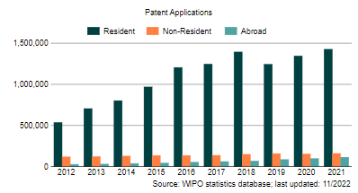
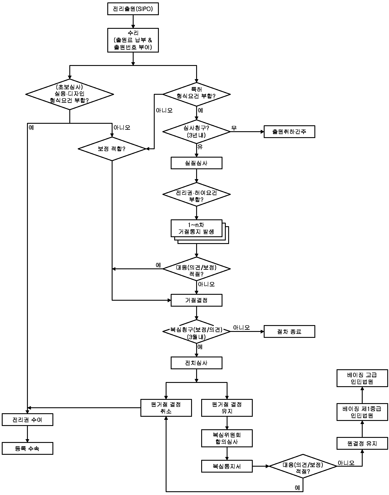
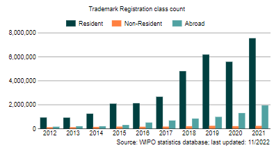
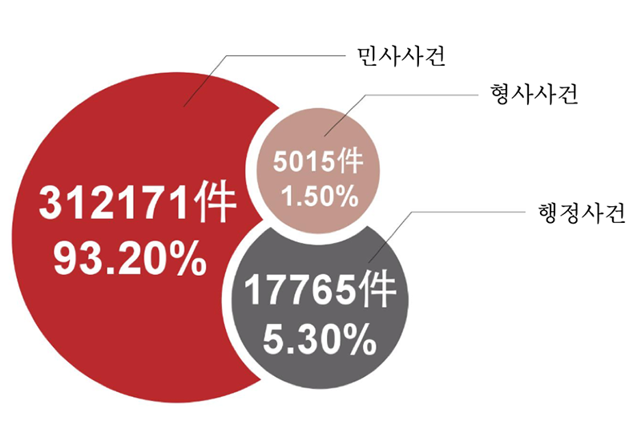

PARTI 중국일반현황
제1절 국가·지역정보
1. 국가 기본정보
| [표 1] 국가기본정보 출처 : 외교부, KOTRA | |
| 일반사항 |
•국명 : 중화인민공화국(中華人民共和國)
•건국일 : 1949.10.01.(국경일) •수도 : 베이징(北京) •면적 : 약 960만㎢ (한반도의 약 44배) •인구 : 약 14억 1260만명(대만, 홍콩, 마카오 제외) •민족 : - 한족(漢族, 91.5%) 및 55개 소수민족(8.9%) - 조선족 : 170만여명(소수민족의 1.4%) •표준어 : 보통화(북경어에 기초) |
|---|---|
| 정치현황 |
•정부형태 : 노농연맹에 기초한 인민민주주의 사회주의 국가
•행정구역 : 22개성, 4개직할시, 5개자치구, 2개특별행정구 ※ 중국은 대만을 23번째 성으로 간주 •유엔가입 : ’71.10월(안보리 상임이사국) |
| 경제현황 (2021년 기준, IMF 추정치) |
•GDP : 17조 4580억$ (국가발개위)
•1인당GDP : 1만 9259$ (국가발개위) •경제성장률 : 8.1% (국가통계국) •화폐단위 : 元(1$ = 약 6.3746元, '22.1. 인민은행) •교역 : 교역규모 : 39조 1,000억위안(해관총서) -수출액 : 3조 3,680억$ -수입액 : 2조 6788억$ •주요산업 : 1차 7.7%, 2차 37.8%, 3차 54.5%(국가통계국) •외환보유고 : 3조 2,502억불('21.12월 국가외환관리국) |
| 우리나라와의 관계 |
•주중대사관 연혁 : 1992.8.24 수교 / 8.27 한국대사관 개설
•투자현황 - 대중국투자(2021. 신고액기준) : 122.3억불(한국수출입은행) - 1968.~2021.12.까지 누계 : 1,062.6억불 •교역 : 대중국교역(2021, 한국무역협회) - 2021.12. 기준, 중국은 우리의 최대 수출, 수입, 교역대상국 - '21년 12월 기준, 한국은 중국의 수입 1위, 수출 3위, 교역대상국 3위(홍콩, 대만 제외) - 교역 : 3,015.4억불(무역수지 243.0억불 흑자) - 수출액 : 1629억 2000만$ - 수입액 : 1386억 2000만$ - 수출품목 : 반도체, 합성수지,평판디스플레이 및 센서 - 수입품목 : 반도체, 컴퓨터, 정밀화학원료 •인적교류(2020. 기준, 한국관광공사 / 중국국가통계국): 총118만명 - 방중 : 44만명(추정) - 방한 : 74만명 - 유학생(2021.04.01. 기준, 교육부) - 한국내 중국 유학생 : 67,348명 - 중국내 한국 유학생 : 26,949명 •장기체류자수 - 한국체류 중국인 약 84만명(중국동포 약61만명 포함)(2021.12. 기준, 법무부) - 중국체류 한국인 24만 8천여 명('21 재외동포현황) |
| [표 2] 對 韓 무역협정 체결현황 출처 : KOTRA | ||||
|---|---|---|---|---|
| 협정명 | 체결국가 | 체결일자 | 발효일자 | 비고 |
| 아세아-태평양 무역협정 | 한국, 인도, 스리랑카, 방글라데시, 라오스, 몽골 | 2001.05.23 | 2018.07.01 |
-회원국 협상을 통해 관세율 인하
-2018년 7월 1일부로 제4차 협상 관세율 시행 |
| 한-중 자유무역협정 | 한국 | 2015.06.01 | 2015.12.20 | -2018년 3월 후속 협상(투자 및 서비스 무역 분야) 개시 |
2. 경제관련 정보
| [표 3] 홍콩 경제관련 지표 현황 출처: IMF, 해관총서, GTA, 국가통계국, KOTRA | |||||
|---|---|---|---|---|---|
| 경제지표 | 2017 | 2018 | 2019 | 2020 | 2021 |
| 경제성장률(%) | 6.95 | 6.75 | 5.95 | 2.24 | 8.08 |
| 명목 GDP( 십억$) | 12,265.3 | 13,841.8 | 14,340.6 | 14,862.6 | 17,458 |
| 1인당 GDP(PPP, $) | 14,151.8 | 15,409.7 | 16,563.8 | 17,114.7 | 19,259.7 |
| 1인당 명목 GDP($) | 8,760.2 | 9,848.9 | 10,170.1 | 10,525 | 12,358.8 |
| 정부부채(% of GDP) | 51.73 | 53.85 | 57.05 | 66.83 | 69 |
| 물가상승률(%) | 1.56 | 2.1 | 2.31 | 2.5 | 0.9 |
| 실업률(%) | 3.9 | 3.8 | 3.8 | 4.24 | 5.1 |
| 수출액(백만$) | 2,280,358.29 | 2,491,355.26 | 2,497,949.16 | 2,597,384.8 | 3,368,005.3 |
| 수입액(백만$) | 1,842,333.87 | 2,108,973.36 | 2,068,574.79 | 2,060,255.52 | 2,678,836.01 |
| 무역수지(백만$) | 438,024.42 | 382,381.9 | 429,374.37 | 537,129.28 | 689,169.29 |
| 외환 보유고(백만$) | 3,161,829.75 | 3,094,780.5 | 3,130,525.56 | 3,114,302.72 | 3,250,166 |
| 이자율(%) | 2.5 | 2.55 | 2.5 | 2.2 | 2.2 |
| 환율 (자국통화) | 6.76 | 6.62 | 6.91 | 7.11 | 6.37 |
3. 지식재산권 분야 정보
최근 중국에는 지식재산권 관련 제도를 강화하고 모조품을 엄격히 단속하는 등의 변화가 나타나고 있으며, 그동안 지식재산권 침범 행위로 몸살을 앓던 외국기업들이 중국 법원에서 승소하는 사례도 늘고 있음
중국의 지식재산권 보호 움직임에 대해 미중 무역협상에서 우호적인 분위기를 조성하기 위한 것으로 평가되는 면이 있으나, 동시에 이러한 변화가 중국이 지식재산권 보호에 대한 의지를 분명히 보여주는 것이라는 긍정적인 평가도 있음
중국 국민들도 정품 음원 구매자가 대다수를 차지할 정도로 과거에 비해 유료 서비스에 대한 인식이 변화하고 있음
중국기업들도 특허 보유 수준을 계속 높이는 등 미래 산업 분야에 대한 투자에 적극 나서고 있어, 이는 앞으로 중국이 지식재산권 보호를 더욱 중시해야 하는 원동력이 되고 있음
우리기업들은 중국의 지식재산권 분야의 법률 규정 및 제도를 정확히 파악하여 침해 사례가 발생한 경우 관련 법규를 활용해 지식재산권 보호에 대한 권리를 적극 사용해야 하며, 중국의 지식재산권 보호 환경 변화에 대응해 필요한 지식재산권을 미리 확인하고 사전에 적극 출원하여 분쟁을 미리 대비하는 노력이 필요함
제2절 현지 유관기관 정보
2018년 3월 ‘국무원 기구 개혁방안’(《国务院机构改革方案》)을 통해 행정 체계를 대폭 개편함에 따라 지식재산권 담당 부처의 변동 발생
- 주요 변경 사항으로, 전리는 국가지식재산권국에서, 상표는 국가공상행정관리총국에서 별도로 관리되던 문제를 개선하여 국가 지식재산권국로 업무를 통합하고, 국가지식재산권국을 국가시장감독관리총국의 관리 하에 두어 지식재산권의 시장에 대한 기능 관리에 실효성 증대
1. 산업재산권 기관
국가지식재산권국은 전리 및 상표 등 업무관리에 대한 책임이 있으며, 전리 및 상표 등의 출원 수리 및 심사를 총괄하며, 그 권리의 수여 업무를 담당하며, PCT 관련 특허국제출원업무 처리
- 국가지식재산권국 전리국 내에 전리출원 거절결정에 대한 불복 절차인 복심과 전리권의 무효 여부를 심리하는 무효선고 절차를 담당하는 복심 및 무효 심리부(复审和无效审理部) 설치
- 복심 및 무효 심리부는 2019년 지식재산권 기구 개혁에 따라 기존의 전리복심위원회에서 명칭이 개명되었고 기존의 국가지식재산권국의 직속기관에서 전리국 내부 기구에 편입
- 상표평심위원회는 국가공상행정관리총국 소속에서 현재 국가지식재산권국 상표국의 평심처(评审处)로 편입
- 국가지식재산권국 홈페이지를 참고하면, 2021년 현재, 천진, 상해, 광동 등 총 19개의 지방지식재산권국이 설치
2018년 4월 10일, 중국 국무원(国务院)은 시장감독 관리와 관련 집행업무를 담당하는 국무원의 장관급 직속기관으로 국가공상 행정관리총국(SAIC)을 폐지하는 대신 국가시장감독관리총국을 설립하고 현판식 개최
- 국가시장감독관리총국은 국무원 직속기구로 설치되어 시장 종합 관리감독을 주요 직책으로 하며, 특히, 시장질서 감독 관리의 내용으로 지식재산권의 침해 및 위조품 제작판매 행위에 대한 제재가 포함
2. 그 외 지식재산권 유관기관
세관을 통한 지재권 보호란 상표권, 판권을 침해하는 화물이 국경을 통과하여 국내로 수입되는 것을 막기 위한 국경조치를 의미
- 중국은 상표권, 전리권 뿐 아니라 전리권도 국경조치를 통해 보호하고 있으며 화물의 수입뿐만 아니라 수출에도 국경조치를 동일하게 적용
공안은 사회치안을 관리하고 국가의 행정권을 행사하는 정부의 중요한 구성 부분으로 형사 사건을 수사하며 국가의 사법권을 행사
- 상표권 분야에서 공안은 주로 상표권을 침해한 위법범죄활동을 억제하고 단속
- 지식재산권국, 공상행정관리국, 품질기술감독국, 판권국 및 세관 등의 주 업무부처에서 통보한 상표권 침해 혐의가 있는 화물 또는 물품에 대하여 공안은 입안(입건)하여 수사 여부 결정
- 수사 완료 후 범죄의 구성요건을 충족하는 경우 검찰원에 사건 이송
“국가지식재산권국 전리국 전리심사협력센터 기구편제에 관한 회답”(中央编办复字[2011] 102号《关于国家知识产权局专利局专利审查协作中心机构编制的批复》)에 근거하여 전리심사협력센터(专利审查协作中心) 설립 및 운영
- 전리심사협력센터는 출원에 대해 방식 및 실질심사, 일부 국가에 대한 PCT출원의 국제조사와 국제예비심사, 실용신안조사보고서, 관련 자문 업무 등을 수행
1993년에 설립된 국가지식재산권국 직속 사업기관으로, 과학기술 및 전리 정보 등의 검색 서비스, 분석 서비스, 무료 자문 서비스, 번역 서비스 및 온라인 검색 서비스 등을 제공
3. 지식재산권 관련 조약 현황
| [표 4] 지식재산권 관련 조약 현황 | ||||
|---|---|---|---|---|
| 구분 | 조약명 | 가입연도 | 우리나라 | |
| 지식재산권보호 | Paris Convention | 2008 | 1980 | |
| Trademark Law Treaty | X | 2002 | ||
| Singapore Treaty on the Law of Trademarks | X | 2016 | ||
| 글로벌 보호 체계 | Budapest Treaty | X | 1987 | |
| Hague Agreement | X | 2014 | ||
| Madrid Protocol | X | 2003 | ||
| Patent Cooperation Treaty (PCT) | 2009 | 1984 | ||
| 지재권 분류 | Locarno Agreement | X | 2011 | |
| Nice Agreement | X | 1998 | ||
| Strasbourg Agreement | X | 1998 | ||
| Vienna Agreement | X | 2011 | ||
제3절 지식재산권 지원 사업 현황
| [표 5] 중국 진출 국내 기업 지재권 관련 지원 사업 리스트 | |||||
|---|---|---|---|---|---|
| 사업분류 | 사업명 | 주요내용 | 세부정보(링크) | 비고 | |
| 1. 지식재산창출 | IP기반 해외진출 지원 | 수출(예정) 중소기업 대상 최대 3년간 IP 서비스(해외권리화 지원 등)를 제공하여 글로벌 강소기업으로 육성 | www.ripc.org | ||
| 스타트업 지식재산바우처 사업 | 스타트업 대상으로 원하는 IP 서비스(국내외 IP 권리화 등)를 원하는 시기에 이용할 수 있는 바우처 발급 | 위탁기관 미정 | |||
| 중소기업 IP 바로지원 | PCT 출원 비용 등 중소기업 경영시 발생하는 시급한 IP 애로 사항 상담 및 해결 | www.ripc.org | |||
| 2. 지식재산활용 | 지식재산 서비스 활성화 사업 | 지식재산서비스기업의 국내·외시장 판로 개척 지원 | www.kaips.or.kr | ||
| 3.지식재산보호 | 해외 지식재산센터(IP-DESK)운영 | 개별국가에 설치된 IP-DESK를 통해 해외 진출(예정) 기업의 해외 지재권 상담 및 분쟁 초동대응 등 지원 | www.kotra.or.kr | ||
| K-브랜드 분쟁대응 지원 | 수출기업의 K-브랜드 해외 지재권 침해 피해 최소화를 위한 온라인 위조 상품 및 상표 무단선점 대응 지원 | www.koipa.re.kr | |||
| 특허 분쟁대응 지원 | (사전예방)기업 맞춤형 특허분쟁 위험 진단 및 예방 지원 (사후대응)특허침해·피침해 분석 등 분쟁 상황별 맞춤형 대응 전략 제공 |
www.koipa.re.kr | |||
| 4. 기타 수출지원 사업 | 수출바우처 사업(산업부) | 중소·중견기업 중 세부사업 요건을 충족하는 기업을 대상으로, 해외 IP 획득 및 활용에 필요한 서비스를 바우처 형태로 지급 | www.exportvoucher.com | 산업부 | |
| 수출바우처 사업(중기부) | 수출 유망 중소기업 대상, 해외 IP획득 및 활용에 필요한 서비스를 바우처 형태로 지급 | www.exportvoucher.com | 중기부 | ||
| 중소기업 혁신 바우처 사업(중기부) | 제조업 영위 중소기업 대상, IP 출원 및 컨설팅 서비스를 바우처 형태로 지급 | www.mssmiv.com | 중기부 | ||
※ 사업분류 1,2,3은 특허청 산하 사업임
※ 위 자료는 2022년 기준으로 작성되었으며, 세부 지원 기준 등 자세한 사항은 각 홈페이지 링크를 통해 확인이 필요함
PARTII 지식재산권
제1절 개요
1. 법률체계 및 지식재산권 관련 법률
전리권(특허권, 실용신안권, 디자인권), 상표권, 저작권, 기타 권리(영업비밀, 반도체집적회로 배치설계권, 식물 육종권 등)로 나뉨
- 산업재산권인 발명전리(특허), 실용신형전리(실용신안), 외관설계전리(디자인)의 3가지 권리를 합쳐서 전리(專利)라 지칭
- 실제, “전리”는 “patent”를 의미하고 “patent”는 “특허”로 번역되어야 하므로, 전리법은 특허법으로, 3가지 전리는 각각 발명 특허, 실용신안 특허 및 디자인 특허로 지칭되어야 할 것이나, 이 경우 한국의 특허와 혼동될 수 있어, 일반적으로 專利(전리)의 한자의 음을 그래도 사용하고 있음
| [표 6] 중국의 지식재산권 유형 및 관련기관 | |||||
|---|---|---|---|---|---|
| 권리유형 | 보호대상 | 보호법령 | 담당행정기관 | ||
|
지 식 재 산 권 |
산 업 재 산 권 |
전리권 | 발명: 물질, 물건, 방법에 대한 새로운 기술 방안 | 전리법 | 국가지식재산권국 전리국 |
| 실용신안: 제품의 형상, 구조 및 그 결합에 대하여 제출한 실용적인 새로운 기술 방안(물건에만 한정됨) | 국가지식재산권국 전리국 | ||||
| 디자인: 제품의 형상, 도안 또는 그 결합 및 색채와 형상, 도안의 결합에 대하여 제출한 미적 감각을 주며 공업에 응용될 수 있는 새로운 디자인 | 국가시장감독관리총국 | ||||
| 상표권 | 상표,지리표시,서비스표,증명상표,단체표장 | 상표법 | 국가지식재산권국 상표국 | ||
| 저작권 | 문학작품, 촬영작품, 공정설계도, 제품설계도, 지도 등 도형작품, 모형작품, 소프트웨어 등 | 저작권법 | 중앙선전부 | ||
|
기 타 권 리 |
영업비밀 | 노하우, 클라이언트 정보 등 | 부정경쟁방지법 | 국가시장감독관리총국 | |
| 반도체 집적 회로 배치 설계권 | 반도체 집적회로 | 반도체 집적회로 배치설계 보호조례 | 국가지식재산권국 | ||
| 식물 육종권 | 식물신품종 | 식물신품종 보호조례 | 국가농업부 | ||
2. 최근 개정사항 및 동향 소개
1980년대 시장개방개혁 과정에서 지식재산권법에 대한 본격 정비 시작
- 중국의 최초 전리법은 1984년 3월 14일 공포되어 1985년에 시행된 이후, 2008년까지 3 차례의 개정을 통해 점차 국제적 기준과 관행에 부합하는 수준으로 개정하였고, 2019년 11월 1일부터 시행되고 있는 4차 개정 상표법은 징벌적 손해배상제도 및 간접 침해 등 권리보호 강화 방안 등이 추가
| [표 7] 중국에서 지식재산권의 제도와 관련된 주요 사건 | ||||
|---|---|---|---|---|
| 시기 | 사건 | |||
| 1978 | 경제와 정치 개혁의 시작 | |||
| 1980 | 세계지적재산권 기구(WIPO) 에 가입 | |||
| 1982 | 최초의 상표법 (중화인민공화국 상표법)제정 | |||
| 1984 | 파리협약에 가입 | |||
| 1991 | 컴퓨터 소프트웨어 보호 규정 제정 | |||
| 1992 | 전리법 1차 개정 | |||
| 1993. 2 | 상표법 제1차 개정 | |||
| 1994 | 특허협력조약(PCT)에 가입 | |||
| 2000 | 전리법 2차 개정 | |||
| 2001. 10 | 상표법 제2차 개정 | |||
| 2008 | 전리법 제3차 개정 | |||
| 2012. 8 | 상표법 제3차 개정(2014. 5. 1 시행) | |||
| 2019. 11. | 상표법 제4차 개정(2019. 11. 1 시행) | |||
중국의 경제 규모는 G2이나, 지식재산권(특허, 실용신안, 디자인, 상표) 출원의 양적인 측면에서는 이미 G1에 해당하고, 정부 차원의 지식재산권 출원 장려와 보호 정책이 다수 존재
- 중국 정부는 매년 국가지식재산권에 대한 추진계획을 수립하여 운영하고 있고, 2019년에는 2008년 수립된 ‘국가지식재산권전략강요’(国家知识产权战略纲要) 10주년 평가를 완료
- 2019년 5월 14일, 2035년에 중국을 지식재산권강국으로 발전시키는 것을 목표로 현대 사회에 적합한 지식재산권 업무를 제시하기 위한 지식재산권강국 전략강요((知识产权强国战略纲要)) 제정 착수
| 중점 임무 | 주요 내용 |
|---|---|
| 지식재산권 분야 개혁 심화 | 지식재산권 관리 체제 개혁 |
| 지식재산권 주요 정책 개혁 및 완성 | |
| 지식재산권 보호 역량 강화 | 법률 체제 완비 |
| 보호의 장기적 및 효율적 체제 수립 강화 | |
| 지식재산권 행정 보호 강화 | |
| 지식재산권 사법 보호 강화 | |
| 지식재산권 창출 및 활용 촉진 | 지식재산권 심사 품질 및 효율 향상 |
| 지식재산권 창출 품질 가이드 강화 | |
| 지식재산권 종합적 활용 강화 | |
| 지식재산권 이전 및 전환 촉진 | |
| 지식재산권 정보서비스 완비 | |
| 지식재산권 국제 교류 및 협력심화 | 지식재산권 국제 협력 수준 향상 |
| 해외리스트 예방 및 제어 강화 | |
| 조직 실시 및 보장 강화 | 지식재산권 전략 강구 및 실시 강화 |
| 지식재산권 사업 발전 기초 확립 | |
| 지식재산권 문화의 대대적 창도 |
특허, 실용신안, 디자인 관련 각각 법률이 존재하는 우리나라와 달리 중국의 특허법은 특허, 실용신안, 디자인 모두를 규율
- (개정 연혁) 이번 개정은 중국 특허법 제정(1984.3.12.) 이후, 제1차(1992.9.4.), 제2차(2000.8.25.), 제3차(2008.12.27.) 개정에 이은 제4차(2020.10.17.) 개정 후 시행(2021.6.1.)
(1) 특허침해에 대한 처벌 강화
특허법의 금번 수정에 있어서, 중점은 특허권자의 합법 권익에 대한 보호를 강화하고, 특허의 실시와 활용을 촉진하고, 특허권 부여 제도를 완벽화하는 데 있음. 금번의 특허권 수정은 직무 발명, 보상기간과 약품의 연결, 특허 개방 허가제도, 외관 설계 보호 및 권리 침해 배상금액 등 몇 개의 측면에서 중요한 변경을 진행하여 지적재산권에 대한 보호를 더 강화함
• 징벌적 손해배상제도 도입
- 고의에 의한 특허침해의 경우, 법원이 특허권자가 입은 손해, 침해자가 얻은 이익 또는 특허실시료를 고려하여 산정한 손해액의 5배까지 배상액을 정할 수 있도록 하는 징벌적 손해배상제도(Punitive damages)를 도입하였음. 중국에서는 2014. 5. 1.부터 시행된 개정상표법, 2019. 4. 23.부터 시행된 개정부정경쟁방지법을 통해 지식재산권 관련 법률에 징벌적 손해배상제도가 도입되었는데, 이번 개정으로 전리법에도 징벌적 손해배상제도가 도입됨. 이로써 중국에서는 저작권법을 제외한 모든 지식재산권관련 법률에 징벌적 손해배상제도가 도입됨
• 법정 손해배상액 상향 조정
- 중국에서는 특허침해로 인한 손해배상액을 특허권자가 침해로 인하여 입은 실제 손해액 또는 침해자가 침해로 인하여 얻은 이익액에 따라 인정하는데, 만약 특허권자의 손해액 또는 침해자가 얻은 이익액을 확정하기 어려운 경우에는, 특허 실시료를 고려하여 손해액을 인정하게 됨. 나아가 만약 위 방법으로 손해액을 정하기 곤란한 경우라면, 법원이 직권으로 법정 손해배상액으로 손해액을 인정할 수 있음. 그런데 이번 개정 전리법에서는, 법정 손해배상액을 "1만 위안(한화 약 170만원) 이상 100만 위안(한화 약 1억 7,000만원) 이하"에서 "3만 위안(한화 약 500만원) 이상 500만 위안(한화 약 8억 5,000만원)이하"로 상향 조정하였음
• 특허권자의 배상금액 입증책임 완화
- 특허침해 사건에서 배상금액에 대한 특허권자의 입증책임을 완화하기 위하여 "권리자가 입증을 위한 노력을 다하였고, 침해행위와 관련된 장부, 자료를 주로 침해자가 보유하고 있는 경우, 법원은 침해자에게 침해행위와 관련된 장부, 자료의 제출을 명할 수 있으며, 침해자가 위 자료를 제출하지 않거나 허위 장부, 자료를 제출하는 경우, 법원은 권리자의 주장 및 제출한 증거를 참고하여 배상액을 확정할 수 있다”는 규정이 신설됨
(2) 디자인 제도 개정
중국은 이번 전리법 개정을 통해 디자인 제도 관련 부분을 다수 개정하였으며, "헤이그 협정"에 가입하기 위한 준비를 보다 적극적으로 추진하고 있음
• 부분 디자인 제도 도입
- 전리법 개정안은 디자인의 정의를 "제품의 형상, 무늬 또는 그 결합 및 색채와 형상, 무늬의 결합으로 형성된 미감을 보유하고 산업 응용에 적합한 새로운 설계"에서 "제품의 전체 또는 국부에 대한 형상, 무늬 또는 그 결합 및 색채와 형상, 무늬의 결합으로 형성된 미감을 보유하고 산업응용에 적합한 새로운 설계"로 변경함
• 디자인권 보호기간 연장
- 전리법 개정안은 "헤이그 협정"과 동일하게 디자인권 보호기간을 10년에서 15년으로 연장함. 특허권과 실용신안권의 보호기간은 각 20년과 10년으로 기존과 동일함
• 디자인에 대한 국내우선권제도 도입
- 기존 전리법에는 특허, 실용신안에 대해서만 국내우선권제도가 도입되어 있었고, 디자인에 대해서는 도입되어 있지 않음. 이번 개정을 통해 "디자인이 중국에서 최초 출원된 날부터 6개월 이내에, 출원인이 동일한 주제에 대하여 다시 국무원 특허행정부문에 출원한 경우 우선권을 가짐"이라는 규정이 신설되어, 디자인에 대해서도 국내우선권제도가 도입되는 것으로 개정됨
(3) 오픈 라이선스 제도 도입
공개된 특허 사용을 촉진하기 위한 조치로 오픈 라이선스 관련 규정이 이번 개정을 통해 도입됨. 위 개정안에 따르면, 특허권자가 사전에 누구나 그 특허를 실시하는 것을 허락하고 실시료 지급 방식과 기준을 정하여 둔 경우, 중국 특허청은 해당 내용을 공고하게 됨. 만약 개인이나 업체가 이러한 오픈 라이선스 특허를 실시하려고 하면, 서면으로 특허권자에게 통지하고 공고되어 있는 실시료 지급방식과 기준에 따라 실시료를 지급하는 경우, 해당 특허에 대한 오픈라이선스를 취득할 수 있게 됨. 한편, 전리법 개정안에는 위 제도가 신속히 정착될 수 있도록 오픈 라이선스 실시 기간에 연차료를 감면해주는 규정도 함께 도입되었음
(4) 특허권 존속기간 연장제도 도입
중국 특허권의 존속기간은 출원일부터 20년인데, 이번 개정을 통해 특허권 존속기간 연장제도가 다음과 같이 도입되었음
- "특허출원일부터 4년이 경과하고 실질 심사 청구일부터 3년이 경과한 경우, 국무원 특허행정기관은 특허권자의 청구에 따라 특허권 수여 과정의 불합리한 지연에 대하여 특허권 존속기간을 연장하여 줌. 단, 출원인으로 인하여 발생한 지연은 제외함"
- "신약 출시 심사에 소요된 기간을 보상하기 위하여, 중국에서 출시 허가를 받은 신약 관련 특허에 대하여 국무원 특허행정기관은 특허권자의 청구에 따라 특허권 존속기간을 연장하여 줌. 연장 기간은 5년을 초과해서는 안 되며, 신약 출시 허가 후의 총 특허권 존속기간은 14년을 초과해서는 안됨”
(5) 부정경쟁방지법 개정
1993년에 부정경쟁법이 제정된 이래로 첫 번째 개정안이 2016년 11월에 국무원 상무회의에서 통과(2018년 1월 1일 시행)된 후, 2년도 되지 않아 다시 법률을 개정하여, 정부의 부정경쟁행위 제재에 대한 강화 의지 천명
2018년 1월 1일 시행 부정경쟁방지법의 주요 개정 내용
- 타인의 등록상표와 미등록한 주지저명상표를 기업명칭의 상호로 사용하여 대중의 오인을 야기하는 행위를 부정경쟁 행위로 규정
- 영업비밀 침해행위에 대한 과징금을 기존의 1만~20만 위안에서 10만~300만 위안으로 상향 조정하였으며, 인터넷 서비스를 방해하는 행위에 대한 과징금을 10만~300만 위안으로 규정
- 인터넷 부정경쟁 유형을 새롭게 추가함(제12조)
2019년 11월 1일 시행 부정경쟁방지법의 주요 개정 내용
- (영업비밀 정의) 제9조 제3항에 규정한 영업비밀의 정의에서 “기술정보 및 경영정보”를 “기술정보, 경영정보 등 상업 정보”로 수정함
- (영업비밀의 침해) 제9조 제1항의 영업비밀 침해의 유형 중 부정취득 유형으로 ‘전자적 침투’ 방법을 추가하였고, 제9조 제2항에 제1항 영업비밀 침해의 주체인 경영자 이외에 기타 자연인, 법인, 법인이 아닌 조직이 제1항의 영업비밀 침해행위를 한 경우에도 영업비밀 침해로 간주하는 규정을 신설함
- (징벌적 손해배상) 제17조에서 경영자의 악의적인 영업비밀 침해행위에 대해 사안이 엄중한 경우, 산정된 침해액의 1배~5배까지 배상으로 확정할 수 있는 징벌적 손해배상제도를 도입하고, 실제 손해를 산정하기 어려운 경우 법원이 권리자에게 500만 위안의 배상금 지급 판결을 할 수 있게 함
- (행정책임 강화) 제21조에서 영업비밀 침해에 관한 과태료 처분을 10만 위안~100만 위안, 사안이 엄중한 경우 50만 위안~100만 위안으로 규정하여 과태료의 상한 금액을 높임
- (증명책임전환) 영업비밀 침해의 민사소송 과정 중 증명책임전환 규정을 제32조에 신설하여, 피침해자가 영업비밀 침해를 소명하면 영업비밀성이 없다는 것을 증명하는 입증책임은 침해자에게로 전환됨
(6) 직무 발명 관련 내용
직무 발명 창조에 대한 기관의 처분권을 새롭게 추가하고, 그의 특허 출원 권리 및 특허권을 포함시켜, 기관이 내부 지적재산권 관리제도를 완벽화 하도록 촉진하고 발명 창조의 권리 귀속을 미리 약정하도록 해 분쟁의 발생을 예방하도록 규정함
- 현금 외의 장려 발급 방식을 추가해 발명인 또는 설계인에 대한 보호를 강화
(7) 행정 법률의 실행 강화 관련 내용
특허법 실행부서와 특허업무 관리부서를 구분하고 국가법률의 형식으로 후자가 특허권 침해 분쟁 처리에 대해 취하는 조치와 역량을 명확히 하도록 규정함
국무원과 지방의 특허관리업무부서가 특허권 침해 분쟁을 처리하는 분담을 명확히 하도록 규정함
(8) 반독점법 개정
반독점법의 적용 범위 확대되고 법 위반 시 부과되는 벌금액수가 상승하였으므로, 우리 기업이 IP실시로 인해 시장 경쟁을 제한할 경우 반독점법의 적용대상 여부인지를 반드시 고려해야함
(1) 신규성 상실 예외 사유 추가
공지되었음에도 신규성을 상실하지 않은 것으로 보는 예외 사유에 "국가에 긴급사태 또는 비상상황이 발생한 경우, 공공의 이익을 목적으로 처음 공개한 것”이 추가됨. 이와 관련된 개정안은 다음과 같음
- 특허 출원된 발명이 출원일 전 6개월 이내에 다음 각호의 어느 하나에 해당하는 경우, 신규성을 상실하지 않음
(1) 국가에 긴급사태 또는 비상 상황이 발생한 경우, 공공의 이익을 목적으로 처음 공개한 것
(2) 중국정부가 주최하거나 승인하는 국제전시회에서 처음 전시한 것
(3) 규정된 학술회의 또는 기술회의에서 처음 발표된 것
(4) 타인이 출원인의 동의를 거치지 않고 그 내용을 누설한 것
(2) 우선권 주장 시, 첫 출원 문서부본의 제출기한연장
현행 전리법에 따르면, 특허출원과 실용신안출원 절차에서 출원인이 우선권을 주장하려면 후출원 이후 "3개월 이내에 첫 출원문서의 부본을 제출"하여야 함. 그런데 이번 개정안에서는 "첫 출원일부터 16개월 이내에 첫 출원 문서의 부본을 제출"하면 족한 것으로 변경되었음. 특허출원과 실용신안출원에 있어서 우선권을 주장하려면 첫 출원일부터 적어도 12개월 이내에 후출원을 진행하여야 하므로, 사실상 첫 출원 문서 부본을 제출할 수 있는 기한이 최소 1개월 이상 연장된 것임. 반면, 디자인출원시 우선권을 주장하는 경우에는 여전히 후 출원이후 "3개월 이내에 첫 출원문서의 부본을 제출”하여야 함
(3) 특허침해 소멸시효 기간이 개정 민법총칙과 동일하게 3년으로 연장됨
현행 전리법에는 특허침해에 대한 소멸시효 기간이 "특허권자 또는 이해관계인이 침해행위를 안 날 또는 알 수 있게 된 날부터 2년"으로 규정되어 있음. 그런데 2017. 10. 1.부터 시행된 "민법총칙"에서 소멸시효 기간이 3년으로 개정된 이후, 기존 전리법 소멸시효 규정에도 불구하고 실무상으로는 민법총칙의 규정에 따라 소멸시효 기간 3년이 적용되어 왔음. 이에 이번 개정을 통해 특허침해에 대한 소멸시효 기간도 민법총칙 소멸시효 기간인 "특허권자 또는 이해관계인이 침해행위를 안 날 또는 알 수 있게 된 날부터 3년"으로 동일하게 개정되었음. 한국 기업은 침해행위를 안 날로부터 2년 안에 소송을 제기해야 되었는데, 이제 한국과 동일하게 3년의 소멸시효 기간이 적용되는 것으로 개정되었음
(4) 특허권행사 시 신의성실의원칙준수 의무 도입
이번 개정을 통하여 "특허 출원 및 특허권 행사에 있어서 신의성실의 원칙을 준수하여야 함. 특허권을 남용하여 공공의 이익 또는 타인의 적법한 권익에 손해를 입혀서는 안됨. 특허권을 남용하여 경쟁을 배제하거나 제한한 것이 독점행위를 구성하는 경우 <중화인민공화국 반독점법>에 따라 처리한다"는 조항이 도입되었음
(5) 약품 출시 허가 심사 관련 특허분쟁 처리 규정 도입
신약 발명 특허의 특허권 기간 보상시스템을 새롭게 추가하여 상장 시 심사 평가 비준이 차지하는 시간을 보상함. 상기 보상기간은 5년을 초과하지 않으며, 비준 받아 상장한 후 신약의 특허권 총 유효 기한이 14년을 초과하지 않음
약품 출시 허가심사와 관련하여 특허분쟁 처리규정이 다음과 같이 신설됨
- 약품 출시 허가 심사 과정에서, 약품 출시 허가 신청인과 관련 특허권자 또는 이해관계인 사이에 약품 관련 특허권에 대한 분쟁이 발생한 경우, 당사자들은 법원에 소를 제기하여 출시 허가를 신청한 약품 관련 기술이 타인 특허권의 보호 범위에 속하는지에 대한 판결을 구할 수 있음. 국무원 약품감독관리부문은 법원의 확정 판정에 따라 관련 약품의 출시 허가를 잠정적으로 정지하는 결정을 내릴 수 있음
- 약품 출시 허가신청인과 관련 특허권자 또는 이해관계인은 약품 관련 특허권 분쟁에 대하여 국무원 특허행정부문에 행정판정을 청구할 수 있음
- 국무원 약품감독관리부문은 국무원 특허행정부문과 함께, 약품 출시 허가 심사와 약품 출시 허가신청단계의 특허권 분쟁해결의 구체적인 연결방법을 정하여, 국무원의 동의를 거친 후 실시함
악의적 상표출원 제재
- 제4조에서 사용 목적 없는 악의적 상표등록을 거절 사유로 신설
- 제19조에서 상표대리기관 또한 사용 목적이 아닌 악의적 상표등록을 거절해야 할 의무 규정
악의적 상표출원에 대한 징벌적 손해배상
- 제63조의 손해배상액의 계산방법 중 악의적 상표권 침해행위에 대해서 산정된 침해액의 1배~5배까지 배상액으로 확정할 수 있게 하고, 손실을 산정하기 어려운 경우 500만 위안 이하의 배상을 판결할 수 있도록 개정하여 징벌적 책임 강화
몰수 및 행정처벌
- 제63조 제4항 및 제5항에 허위표시 상품에 관한 몰수(폐기, 유통 금지) 규정 신설
- 제68조 제4항에 악의적 상표등록 출원행위에 대한 과태료를 부과할 수 있고, 소송을 남용하는 경우에도 행정벌을 부과할 수 있음을 규정
3. 한 페이지로 보는 지재권 제도
|
● 전리는 특허를 의미함. 특허법에 발명전리(우리나라의 ‘특허’에 대응), 실용신안 전리(우리나라의 ‘실용신안’에 대응), 디자인 전리(우리나라의 ‘디자인’에 대응)이 모두 규정되어 있음
● 특허침해 시 징벌적 손해배상제도가 도입되어 손해액의 5배까지 배상할 수 있음 ● 최근 디자인법이 개정되어, 부분 디자인제도 도입/디자인권 보호기간 15년으로 연장/국내 우선권 제도 도입이 이루어짐 ● 부정경쟁방지법을 통해 최근 문제 되는 인터넷 부정경쟁행위 제재를 가하고 있음 ● 중국 상표법에서 악의적 상표 출원을 제재하고 있으며, 경우에 따라 징벌적 손해배상금 부과하여 상표 무단선점 행위 방지하고 있음 ● 특허 및 디자인의 신규성 예외 인정 기간은 6개월이나, 신규성 예외 사유가 극히 제한적으로 인정 되고 있음 (공지 전 빠른 출원이 필요) ● 중국은 BM발명의 특허 적격성을 심사지침에 의해 인정하고 있음 ● 특허 출원 시 발명자 및 출원인의 이름을 한자로 기재해야 함 ● 유전자원에 의한 특허 출원일 경우 출원인은 유전자원의 출처를 설명해야 함 ● 중국에서는 상품과 서비스업 간의 동종성 및 유사성을 심사하지 않지 않기 때문에, 관련성 있는 상품과 서비스업에 대한 상표권 권리자가 다를 수 있음을 염두해야 함 ● 35류 상표 출원 시, 어떤 상품에 대한 도소매인지 특정할 수 없음. 따라서 동일 상표에 대하여 상품 그 자체와 상품의 도소매업에 대한 상표권자가 각각 다를 수 있음 (악의적 무단상표 선점을 막기 위하여 35류 상표 출원을 권고함) ● 저명상표를 상표법에서 보호하고 있으며, 자신의 상표가 저명상표가 아님에도 저명상표라는 방식으로 광고하는 경우 과태료 처분받을 수 있음 ● 세관에서 침해품 압류 신청하는 경우 사전 등기 시 세관 직권 침해단속 가능하여 침해 구제에 효과적임 ● 중국에서는 전자상거래법이 시행되고 있어, 전자상거래 플랫폼 경영자는 지재권 보호할 의무가 있으며, 권리자는 침해 시 필요 조치를 취할 것을 요구할 권리를 보유하고 있음 ● 상표브로커에 대응하려면 ① 내 상표 먼저 출원되었고 아직 6개월이 경과하지 않은 경우에는 우선권 출원을, ② 내 상표를 출원하지 않았거나, 혹은 6개월이 경과한 경우에는 이의신청, ③ 브로커의 상표가 이미 등록된 경우 무효심판 혹은 불사용심판을 제기할 수 있음 |
제2절 주요 지식재산권별 비교표
전리란 특허, 실용신안, 디자인을 포괄하는 개념으로 각각 발명전리, 실용신안전리, 디자인전리로 구분
| [표 9] 전리법 제2조에 따른 발명, 실용신안, 디자인의 정의 | ||||
|---|---|---|---|---|
|
제2조 이 법에서의 발명창작이란 발명∙실용신안∙디자인을 가리킴
-발명이란 제품, 방법 또는 이를 개조하여 제출한 새로운 기술적 방안 -실용신안이란 제품의 형상, 구조 또는 그와 결합하여 제출한 실용에 적합한 새로운 기술적 방안 -디자인이란 제품의 형상, 도안 또는 그와 결합한 것과 색채와 형상, 도안의 결합으로 만들어 낸 미적 감각이 풍부하고 공업적 응용에 적합한 새로운 디자인 |
||||
1. 특허(전리)
| [표 10] 한-중 특허 제도 비교 | ||
|---|---|---|
| 구분 | 대한민국 | 중국 |
| 법률 | 특허법, 실용신안법, 디자인 보호법 개별 규율 | 전리법에서 특허, 실용신안, 디자인 통합 규율 |
| 실체심사 | 누구나 청구 가능 | 출원인만 청구 가능 |
| 출원일로부터 3년 이내 청구 | 출원일 또는 우선권 주장이 있는 경우 우선일로부터 3년이내 청구 | |
| 실용신안 실체심사 진행 O | 실용신안 실체심사 진행 X | |
| 공지예외주장 (신규성 상실 예외) 인정 요건 | 신규성 상실일로부터 12개월내 출원 | 신규성 상실일로부터 6개월내 출원 |
| 특허를 받을 수 있는 권리를 가진자에 의한 경우 신규성 상실 사유의 실질적 제한 없음 | 해당 발명이 공인된 국내외 박람회에 출품하였 거나발명자가 연구개발 목적으로 실험을 한 경우에 한함 | |
| 확대된 선원 | 동일발명자 또는 출원인에 대해서는 적용 X | 동일발명자 또는 출원인에 대해서는 적용 O |
| 직무발명 | 발명진흥법에서 규정 | 특허법에서 규정 |
| 존속기간 연장 | 관리기관의 허가가 필요한 발명에 대해 최대 5년 연장 | 無 |
| 간접침해 | 有 | 無 |
| 징벌적 손해배상 | 有 | 無 |
2. 디자인
| [표 11] 한-중 디자인 제도 비교 | ||
|---|---|---|
| 구분 | 대한민국 | 중국 |
| 법률 | 특허법, 실용신안법, 디자인보호법 개별 규율 | 전리법에서 특허, 실용신안, 디자인 통합 규율 |
| 실체심사 | 실체심사 진행O (일부무심사제도有) |
실체심사 진행X (무심사주의) |
| 존속기간 | 20년 | 15년 |
| 공지예외주장 (신규성 상실 예외) 인정 요건 | 신규성 상실일로부터 12개월 내 출원 | 신규성 상실일로부터 6개월 내 출원 |
| 디자인권을 받을 수 있는 권리를 가진 자에 의한 경우 신규성 상실 사유의 실질적 제한 없음 | 해당 디자인이 공인된 국내외 박람회에 출품하였거나 연구개발 목적으로 실험을 한 경우에 한함 | |
| 부분 디자인 | 有 | 有 |
| 비밀 디자인 | 有 | 無 |
3. 상표
| [표 12] 한-중 상표 제도 비교 | ||
|---|---|---|
| 대한민국 | 중국 | |
| 의견 제출 기회 | 제공 | 미제공 |
| 일부 거절 결정 | 불가 | 가능 |
| 외국에서만 유명한 상표 |
독립적 보호 가능
(법 제34조 제1항 제3호) |
독립적 보호 규정 無 |
| [표 13] 상표 지정상품 관련 제도 비교 | ||
|---|---|---|
| 대한민국 | 중국 | |
| 상품-서비스업 비교 | 동일 또는 유사성 판단 0 | 동일 또는 유사성 판단 X |
| 도소매업의 상품 지정 | 가능 | 가능 |
PARTIII 특허·실용신안
제1절 주요제도 및 등록요건
1. 출원현황 통계
2011년부터 2020년까지 중국의 특허 출원 건수를 살펴보면 아래의 표와 같음
- 2020년 특허 출원은 159.3 만건으로 2019년 148.5 만건 대비 7.3% 증가
| [표 14] 중국의 특허 출원건수 출처: WIPO | ||||
|---|---|---|---|---|
| 연도 | Resident | Non-Resident | Abroad |

|
| 2011 | 415,829 | 110,583 | 20,357 | |
| 2012 | 535,313 | 117,464 | 26,159 | |
| 2013 | 704,936 | 120,200 | 29,179 | |
| 2014 | 801,135 | 127,042 | 36,722 | |
| 2015 | 968,252 | 133,612 | 42,305 | |
| 2016 | 1,204,981 | 133,522 | 52,485 | |
| 2017 | 1,245,709 | 135,885 | 60,368 | |
| 2018 | 1,393,815 | 148,187 | 66,428 | |
| 2019 | 1,243,568 | 157,093 | 84,499 | |
| 2020 | 1,344,817 | 152,342 | 96,268 | |
2011년부터 2020년까지 중국의 특허 등록된 건수를 살피면 다음과 같음
- 2020년 특허 등록은 57.4 만건으로 2019년 49.1 만건 대비 16.8% 증가
| [표 15] 중국의 특허 등록건수 출처: WIPO | ||||
|---|---|---|---|---|
| 연도 | Resident | Non-Resident | Abroad |
|
| 2011 | 112,347 | 59,766 | 5,781 | |
| 2012 | 143,808 | 73,297 | 8,298 | |
| 2013 | 143,535 | 64,153 | 10,937 | |
| 2014 | 162,680 | 70,548 | 13,671 | |
| 2015 | 263,436 | 95,880 | 16,073 | |
| 2016 | 302,136 | 102,072 | 20,387 | |
| 2017 | 326,970 | 93,174 | 25,606 | |
| 2018 | 345,959 | 86,188 | 31,347 | |
| 2019 | 360,919 | 91,885 | 38,943 | |
| 2020 | 440,691 | 89,436 | 44,467 | |
2. 주요제도
중국에서 특허권을 획득하기 위해서, 발명은 산업상 이용가능성(실용성, 实用性), 신규성(新颖性), 진보성(창조성, 创造性)을 가져야 하며, 먼저 특허출원되어야 하고 저촉 신청되면 전리가 수여될 수 없음. 또한, 특허를 수여하지 않는 발명에 해당하지 않아야 함
중국 전리법 상 발명 및 실용신안의 보호대상은 다음과 같이 규정되어 있음
| 중국 전리법 제2조 |
|---|
|
발명이란 물품, 방법 또는 그의 개량에 대해 제출한 새로운 기술방안을 말함
실용신안이란 물품의 형상, 구조 또는 그 결합에 대해 제출한, 실용에 적합한 새로운 기술방안을 말함 |
중국 전리법은 한국 특허법과 달리 산업상 이용가능성의 판단 시에 ‘적극적인 효과’를 추가로 요구하고 있다는 점에서 차이가 있으나 실무적으로는 중국과 한국 모두 유사한 것으로 보임
중국 특허의 등록 요건은 대략적으로 아래와 같음
(1) 산업상 이용가능성(실용성)
중국 전리법에서 산업상 이용가능성의 판단은 1) 산업분야에서, 2) 제조 또는 이용 가능해야 하며, 3) 적극적인 효과가 있는지의 여부를 기준으로 함
중국 전리법에서 반복 재현할 수 없는 발명, 자연법칙을 위반한 발명, 또는 인체 또는 동물체에 대한 비치료 목적의 외과수술방법은 산업상 이용 가능성을 구비하지 못한 것으로 봄
(2) 신규성
중국 전리법상의 신규성은 한국 특허법상 신규성과 확대된 선출원을 동시에 포함한 개념임. 신규성은 발명의 내용이 공중에게 알려지지 않은 상태에 있는 것을 의미함. 중국 전리법에서 신규성은 선행기술(현유기술, 现有技术)이 아니면 신규성이 인정되는 것으로 기재되어 있음. 선행기술은 신청일 이전에 국내외에서 공중에게 알려진 기술을 말함
중국에서 타출원이 당해 출원에 대한 인용문헌으로 사용되기 위해서는 1) 당해 특허의 ‘출원일 이전’에 타출원이 출원되어야 하며, 2) 당해 출원의 ‘출원일 또는 출원일 이후’에 타출원이 공개 또는 공고 되어야 함
(3) 진보성
중국에서 발명 전리의 경우는 청구범위에 기재된 발명이 선행기술과 비교하여 ‘특출한 실질적인 특징’과 ‘현저한 진보’가 있는지 여부로 진보성을 판단함. 실용신안의 진보성 수준은 발명 전리의 진보성 수준보다 낮은 것으로 심사지침서에 명시되어 있음
- ‘특출한 실질적인 특징’에 대한 판단 방법은 우선 가장 근접한 선행기술을 확정하고, 가장 근접한 선행기술과 대비되는 발명의 구별되는 특징과 발명이 실제로 해결하고자 하는 기술문제를 확정한 후, 발명의 구별되는 특징이 해당 분야의 기술자에게 자명한 것인지를 판단
- ‘현저한 진보’에 대한 판단 방법은 청구범위에 기재된 발명이 선행기술에 비하여 유익한 효과를 구비했는지 고려하여 판단
■ 발명의 보호 대상
- 물품, 방법 또는 그의 개량에 대해 제출한 새로운 기술방안
■ 실용신안의 보호 대상
- 물품의 형상, 구조 또는 그 결합에 대해 제출한, 실용에 적합한 새로운 기술방안
특허, 실용신안 출원 사이에 출원 변경은 가능하지 않으나, 동일한 기술방안에 대해 특허 출원과 실용신안 출원을 동시 진행 후 하나의 권리만을 선택적으로 획득할 수 있는 이중출원 제도 운영
특허권 또는 실용신안권을 획득하기 위해서, 발명은 산업상 이용 가능성(실용성, 实用性), 신규성(新颖性), 진보성(창조성, 创造性)을 가져야 하며, 먼저 출원되어야 하고 특허(실용신안)을 수여하지 않는 발명에 해당하지 않아야 함
(1) 산업상 이용가능성(실용성)
발명 또는 실용신안을 제조 또는 사용할 수 있으며, 또한 적극적인 효과를 얻을 수 있는 것을 의미
i) 산업분야에서, ii) 제조 또는 이용 가능해야 하며, iii) 적극적인 효과가 있는지 여부를 기준으로 판단
반복 재현할 수 없는 발명, 자연법칙을 위반한 발명, 또는 인체 또는 동물체에 대한 비치료 목적의 외과수술방법은 산업상 이용 가능성을 구비하지 못함
*인체 또는 동물체에 대한 치료목적의 외과수술방법은 중국 전리법 제29조의 불특허사유 중 질병의 진단 및 치료방법에 해당하여 전리를 받을 수 없음
(2) 신규성
중국 전리법 상 신규성은 발명 또는 실용신안이 선행기술에 속하지 않으며, 또한 동일한 발명 또는 고안이 어떠한 단위 또는 개인에 의하여 출원일 전에 국무원전리행정부문에 전리출원을 하고, 출원일 이후에 공포된 전리출원문건 또는 공고된 전리 문건 중에 기재되어 있지 않는 것으로 규정
- 단, 한국 특허법에서 확대된 선원을 적용할 때, 동일 출원인 또는 발명자인 경우에는 확대된 선원 규정을 적용하지 않지만, 중국은 동일 출원인 또는 동일 발명자인 경우에도 확대된 선원 규정 적용
(3) 진보성
종래 기술에 비하여, 발명이 특출한 실질적 특징과 현저한 진보가 있거나, 고안이 실질적 특징과 진보가 있는 것으로, 청구범위에 기재된 발명이 선행기술과 비교하여 ‘특출한 실질적인 특징’과 ‘현저한 진보’가 있는지로 진보성 유무를 판단
- 실용신안의 경우 그 실질적 특징이 “특출”하거나 그 진보한 정도가 “현저”할 것을 요구하지 않아 특허의 진보성 수준보다 낮은 것으로 심사지침서에 명시
- 진보성 판단 시에는 발명의 기술방안 자체를 고려하여야할 뿐만 아니라 발명의 해당 기술분야, 해결하고자 하는 기술문제 및 발생하는 기술 효과도 고려
(4) 선출원주의
■ 법 규정
전리법 제9조 제1항 전문에서는 “동일한 발명 창조원 하나의 전리권만 수여한다”고 규정하고, 동조 제2항은 “2 이상의 출원인 각각이 동일한 발명 창조에 대하여 전리 출원을 한 경우, 전리권은 최선 출원인에게 수여됨.”으로 규정
- 동일한 발명 창조에 대한 중복된 전리권 수여를 금지하여 권리 간 충돌을 방지하기 위함으로, 한국 특허법 상의 선출원주의에 대응
- ‘동일한 발명 창조’란 2이상의 출원(또는 등록)의 보호범위가 동일한 청구항을 의미하며, 선출원이 저촉출원이거나 이미 공개된 선행기술인 경우에는 전리법 제9조가 아닌 제22조 제2항(신규성) 또는 동조 제3항(진보성) 규정이 적용
- 예외적으로, 동일한 발명 창조에 대해 동일한 날에 특허 출원과 실용신안 출원이 동시에 제출되는 경우 일정 조건하에서 거절되지 않음(전리법 제9조 제1항 후단)
- 동일한 날에 출원하였는지 여부는 실제 출원일 또는 우선권 주장 출원의 경우 우선일을 기준으로 판단
■ 우선권 주장
조약우선권주장이란 파리조약에 의해서 출원인이 외국의 선출원을 기초로 하여 우선권을 향유함을 중국 전리국에 주장하는 것을 의미
- 중국에서 조약우선권을 향유하기 위해서는 1) 출원인이 2) 최초 외국 출원일로부터 12개월 내에 3) 동일한 주제로 특허출원하여야 함
- 국내우선권은 출원인은 중국에서 최초 전리출원을 한 날로부터 12개월 이내에 동일한 주제에 대해 전리출원을 할 때는 우선권을 향유할 수 있는 제도
(5) 단일성
1건의 전리출원으로서 제출할 수 있는 하나의 기본적 발명 구상에 속하는 2 이상의 발명 또는 실용신안은 기술적으로 서로 관련되며, 1개 또는 복수의 동일 또는 상응하는 특정 기술특징을 포함해야 함(전리법 제31조)
(1) 전리법 제5조의 부등록 사유
- 법률 또는 사회공중도덕 위반의 발명
- 불법적인 수단으로 획득한 유전자원(유전자원이 정상적인 출처에 의한 것임을 판단하기 위해서 출원 시에 출원인에게 해당 유전자원의 출처를 명시하도록 요구(26조 제5항))
(2) 전리를 수여하지 않는 발명의 객체
|
중국 전리법 제25조
아래에 수여하지 않음. 1) 과학발견 2) 지적활동의 규칙 및 방법 3) 질병의 진단 및 치료 방법 4) 동물 및 식물의 품종 5) 원자핵 변환방법으로 획득한 물질 6) 평면 인쇄물의 모양, 색채 또는 양자의 결합에 대하여 행한 것으로 주로 표시 기능을 하는 디자인 * 단, (4) 동물 및 식물 품종에 대한 ‘비생물학적’인 생산방법은 특허받을 수 있음. |
(3) BM 발명의 특허 적격
2017년 4월 1일자 시행 중국 전리심사지침의 개정에 의해, 중국은 전자상거래 관련 발명, 소위 BM (Business Model) 발명의 특허 적격을 공식적으로 인정
- 즉, BM 발명에 대한 청구항이 기술 특징을 포함하기만 하면, 특허적격성 흠결을 이유로, 즉 중국특허법 제25조에서 규정하고 있는 특허받을 수 없는 발명 중 하나인 지능 활동(인간의 정신활동)에 속함을 이유로 거절할 수 없다고 명시
이중출원이란 특허와 실용신안을 동시에 출원하더라도 소정 조건하에서는 중복수권원칙 및 선출원주의에 반하지 않는 것으로 간주하는 제도
- 이중출원을 통해 무심사주의를 채택하고 있는 실용신안 제도를 이용하여 실용신안권을 먼저 조기에 획득하면서, 추후 특허권의 획득을 통하여 발명에 대한 20년의 보호 기간을 향유
- 이중출원을 이용하기 위해서는 i) 동일한 출원인이 ii) 동일한 날에 iii) 동일한 발명에 대해서 iv) 실용신안과 특허를 동시에 신청하여야 하며 v) 특허권 수여 시 먼저 취득한 실용신안권의 포기 선언하여야 함(전리법 제9조)
우리나라와 달리, 공지예외 인정 기한이 짧고, 인정 사유가 상당히 제한적이라, 중국 출원을 계획하고 있는 경우 출원 전 공지에 대해 각별한 주의 요망
또한 전리법 4차 개정으로, 전염병 등 국가 비상상황에 대응하기 위한 조항이 마련되었다. 공지 예외에 해당하는 사유에 “국가 긴급상황 또는 비상사태 발생 시 공공의 이익을 목적으로 최초 공개된 경우”를 새롭게 추가함
| [표 16] 중국 전리법에서 인정하고 있는 공지예외 인정 사유 |
|---|
|
중국 전리법 제24조
전리 출원한 발명 창조가 출원일 이전 6개월내, 다음 각 호의 1에 해당되는 경우에는 신규성을 상실하지 않음 • 국가에 긴급상황 또는 비상사태 발생 시 공공의 이익을 목적으로 최초 공개된 경우 • 중국 정부가 주관 또는 승인한 국제전시회에서 최초로 전시한 경우, • 규정된 학술회의 또는 기술회의에서 최초로 발표한 경우, • 타인이 출원인의 동의를 얻지 않고 그 내용을 누설한 경우 |
국무원 전리행정부문은 특허출원에 대하여 출원일부터 3년 내에 출원인의 청구에 근거하여 실질 심사가 진행
- 3년의 기간은 출원일 또는 우선권 주장이 수반된 출원의 경우 우선일을 기산점
- 이는 누구든지 청구할 수 있고, 우선권 수반 여부와 무관하게 실제 출원일을 심사청구 기한인 “출원일로부터 3년 내”의 기산점으로 하는 우리나라의 경우와 상이
심사청구는 실질심사청구서를 제출하고 전리법실시세칙 제93조 및 제96조의 규정에 따라 심사청구료를 납부해야 함
- 실질심사 청구 기간이 만료되기 3개월 전까지 아직 심사청구가 되지 않은 경우, 심사관은 기간만료 통지서를 발부하는데, 출원인이 정당한 이유 없이 기간 내에 심사청구를 하지 않은 경우에는 그 출원은 취하한 것으로 간주
- 국무원 전리행정부문은 필요하다고 판단하는 경우에는 직권으로 특허출원에 대하여 실질심사를 진행할 수 있음(전리법 제35조)
중국에서는 특허 출원인은 1) 실질심사 청구 시, 또는 2) 실질심사 단계 진입 통지서를 받은 날로부터 3개월 내에 자진보정 수행 가능(전리법실시세칙 제51조 제1항)
- 실질심사를 하지 않는 실용신안 출원의 경우, 출원일로부터 2개월 내에 자진보정을 할 수 있음(동조 제2항)
(1) 자진보정
특허 출원서류 및 실용신안 출원서류에 대해서는 원 명세서와 청구범위에 기재된 범위 내(전리법 제33조). 중국 실무상 이를 엄격히 적용하여 가급적 다양한 실시예가 명세서에 포함되도록 작성
(2) 심사의견 통지서에 대응하여 수행하는 보정
심사의견통지서에 지적한 흠결에 대해서만 보정 가능(법 제51조 제3항). 따라서, 중국 출원 시 자진보정을 적극적으로 활용할 필요가 있음
(3) 출원일 후 실험데이터의 제출
2017년 전리심사지침 개정 이전에는 설명서의 기재가 불충분(불명확)한 경우, 그 상태로 특허 가부를 판단 받았고, 출원일 이후 추가적으로 제출된 실험 데이터는 심사에서 고려되지 않음(심사지침 제2부 제10장 제3.4절)
- 즉, 이 경우 전리법 제26조 제3항(명세서 기재 요건)에 근거한 거절에 대해 대응할 방법이 없어, 특히 화학 발명의 경우 상당히 문제가 됨
- 이러한 문제를 해결하기 위해, 전리심사지침이 개정되어 2017년 4월 1일 이후 출원의 경우 실험 데이터의 추가 제출이 허용
- 다만, 추가로 제출되는 실험 데이터에 의해 증명되는 기술적 효과는 특허 출원 시의 출원명세서에 기재된 내용으로부터 충분히 예측할 수 있어야 하는 제한이 있음
(1) 비밀유지의무
- 심사대상 및 위반의 효과
해당 규정은 원래 중국 국민 또는 중국 법인의 발명에만 적용되었던 것이, 2008년 특허법 개정에 의해, 내외국인 불문하고 모두에게 그리고 실용신안까지 적용되는 것으로 그 대상이 확장
■ 심사 대상에 대한 법률 규정
[중국 전리법 제4조]
- 중국의 안전 또는 중대한 이익과 관련된 경우 국가의 규정에 따라야 함
[동법 제20조 제1항]
- 누구든지 중국에서 완성된 발명 및 실용신안을 외국에 출원하고자 하는 경우, 반드시 사전 비밀유지심사 신청을 해야 함
[전리법실시세칙 제8조]
- 기술방안의 실질 내용이 중국에서 완성된 것은 모두 비밀유지심사 대상이 됨
해당 규정을 준수하지 않고 외국으로 출원하는 경우, 동법 동조 제4항에 의해 중국 특허권을 부여하지 않고, 동법 제71조에 의해 행정처분이나 형사처벌을 받을 수 있음. 따라서, 중국 내 생산법인을 두고 있는 한국 기업의 경우도 중국 내 생산법인에서 발명이 완성된 경우 해외 출원 시 비밀유지신청 후 출원이 필요
(2) 실용신안출원의 심사
심사항목
•형식적 요건 심사
•명백한 신규성 위반에 대해서만 판단. 진보성에 대해서는 판단하지 않음
•산업상 이용가능성, 객체 요건, 단일성, 기재불비 판단
* 2013년 9월 개정된 심사지침서에서는 실용신안 방식심사 시 무검색 원칙을 폐지하였고, 참고문헌을 기반으로 신규성 위반을 판단하도록 함.
■ 실용신안 제도의 주요 특징
| [표 17] 중국 실용신안 제도 | ||||
|---|---|---|---|---|
| 구분 | 주요사항 및 주의사항 | |||
| 객체요건 | 물품의 형상･구조 및 그들의 조합 방법, 물질, 분자 구조, 컴퓨터 프로그램 등은 실용신안 출원 대상으로 인정되지 않음 | |||
| 보호기간 | 출원일로부터 10년 | |||
| 방식심사 | 형식적 요건 심사
명백한 신규성 위반에 대해서만 판단하고, 진보성에 대해서는 판단하지 않음 산업상 이용가능성, 객체 요건, 단일성, 기재불비 판단 |
|||
| 이중출원 | 동일(同一) 발명에 대한 동일(同日)자의 실용신안 및 특허 출원에 대해, 특허 허여시 등록 실용신안권을 포기하고 특허 등록할 수 있음 | |||
| 심사처리기간 | 6개월(’03년) → 4.3개월(’13년) → 3개월(’15년 목표) | |||
| 심사인력 | 실용신안 전담심사관 371명, 특허-실용 겸직심사관 66명 | |||
| 권리행사 | 등록 후 별도 평가절차 없이 권리행사 가능 침해 배상액에 있어서도 특허와 차이 없음 | |||
제2절 출원 및 심사절차
1. 특허 출원 절차
(1) 신청에서 전리수여까지의 절차 흐름도
(2) 중국 전리 출원 절차 관련 주요한 기일 관련 주의사항
| [표 18] 전리 출원시 주의해야할 기일 | |
|---|---|
| 구분 | 주요사항 및 주의사항 |
| 출원시 |
•출원시 반드시 중국어로 된 명세서를 제출하여야 함.
•출원시 발명자 및 출원인의 한자성명 필요함, 위임장(개별/포괄위임장 → 출원 후 제출가능), 우선권증명서류(제출기한: 출원일로부터 3개월) 필요함. •PCT 국내단계진입의 경우 2개월의 유예기간 있음(즉, 우선일로부터 32개월내에 국내단계 진입가능/유예료: 1000RMB) •청구항 10항 초과시 청구항 추가비용 (1항당 150RMB) 발생 |
| 자진보정 가능시기 |
•실체심사를 청구함과 동시에 실질심사 단계 진입 통지서를 수령한 날(문서발송일자로부터 15일 경과한 날을 수령일로 인정)로부터 3월 내 |
| 심사청구기한 | •출원일(우선권 주장한 경우는 우선일)로부터 3년 |
| 분할출원기한 | •등록결정서를 수령한 날로부터 2개월 |
| 신규성의제 | •공지일로부터 6개월(출원인 의사에 반한 공지 및 중국정부가 인정한 박람회출품 및 학술대회 발표에 의한 공지를제외하고인정받을 수 없음 |
| 거절이유 통지서 대응기한 |
•1차는 거절이유통지서 수령일(문서발송일자로부터 15일 경과한 날을 수령일로 인정)로부터 4개월
•2차 이후는 수령일(문서발송일자로부터 15일 경과한 날을 수령일로 인정)로부터 2개월 •기간연장: 1개월 또는 2개월 선택하여 2회만 인정 |
| 복심신청 | •거절결정통지일로부터 3개월(기간연장 불가) |
| 등록 | •등록결정서 수령한 날(문서 발송일자로부터 15일 경과한 날을 수령일로 인정)로부터 2개월
•등록료 납부시 연차기한을 고려해야 함(중국은 연차료가 등록 후 발생하지만 그 기산일은 출원일이므로 주의를 요함) |
| 연차료 |
•등록 후 발생, 기산일은 출원일임
•유예기한 있음 |
(3) 출원시 필요한 서류
| [표 19] 중국 전리법 제26조 | ||||
|---|---|---|---|---|
|
•특허출원 또는 실용신안등록출원을 하는 경우에는 출원서(请求书), 명세서(说明书), 요약서(摘要) 및 청구범위(权利要求书) 등 서류를 제출하여야 함
•출원서는 발명 또는 고안의 명칭, 발명자의 성명, 출원인의 성명 또는 명칭, 주소 및 기타 사항을 기재하여야 함 •명세서는 발명 또는 고안에 대하여 명확하고 완전한 설명을 하여야 하며, 해당 기술분야의 기술자가 실현할 수 있는가를 기준으로 함. 필요한 때에는 도면을 첨부하여야 함 •요약서는 발명 또는 고안의 기술요점을 간략하게 설명하여야 함. 청구범위는 명세서에 의하여 뒷받침되어야 하며 보호를 요구하는 범위를 명확하고 간결하게 한정하여야 함 •유전자원에 의해 완성된 발명창조에 대하여 출원인은 전리출원서류에 유전자원의 직접적인 출처와 최초의 출처를 설명하여야 함. 출원인이 최초의 출처를 설명할 수 없는 경우에는 그 이유를 설명하여야 함 * 발명의 명칭 및 요약서는 각각 25자 및 300자를 넘어서는 안 됨 |
||||
1. 특허 심사 절차
전리심사지침, 제8장 제3.4.2절에 의하면 다음의 경우 우선심사 가능
- 국가이익 또는 공공이익에 대하여 중대한 의의를 구비한 출원은 출원인 또는 그 주관부서의 청구에 따라 전리국 국장의 승인하에 우선처리 가능
- 전리국이 임의로 실질심사를 착수하는 전리출원은 우선처리 가능
- 원출원일을 유지하는 분할출원은 원출원과 함께 심사 가능
특허출원에 대한 방식심사 결과 특별한 흠결이 발견되지 않은 경우에 출원인이 공개신청을 하지 않더라도 출원일로부터 18개월 내에 공개(법 제34조)
- 출원인이 조기 공개를 신청하는 경우 특허출원은 출원일로부터 18개월이 경과하기 이전이라도 조기에 공개될 수 있음(실시세칙 제40조)
특허출원에 대하여 실질심사를 진행한 후 법 규정에 부합하지 않는다고 판단하는 경우에는 출원인에게 지정한 기간 내에 의견을 진술하거나 또는 출원에 대하여 보정하도록 통지
- 정당한 이유 없이 기간 내에 답변하지 않은 경우에는 그 출원은 취하 간주(법 제37조)
- 특허출원이 출원인의 의견진술 또는 보정을 거친 후에도 여전히 이 법 규정에 부합하지 않는다고 판단되는 경우에는 그 출원이 거절(법 제38조)
■ 실체심사 주요 내용
a. 특허출원발명이 전리법적 의미의 발명에 속하는지 여부
b. 특허출원발명이 국가법률, 사회공중도덕에 위반하거나 공중이익을 방해하는지 여부
c. 특허출원발명이 전리권을 수여하지 않는 내용에 속하는지 여부
d. 특허출원발명이 신규성, 진보성과 실용성을 구비하는지 여부
e. 기존의 동일한 발명에 대하여 특허권을 수여하였는지 여부
f. 명세서가 충분히 공개되었는지, 명세서의 형식과 내용이 규정에 부합하는지 여부
g. 청구범위가 명세서의 지지를 받는지, 청구범위의 보호범위가 명확한지, 권리요구서의 작성이 규정에 부합하는지 여부
h. 특허출원이 단일성의 요구에 부합하는지 여부
i. 출원인의 출원서류에 대한 보정 또는 분할출원이 원명세서와 청구범위에 기재한 범위를 초과하는지 여부
특허출원에 대하여 실질심사를 거쳐 거절이유를 발견하지 못한 경우 특허권 수여 결정
- 국무원 전리행정부문이 전리권 수여의 통지를 발송한 후 출원인은 통지를 수령한 날로부터 2개월 이내에 등록절차를 수행
- 기간 내에 등록절차를 수행하지 않은 경우에는 특허권을 획득할 권리를 포기한 것으로 간주
3. 이의/심판 절차
출원인은 출원거절결정에 불복하고자 하는 경우, 통지를 받은 날로부터 3개월 이내에 국가지식재산권국 복심 및 무효 심리부에 복심 청구(복심 청구기간은 연장 불가(법 제41조))
- 기존 국가지식재산권국의 산하기관이 전리복심위원회에서 담당하였으나, 2018년 국무원 조직 개편 단행 후 전리국 내의 국가지식재산권국 복심 및 무효 심리부로 편입
복심 및 무효 심리부는 수리한 복심청구서를 국무원 전리행정부문의 원 심사부문으로 이송하여 심사를 하게 하여야 함
- 원 심사부문이 복심 청구인의 청구에 근거하여 원결정의 취소에 동의하는 경우 전리복심위원회는 이에 근거 복심의 결정을 하고 복심청구인에게 통지(실시세칙 62조)
- 복심 및 무효 심리부는 심사 결과, 복심 청구가 전리법 및 전리법 실시세칙의 관련 규정에 부합하지 않는다고 인정하는 때에는 복심청구인에게 통지하여 지정기간 내에 의견을 진술하도록 요구
- 지정기간 내에 답변이 없는 경우에는 해당 복심청구는 취하된 것으로 간주
- 의견진술 또는 보정 후에도 전리복심위원회는 여전히 전리법 및 전리법 실시세칙의 관련규정에 부합하지 않는다고 인정하는 경우에는 원래의 거절결정을 유지하는 복심결정을 해야 함
- 복심 및 무효 심리부는 원 거절결정이 전리법 및 전리법 실시세칙의 관련규정에 부합하지 않거나 보정된 전리출원 문서가 원 거절결정에서 지적된 결함을 해소했다고 인정하는 경우에는 원 거절결정을 취소하고 원 심사부문이 심사 절차를 계속 진행
제3절 등록 및 활용
1. 등록 및 유지
특허권의 존속기간은 20년이고 실용신안권의 존속기간은 각각 10년이며 모두 출원일부터 계산(전리법 제42조)
■ 권리회복 신청
|
중국 전리법 실시세칙 제6조
•당사자가 불가항력적인 사유로 인하여 전리법 또는 이 실시세칙이 규정하는 기한 또는 국무원 전리행정부문이 지정하는 기한을 지연하여 그 권리를 상실한 경우 장애 해소일로부터 2개월 이내에 지연일로부터 2년 이내에 국무원 전리행정부문에 권리의 회복을 신청할 수 있음 •전항에서 규정하는 정황 이외에 당사자가 그 밖의 정당한 사유로 인하여 전리법 또는 이 세칙이 규정하는 기한을 지연하였거나 국무원 전리행정부문이 지정하는 기한을 지연한 경우 국무원 전리행정부문의 통지를 접수한 날로부터 2개월 이내에 국무원 전리행정부문에 권리의 회복을 신청할 수 있음 •당사자가 이 조 제1항 또는 제2항의 규정에 따라 권리 회복을 신청할 시 권리회복신청서를 작성하고 이유를 설명하여야 하며 필요 시 관련 증명문서를 첨부하고 권리 상실 전에 처리하여야 하는 관련 수속을 완료하여야 함. 이 조 제2항의 정황에 따라 권리 회복을 신청한 경우 권리회복신청비를 납부하여야 함 •당사자는 국무원 전리행정부문이 지정하는 기한의 연장을 신청하는 경우 기한 만료 전에 국무원 전리행정부문에 이유를 설명하고 유관수속을 완료하여야 함 •이 조 제1항과 제2항의 규정은 전리법 제24조, 제29조, 제42조, 제68조가 규정하는 기한을 적용하지 아니함 |
2. 효력 및 활용
(1) 개요
특허권자는 독점/배타/통상 3종류 중 하나의 유형으로 실시허가계약(실시권) 설정 가능
- 법인 또는 개인이 타인의 특허를 실시하는 경우, 특허권자와 실시허가계약을 체결하고, 특허권자에게 특허사용료를 지급해야 함
- 실시권자의 남용을 방지하기 위하여, 실시권자가 다시 제3자에게 실시권을 부여하는 것을 법으로 금지
(2) 실시허가 계약의 등록 신청
국가지식산권국은 전국의 특허 실시허가 계약의 등록 작업을 담당
- 특허권자와 타인이 체결한 특허실시허가계약은 계약효력 발생일로부터 3개월 내에 국무원 전리행정부서에 등기해야 제3자에게 대항할 수 있음
특허권을 양도할 경우 당사자는 서면으로 계약을 체결하고, 국무원 특허행정부에 등록해야 하며, 국무원 전리행정부서는 이를 공고
- 특허권의 양도는 등록한 날로부터 효력 발생
특허권이 계약 이외의 사유로 이전되는 경우, 당사자는 관련 증명서류 또는 법률서류에 근거하여 국무원 전리행정부서에 특허권자 이전절차를 밟아야 함
제4절 비용
1. 출원, 심사 비용
| [표 20] 중국 특허/실용신안 출원 및 심사 비용 *2022년 8월 기준 | |||||
|---|---|---|---|---|---|
| 특허 (위안화) | 실용신안/디자인 (위안화) | ||||
| 출원비 | 950 | 500 | |||
| 실질심사비 | 2500 | - | |||
| 복심비 | 1000 | 300 | |||
| 무효선고청구비 | 3000 | 1500 | |||
| 우선권 주장비 | 80 | ||||
| 권리회복 청구비 | 1000 | ||||
| 전리권평가보고청 구비 | 2400 | ||||
| 제1차 기한연장비(매월) | 300 | ||||
| 재차 기한연장비(매월) | 2000 | ||||
2. 등록. 연차료
등록결정 후 2개월 내에 특허증 발급 신청 등 소정의 절차를 밟아야 특허 등록됨
- 특허권, 실용신안권이 등록된 후 이를 유지하기 위해서는 매년 연차료 납부 필요(연차료는 등록 청구항 개수와 무관하게 동일)
| [표 21] 중국 특허/실용신안 등록 및 연차료 * 주의: 중국 연차료 납부의 기산점은 등록일이 아닌 출원일임 | |||||
|---|---|---|---|---|---|
| 특허 (위안화) | 실용신안/디자인 (위안화) | ||||
| 1차 연차료 | (1-3년) 900 | (1-3년) 600 | |||
| 2차 연차료 | (4-6년) 1200 | (4-5년) 900 | |||
| 3차 연차료 | (7-9년) 2000 | (6-8년) 1200 | |||
| 4차 연차료 | (10-12년) 4000 | (9-10년) 2000 | |||
| 5차 연차료 | (13-15년) 6000 | - | |||
| 6차 연차료 | (16-20년) 8000 | - | |||
예) 출원일 2016.4.1. (2019.6.30. 등록)
- 1-3년차 연차료는 납입 필요 없고 4년차 연차료부터 납부
- 5년차 연차료부터는 매년 출원일 전(3월 31일)까지 납부
- 당해년도 만료일(상기 예에서 매년 4월 1일)로부터 6개월 내 추가납부 가능하고, 추가납부 기간이 도과하면 포기한 것으로 간주
- 단, 권리회복 신청을 통해 회복 가능 (권리회복 신청 비용은 1000 위안)
PARTIV 디자인
제1절 주요제도 및 등록요건
1. 출원현황 통계
2011년부터 2020년까지 중국의 디자인 출원 건수를 살펴보면 아래의 표와 같음
- 2020년 디자인 출원은 135.4 만건으로 2019년 113.8 만건 대비 19.0% 증가
| [표 22] 중국의 디자인 출원건수 출처: WIPO | ||||
|---|---|---|---|---|
| 연도 | Resident | Non-Resident | Abroad |
|
| 2011 | 507,538 | 13,930 | 56,325 | |
| 2012 | 642,401 | 15,181 | 75,724 | |
| 2013 | 644,398 | 15,165 | 120,823 | |
| 2014 | 548,428 | 16,127 | 128,885 | |
| 2015 | 551,481 | 17,578 | 179,030 | |
| 2016 | 631,949 | 18,395 | 162,134 | |
| 2017 | 610,817 | 17,841 | 251,826 | |
| 2018 | 689,097 | 19,702 | 268,275 | |
| 2019 | 691,771 | 19,846 | 426,794 | |
| 2020 | 752,339 | 18,023 | 583,894 | |
2011년부터 2020년까지 중국의 디자인 등록된 건수를 살피면 다음과 같음
- 2020년 디자인 등록은 128.4 만건으로 2019년 93.8 만건 대비 36.9% 증가
| [표 23] 중국의 디자인 등록건수 출처: WIPO | ||||
|---|---|---|---|---|
| 연도 | Resident | Non-Resident | Abroad |
|
| 2011 | 366,428 | 13,862 | 53,117 | |
| 2012 | 452,629 | 14,229 | 70,769 | |
| 2013 | 398,670 | 13,797 | 113,060 | |
| 2014 | 346,751 | 14,825 | 112,553 | |
| 2015 | 464,807 | 17,852 | 169,186 | |
| 2016 | 429,710 | 16,425 | 152,035 | |
| 2017 | 426,442 | 16,554 | 237,655 | |
| 2018 | 517,693 | 18,558 | 256,395 | |
| 2019 | 539,282 | 17,247 | 381,749 | |
| 2020 | 711,559 | 20,359 | 553,038 | |
2. 주요제도
중국 전리법 상 디자인의 보호대상으로 다음과 같이 규정하고 있음
| 중국 전리법 제2조 |
|---|
| 디자인이란 물품의 형상, 모양 또는 그것의 결합 및 색채와 형상, 모양의 결합에 대해 작성한 미감이 풍부하고 산업상 이용에 적합한 새로운 디자인을 말함 |
전리권을 수여 받은 디자인은 종래 디자인에 속하지 말아야 하며, 동일한 디자인이 어떤 단위 또는 개인에 의해 출원일전에 국무원전리행정부문에 전리출원을 하고 출원일 이후에 공고된 전리서류에 기재되지 않은 것이어야 함
또한, 전리권을 수여 받은 디자인은 종래 디자인 또는 종래 디자인의 특징의 조합과 비교하여 명확한 구별 특징을 가져야 한하며, 전리권을 수여받은 디자인은 타인이 출원일 전에 이미 취득한 합법적인 권리와 충돌해서는 안됨
|
중국 전리법 제23조
•전리권을 수여받은 디자인은 종래 디자인에 속하지 말아야 하며, 동일한 디자인이 어떤 단위 또는 개인에 의해 출원일 전에 국무원전리행정부문에 전리출원을 하고 출원일 이후에 공고된 전리서류에 기재되지 않은 것이어야 함 •전리권을 수여받은 디자인은 종래 디자인 또는 종래 디자인의 특징의 조합과 비교하여 명확한 구별 특징을 가져야 함 •전리권을 수여받은 디자인은 타인이 출원일 전에 이미 취득한 합법적인 권리와 충돌해서는 안됨 •이 법이 가리키는 종래 디자인이란, 출원일 전에 국내외에서 공중에게 알려진 디자인을 가리킴 |
■ 디자인 출원시 필요한 서류
디자인을 출원하는 경우에는 출원서 및 그 디자인의 도면 또는 사진 등의 서류를 제출하고 또한 그 디자인을 사용하는 제품 및 그 제품이 속하는 분류를 명기해야 함
출원인은 디자인을 사용하는 제품 및 그 제품이 속하는 분류를 기입할 때는 국무원 전리행정부문이 공포한 디자인 제품 분류표를 사용해야 함
디자인을 출원할 때는 필요에 따라 디자인의 간단한 설명을 기재해야 함. 디자인의 간단한 설명에는 해당 디자인을 사용하는 제품 디자인의 요점, 보호를 청구하는 색채, 약도 등의 상황을 기재해야 함. 디자인의 간단한 설명에는 상업적 선전 용어를 사용해서는 안 되며 또, 제품의 성능을 설명해서는 안됨
국무원 전리행정부문은 필요하다고 인정하는 경우에는 디자인의 출원인에게 디자인을 사용하는 제품의 견본 또는 모형의 제출을 요구할 수 있음
제품의 형상, 도안 또는 그 결합 및 색채와 형상, 도안의 결합에 대하여 제출한 미적 감각을 주며 공업에 응용될 수 있는 새로운 디자인
평면인쇄품의 도안, 색채, 또는 양자를 결합하여 만들어진 주로 표지작용을 하는 설계는 등록되지 않음(단, 직물 등은 예외)
(1) 예외 인정 사유
- 중국정부가 주관하거나 승인하는 국제 전람회에서 최초로 전시한 것
- (국무원 관련 주관부문 또는 전국적인 학술단체 조직의) 학술회의나 기술회의에서 최초로 발표한 것
- 타인이 출원인의 동의 없이 내용을 누설한 경우
(2) 예외 인정 요건
신규성 상실일로부터 6개월 내에 출원해야 함
(1) 개정 내용
중국의 기존 전리심사지침 제1부 제3장 제7.2절에서 ‘물품의 도안은 고정적이고 가시적이어야 하고, 간헐적으로 나타나거나 특정 조건하에서만 볼 수 있는 것은 안 된다’라고 규정
- 개정 전리심사지침은 화상 디자인(GUI, Graphical User Interface)을 인정하도록 해당 규정을 삭제하여 2014. 5. 1. 출원부터 이를 적용
(2) 인정 요건
GUI를 포함한 전체 물품 디자인의 도면을 반드시 제출
- 동적 GUI 출원의 경우 반드시 전체 물품 디자인 도면과 요점이 되는 하나 이상의 도면(동적 상태 변화 중의 하나)을 함께 제출
- 필요시 GUI의 용도, 물품 중의 영역, 사용자와 기계간의 interface 방식 및 변화 상태를 설명 가능
기존 중국 전리법에서는 ‘부분 디자인’ 제도를 인정하지 않았으나, 2021년 전리법 개정으로 중국 특허법 제2조 제4항에서 디자인의 정의가 종전 제품의 "전체"에서 "전체 또는 일부"로 변경되어 부분디자인 제도가 도입됨
‘부분디자인’이란 출원하고자하는 디자인의 특징적인 일부분만을 특정하여 출원할 수 있는 제도로, 부분디자인의 도면은 등록받고자 하는 부분과 그 외의 부분을 실선과 점선 또는 색상으로 구분하여 특정됨. 지금까지는 중국에 부분디자인 제도가 없어 우리 기업이 국내에서 등록받은 부분디자인을 기초로 중국에 출원할 경우 큰 불편을 겪었왔음
우리나라에 등록된 부분디자인을 기초로 조약우선권을 주장하며 중국에 출원해도 반드시 전체 디자인으로 변경해야 등록이 가능했기 때문에 시간과 비용의 부담뿐만 아니라, 제품의 특징적인 부분에 대한 실효성 있는 디자인권 보호가 어려웠던 것이 현실이었으나, 전리법 개정으로 이러한 어려움이 해소됨
|
개정 전리법 제2조 제4항
디자인은 제품의 전체 또는 국부의 형상, 도안 또는 그 결합 및 색채와 형상, 도안의 결합으로 만들어져 풍부한 미감이 있고 공업상 이용할 수 있는 새로운 디자인을 말한다. |
중국도 ‘파리조약에 의한 우선권 제도’를 인정하기 때문에, 한국에 디자인 출원을 하고 중국에 우선권을 주장하여 출원할 경우, 한국에서 제1차로 출원한 날로부터 6개월 이내에 중국에 우선권 주장 출원을 하면 한국에서의 제1차 출원일을 우선일로 인정받을 수 있음 (중국 전리법 제29조)
별도로 국내(중국) 우선권주장 출원에 대해서는 한국과 마찬가지로 발명전리와 실용신안전리에 대해서만 중국에서 제1차로 출원한 날로부터 12개월 내에 우선권 주장하여 출원하는 것이 가능하였고, 중국에서 제1차로 디자인 출원을 한 후 이를 근거로 국내(중국) 우선권 주장을 하여 후출원을 하는 것이 인정되지 않았음. 하지만, 4차 개정에서는 발명과 실용신안뿐만 아니라, 디자인의 경우에도 중국의 제1차 출원으로부터 6개월 내에 중국 국내 우선권 주장 출원하는 것이 가능하도록 하는 문구를 포함하고 있음
|
개정 전리법 제29조 제2항 출원인은 발명 또는 실용신안이 중국에서 최초 특허출원한 날로부터 12개월 이내 또는 디자인이 중국에서 최초 특허출원한 날로부터 6개월 이내에 국무원 특허행정부서에 동일한 주제의 특허출원을 하는 경우 우선권을 향유할 수 있다. |
제2절 출원 및 심사절차
1. 출원·심사 절차
디자인을 출원하는 경우에는 출원서 및 그 디자인의 도면 또는 사진 등의 서류를 제출하고 또한 그 디자인을 사용하는 제품 및 그 속하는 분류를 명기
- 출원인은 디자인을 사용하는 제품 및 그 소속 분류를 기입할 때는 국무원 전리행정부문이 공포한 디자인 제품 분류표를 사용해야 함
디자인을 출원할 때는 필요에 따라 디자인의 간단한 설명, 즉 해당 디자인을 사용하는 제품 디자인의 요점, 보호를 청구하는 색채, 약도 등의 상황을 기재
- 디자인의 간단한 설명에는 상업적 선전 용어를 사용해서는 안 되며 또, 제품의 성능을 설명해서는 안 됨
- 국무원 전리행정부문은 필요하다고 인정하는 경우에는 디자인의 출원인에게 디자인을 사용하는 제품의 견본 또는 모형의 제출을 요구할 수 있음
|
중국 전리법 제27조
•디자인 등록출원을 하는 경우에는 출원서, 디자인의 도면 또는 사진 및 디자인에 대한 요약 설명 등의 서류를 제출하여야 함 •출원인이 제출한 관련 도면 또는 사진은 전리보호를 요구하는 물품의 디자인을 명확하게 표시해야 함. |
2. 디자인 심사 절차
|
중국 전리법 제40조
•국무원전리행정부문은 실용신안등록출원과 디자인등록출원에 대하여 방식심사를 거쳐 거절이유를 발견하지 못한 경우에는 실용신안권수여결정 또는 디자인권수여결정을 하고, 상응하는 전리증서를 발급함과 동시에 등록 및 공고하여야 함 •실용신안권과 디자인권은 공고일부터 효력이 발생 |
디자인 출원에 대하여 실질심사를 거쳐 거절이유를 발견하지 못한 경우에는 디자인권 수여결정
- 국무원 전리행정부문이 전리권 수여의 통지를 발송한 후 출원인은 통지를 수령한 날로부터 2개월 이내에 등록절차를 수행
- 기간 내에 등록절차를 수행하지 않은 경우에는 특허권을 획득할 권리를 포기한 것으로 간주
3. 이의/심판 절차
출원인은 출원거절결정에 불복하고자 하는 경우, 통지를 받은 날로부터 3개월 이내에 국가지식재산권국 복심 및 무효 심리부에 복심을 청구할 수 있고, 복심 청구기간은 연장 불가 (법 제41조)
- 단, 무심사주의를 채택하고 있는 디자인 출원의 경우 복심 청구 사건이 많지 않음
제3절 등록 및 활용
1. 등록 및 유지
디자인권의 존속기간은 15년이며 출원일부터 기산함(전리법 제42조)
■ 권리회복 신청
|
중국 전리법 실시세칙 제6조
•당사자가 불가항력적인 사유로 인하여 전리법 또는 이 실시세칙이 규정하는 기한 또는 국무원 전리행정부문이 지정하는 기한을 지연하여 그 권리를 상실한 경우 장애 해소일로부터 2개월 이내에 지연일로부터 2년 이내에 국무원 전리행정부문에 권리의 회복을 신청할 수 있음 •전항에서 규정하는 정황 이외에 당사자가 그 밖의 정당한 사유로 인하여 전리법 또는 이 세칙이 규정하는 기한을 지연하였거나 국무원 전리행정부문이 지정하는 기한을 지연한 경우 국무원 전리행정부문의 통지를 접수한 날로부터 2개월 이내에 국무원 전리행정부문에 권리의 회복을 신청할 수 있음 •당사자가 이 조 제1항 또는 제2항의 규정에 따라 권리 회복을 신청할 시 권리회복신청서를 작성하고 이유를 설명하여야 하며 필요 시 관련 증명문서를 첨부하고 권리 상실 전에 처리하여야 하는 관련 수속을 완료하여야 함. 이 조 제2항의 정황에 따라 권리 회복을 신청한 경우 권리회복신청비를 납부하여야 함 •당사자는 국무원 전리행정부문이 지정하는 기한의 연장을 신청하는 경우 기한 만료 전에 국무원 전리행정부문에 이유를 설명하고 유관수속을 완료하여야 함 •이 조 제1항과 제2항의 규정은 전리법 제24조, 제29조, 제42조, 제68조가 규정하는 기한을 적용하지 아니함 |
2. 효력 및 활용
전리법 제11조 제2항 디자인권이 수여된 후에는, 어떠한 단위나 개인도 전리권자의 허락을 받지 않고는 생산경영의 목적으로 디자인 물품을 생산, 판매 청약, 판매, 수입해서는 안 된다고 규정
- 디자인권은 특허권 또는 실용신안권에 비하여 디자인 제품의 “사용”에 대한 독점권이 포함되어 있지 않음. 이는 디자인권을 수여 받는 주요 목적이 허가를 받지 않고 관련 제품을 제조할 때 디자인 보호를 받는 제품을 복제하는 것을 방지하는데 있고, 타인이 허가를 받지 않고 디자인 제품을 제조 또는 판매하지 못하게 하면 충분한 것으로, 타인이 생산경영목적을 위하여 디자인 제품을 사용하는 것을 제한할 필요까지는 없다는 이유로 분석됨
(1) 개요
디자인권자는 독점/배타/통상 3종류 중 어느 하나의 유형으로 실시허가계약, 즉 실시권을 설정할 수 있음
- 법인 또는 개인이 타인의 디자인를 실시하는 경우에는, 디자인권자와 실시허가계약을 체결하고, 특허권자에게 특허사용료를 지급해야 함
- 허가를 받은 자는 계약 규정 이외의 어떠한 법인 또는 개인이 당해 특허를 실시하는 것을 허가할 권리가 없는데, 이는 실시권자의 남용을 방지하기 위하여, 실시권자가 다시 제3자에게 실시권을 부여하는 것을 법으로 금지하고 있기 때문
(2) 실시허가 계약의 등록 신청
국가지식산권국은 전국의 디자인 실시허가 계약의 등록 작업을 담당
- 디자인권자와 타인이 체결한 특허실시허가 계약은 계약효력 발생일로부터 3개월 내에 국무원 전리행정부서에 등기해야 제3자에게 대항할 수 있음
(1) 계약에 의한 양도
디자인권을 양도할 경우에는, 당사자는 서면으로 계약을 체결하고, 국무원 특허행정부에 등록해야 하며, 국무원 전리행정부서는 이를 공고
- 디자인권의 양도는 등록한 날로부터 효력 발생
(2) 계약 이외의 권리 이전
디자인권이 계약 이외의 사유로 이전되는 경우, 당사자는 관련 증명서류 또는 법률서류에 근거하여 국무원 전리행정부서에 디자인권자 이전 절차를 밟아야 함
제4절 비용
1. 출원, 심사 비용
| [표 24] 디자인 출원 및 심사비용 2022년 8월 기준 | |
|---|---|
| 구분 | 디자인 (위안화) |
| 출원비 | 500 |
| 실질심사비 | - |
| 복심비 | 300 |
| 무효선고청구비 | 1500 |
| 우선권 주장비 | 80 |
| 권리회복 청구비 | 1000 |
| 전리권평가보고청 구비 | 2400 |
| 제1차 기한연장비(매월) | 300 |
| 재차 기한연장비(매월) | 2000 |
2. 등록. 연차료
등록결정 후 2개월 내에 디자인권증 발급 신청 등 소정의 절차를 밟아야 등록
- 디자인권이 등록된 후 이를 유지하기 위해서는 매년 연차료를 납부해야 함(연차료 납부의 기산점은 등록일이 아닌 출원일임)
- 당해년도 만료일(상기 예에서 매년 7월 1일)로부터 6개월 내 추가납부 가능하고, 추가납부 기간이 도과하면 포기한 것으로 간주
- 단, 권리회복 신청을 통해 회복 가능 (권리회복 신청 비용은 1000 위안)
| [표 25] 디자인 연차료 | |||||
|---|---|---|---|---|---|
| 구분 | 디자인(위안화) | ||||
| 1차 연차료 | (1-3년) 600 | ||||
| 2차 연차료 | (4-5년) 900 | ||||
| 3차 연차료 | (6-8년) 1200 | ||||
| 4차 연차료 | (9-10년) 2000 | ||||
PARTV 상표
제1절 주요제도 및 등록요건
1. 출원현황 통계
2011년부터 2020년까지 중국의 상표 출원 건수를 살펴보면 아래의 표와 같음
- 2020년 상표 출원은 1111.5 만건으로 2019년 885.5 만건 대비 25.5% 증가
| [표 26] 중국의 상표 출원건수 출처: WIPO | ||||
|---|---|---|---|---|
| 연도 | Resident | Non-Resident | Abroad |
|
| 2011 | 1,273,901 | 140,675 | 172,015 | |
| 2012 | 1,502,680 | 144,834 | 191,296 | |
| 2013 | 1,733,457 | 144,932 | 207,282 | |
| 2014 | 2,140,067 | 144,152 | 282,017 | |
| 2015 | 2,699,251 | 169,330 | 400,949 | |
| 2016 | 3,526,953 | 170,770 | 665,944 | |
| 2017 | 5,539,085 | 200,594 | 849,718 | |
| 2018 | 7,127,191 | 238,165 | 991,629 | |
| 2019 | 7,582,457 | 250,553 | 1,022,264 | |
| 2020 | 9,116,509 | 229,248 | 1,769,595 | |
2011년부터 2020년까지 중국의 상표 등록된 건수를 살피면 다음과 같음
- 2020년 상표 등록은 707.6 만건으로 2019년 737.9 만건 대비 4.1% 감소
| [표 27] 중국의 상표 등록건수 출처: WIPO | ||||
|---|---|---|---|---|
| 연도 | Resident | Non-Resident | Abroad |

|
| 2011 | 926,424 | 114,531 | 152,585 | |
| 2012 | 920,083 | 110,480 | 152,697 | |
| 2013 | 909,625 | 110,632 | 196,812 | |
| 2014 | 1,242,956 | 139,131 | 195,911 | |
| 2015 | 2,077,113 | 162,299 | 301,134 | |
| 2016 | 2,119,145 | 151,602 | 501,324 | |
| 2017 | 2,656,147 | 161,424 | 673,550 | |
| 2018 | 4,797,018 | 198,749 | 836,085 | |
| 2019 | 6,177,918 | 227,705 | 974,074 | |
| 2020 | 5,576,620 | 202,456 | 1,297,245 | |
2. 주요제도
중국 상표법에서는 ‘자연인·법인 또는 기타 조직이 생산·경영활동에서, 자신의 상품 또는 서비스업에 대하여 상표전용권을 취득해야 할 필요가 있는 경우, 상표국에 상표등록을 출원해야 한다’고 규정
- 상표는 구성요건에 의해서 문자상표, 숫자상표, 도형상표, 입체상표, 색채의 조합 상표, 소리상표 및 이러한 요소의 조합을 포함하는 결합상표로 분류
중국 상표법은 ‘등록을 출원하는 상표는 현저한 특징이 있어야 하고, 식별이 용이해야 하며, 타인이 먼저 취득한 합법적인 권리와 충돌해서는 아니 된다’고 규정하고 있음. (제9조 제1항)
상표법에 의하면, 상표는 구성요건에 의해서 문자상표, 숫자상표, 도형상표, 입체상표, 색채의 조합 상표, 소리상표 및 이러한 요소의 조합을 포함하는 결합상표로 분류할 수 있음. 한글을 포함하는 상표는 중국에서는 통상적으로 도형상표로 취급함
중국 제3차 개정 상표법에서는 보호대상을 확대하여 시각적인 표장뿐만 아니라 소리를 포함하는 표장도 상표의 보호대상으로 함. 소리표장을 상표등록출원하는 경우 출원서에 그 취지를 주장하여야 하고 요구에 부합되는 소리견본을 제출하여야 함. 또한, 등록출원한 소리상표에 대하여 서술적으로 표현하여야 하고 상표의 사용방법을 설명하여야 함. 소리상표에 대한 서술은 오선보(五线谱) 또는 악보(简谱)로 해당 소리에 대하여 표현하도록 하며 문자설명도 첨부하여야 함. 오선보 또는 악보로 서술적으로 표현할 수 없는 경우 문자로 서술하여야 함. 상표의 서술과 소리견본은 일치하여야 함(실시조례 제13조 제5항)
상표국의 심사를 거쳐 등록된 상표는 등록상표이며, 상표(商品商标)･서비스표(服务商标)･단체표장(集体商标) 및 증명상표(证明商标)를 포함하고, 상표권자는 상표전용권을 향유하며 법률의 보호를 받음(상표법 제3조).
단체표장이란 단체･협회 또는 기타 조직의 명의로 등록되고, 그 조직 구성원의 상사 활동에 사용되어, 사용자가 그 조직의 구성원임을 나타내는 표지를 말함. 증명상표란 어떤 상품 또는 서비스업에 대하여 감독권한이 있는 조직에 의하여 통제되지만, 그 조직 이외의 단위 또는 개인이 자신의 상품 또는 서비스업에 사용하여, 그 상품 또는 서비스업의 원산지･원료･제조방법･품질 또는 기타 특정품질을 증명하는데 사용되는 표지를 말함
자연인·법인 또는 기타 조직이 자신의 상품과 타인의 상품을 구별할 수 있는 문자·도형·알파벳·숫자·입체 표지와 컬러 조합 및 상기 요소의 조합을 포함하는 시각적 표지는 상표로 등록 가능
(1) 상표출원 주체
자연인·법인 또는 기타 조직
중국에 주소나 영업소가 없는 외국인 또는 외국기업이 중국에서 상표등록을 출원하고 기타 상표업무를 처리할 경우, 법에 의하여 설립한 상표대리기구에 위임하여 처리
(2) 실질심사 항목
• 악의적 상표 출원 여부(제4조)
• 문자·도형·알파벳·숫자·입체표지·색채의 조합 및 소리 등과 이러한 요소의 조합 등 상표로서의 구성요건을 충족하는지 여부(제8조)
• 현저한 특징을 구비하여 식별이 용이하고, 타인이 먼저 취득한 합법적인 권리와 충돌 여부(제9조)
• 부등록 사유 해당 여부(제10조)
• 상품의 보통명칭, 상품의 품질을 나타내는 표지 등과 같이 식별력이 부족하여 상표등록이 불가한 표장에 해당되는지 여부(제11조)
• 상품의 본질적 형상표시 등 기능적 입체표장에 해당되는지 여부(제12조)
• 타인의 주지저명상표를 침해하는지 여부(제13조)
• 권한을 수여받지 아니하고, 대리인 또는 대표자가 자신의 명의로 피대리인 또는 피대표자의 상표를 출원하였는지 여부(제15조 제1항)
• 1) 타인이 선사용한 상표를, 2) 그 타인과 거래관계 등이 있어 타인의 선사용상표의 존재를 알고 있는 자가 3) 타인의 선사용 상표와 동일 또는 유사 상표를 4) 동일 또는 유사 상품에 출원하였는지 여부(제15조 제2항)
• 지리적 표시가 포함된 상표인 경우 상품의 출처와 지리적 표시의 연관성 여부(제16조)
• 동종 상품 또는 유사한 상품에 이미 등록 또는 방식심사결정(출원공고)된 타인의 상표와동일 또는 유사한지의 여부(제30조)
• 동종 상품 또는 유사한 상품에 선출원된 타인의 상표와 동일 또는 유사한지 여부(제31조)
• 등록상표가 취소 또는 무효선고가 되었거나 존속기간이 만료된 후 존속기간갱신등록을 하지 아니한 경우, 취소·무효선고 또는 소멸된 날로부터 1년 내에 상표국은 그 상표와 동일 또는 근사한 상표에 해당되는지 여부(제50조)
• 중화인민공화국 국명, 국기, 국장, 국가, 군기, 군대 휘장, 군가, 훈장과 동일 또는 유사하거나, 또는 중앙 국가기관의 명칭, 표식, 소재지 특정 지점의 명칭 또는 상징성 건축물의 명칭, 도안과 동일한 것
• 외국의 국명, 국기, 국장, 군기 등과 동일하거나 유사한 것, 단 당해 국가 정부의 동의가 있는 것은 제외
• 정부 간 국제조직의 명칭, 깃발, 휘장 등과 동일하거나 유사한 것, 단 당해 조직이 동의하였거나 공중의 오인을 초래하지 않는 것은 제외
• 통제 실시, 정부측의 보증 표식 또는 검사 기호와 동일하거나 유사한 것, 단 수권을 받은 것은 제외
•“ 적십자”, “적신월(紅新月)”의 명칭, 표식과 동일하거나 유사한 것
• 민족 차별 성격을 띤 것
• 사기성을 띠었으며 상품의 품질 등 특성 혹은 생산지에 대해 공중의 오인을 초래하는 것
• 사회주의 도덕과 풍속을 해치거나 기타 부정적인 영향을 미치는 것. 현급 이상 행정구획 지명 또는 공중이 숙지하는 외국 지명은 상표로 사용하지 못함. 단 지명에 기타 함의가 있거나 집단상표, 증명상표의 구성 부분으로 되는 것은 제외하며 이미 등록 사용하는 지명 상표는 계속 효력을 발생함
(1) 상표의 동일성 및 유사성
| [표 28] 상표의 동일성 및 유사성 정의(상표 민사분쟁사건에 관한 해석 제9조) | |||||
|---|---|---|---|---|---|
| 동일상표 | 상표권을 침해하는 타인의 상표와 상표권자의 등록상표를 상호 비교하는 경우, 양 상표가 시각적으로 차이가 없을 때 이러한 상표는 동일하다고 함(제1항) | ||||
| 유사상표 | 정당한 권한 없는 타인의 상표와 상표권자의 상표를 상호 비교할 때, 문자의 글자체, 발음, 의미 및 도형의 구성과 색, 또는 각 요소로 구성된 전체구조, 입체형상 또는 색상의 조합이 유사한 경우 양 상표는 유사하다고 함(제2항) | ||||
(2) 상표의 동일성 및 유사성
| [표 29] 상품 및 서비스의 유사성 정의(상표 민사분쟁사건 심리에 관한 사법해석 제11조) | |||||
|---|---|---|---|---|---|
| 유사상품 | 기능·용도·생산부서·판매경로·소비대상 등이 서로 동일하거나, 또는 관련 대중이 양 상품 간에 모종의 관계가 있다고 생각하여 쉽게 혼동을 유발하는 상품 (제1항) | ||||
| 유사서비스 | 서비스의 목적, 내용, 방식, 대상 등이 동일하거나, 또는 관련 대중이 양 서비스 간에 모종의 관계가 있다고 생각하여 쉽게 혼동을 유발할 수 있는 서비스(제2항) | ||||
| 상품과 서비스 간의 유사함을 판단하는 척도 | 상품과 서비스간에 모종의 관계가 있으며 대중이 쉽게 혼동을 유발할 수 있는지의 여부(제3항) | ||||
예) 치킨을 판매하는 제43류의 요식업에 대한 상표를 갖고 있는 상표권자와 제29류 치킨류에 대해 동일한 상표를 갖고 있는 상표권자가 다를 수 있음
(1) 동일 또는 유사한 상품-서비스업에 대한 처리
우리나라에서는 상표 또는 서비스표 출원 시 상품과 서비스업 간의 동종성, 유사성 심사를 통해 상품과 서비스업 간에 유사성이 인정되는 거절 가능
- 반면, 중국에서는 상품과 서비스업 간의 동종성 및 유사성을 심사하지 않아 관련성 있은 상품과 서비스업에 대한 상표권의 권리자가 다를 수 있음
- 예) 중국에 제43류 ‘요식업 등’에 대한 상표권을 확보하였어도 상표브로커가 제29류 ‘닭고기, 가공된 닭고기 등’에 동일한 상표를 등록받을 수 있음
(2) 제35류에 대한 문제
중국에서는 제35류의 도소매업 지정 시 어떤 상품에 대한 도소매업인지 특정할 수 없음. 따라서, 동일 상품에 대해 상품과 도소매업에 대한 상표권자가 다를 수 있음
예) 한국 기업이 제25류 ‘의류’에 대한 중국 상표권을 확보해 두었더라도 중국 상표 브로커가 제35류에 동일 상표에 대한 상표권을 선점한 경우에는 온라인 또는 오프라인 상의 판매점 명칭을 동일 상표로 운영하는 것이 법적으로 가능
제2절 출원 및 심사절차
1. 상표의 출원 절차
상표국은 심사 후 상표법 및 상표법 실시조례의 관련 규정에 부합하지 않은 출원의 등록을 거절하고 서면으로 출원인에게 통지
- 출원인은 이에 불복하여 상표평심위원회에 복심을 제기할 수 있음
- 상표평심위원회의 결정에 대해 1심으로 베이징 지식재산권 전문법원에 2심은 베이징 고급인민법원에 불복 가능
- 출원인의 성명과 주소 영문 및 한문
- 법인 출원인: 법인등기부 등본 원문 및 중국어 번역문
- 개인 출원인: 주민등록증 또는 여권 사본 (사진이 있는 것)
- 출원서 (출원인의 서명 필요)
- 상표 견본
- 상품(서비스업) 분류 및 지정상품(서비스업)
- 위임장
- 우선권증명 서류 (우선권 주장시)
2. 상표 심사 절차
방식심사는 다음과 같은 형식적･절차적 요건을 그 대상으로 함
| [표 30] 방식심사 대상(상표법 규정) | |||||
|---|---|---|---|---|---|
|
단체표장 및 증명상표의 출원인 적격 (제3조)
출원인 적격(제4조) 공동출원 규정(제5조) 관련 법규에 의한 상표등록 의무상품(제6조) 상표등록출원서의 형식(제21조 내지 제23조) 우선권 주장(제25조) 전시회 출품상표의 출원일 의제(제26조) 출원서 기재사항의 진실･정확･완전 요건(제27조) 수수료(제71조) |
|||||
방식심사를 거쳐 요건에 부합할 경우에는 상표국에 상표출원서가 접수된 날을 출원일로 확정하고 출원번호부여와 동시에 출원인에게 수리통지서를 발급함
상표출원이 방식심사를 통과하게 되면 상표출원서류는 실질심사를 통하여 출원상표가 상표법 및 상표법 실시조례에 규정된 상표등록의 실체적 요건에 부합되는지 여부를 심사하는 것으로 주로 아래의 사항을 심사함
| [표 31] 실질심사 대상(상표법 규정) | |||||
|---|---|---|---|---|---|
|
문자･도형･알파벳･숫자･입체표지･색채의 조합 및 소리 등과 이러한 요소의 조합 등 상표로서의 구성요건을 충족하는지 여부(제8조)
∙ 현저한 특징을 구비하여 식별이 용이하고, 타인이 먼저 취득한 합법적인 권리와 충돌되는지 여부(제9조) ∙ 국가명칭 등과 현급이상의 지리적 명칭 등 상표로서 사용이 불가한 표장에 해당되는지 여부(제10조) ∙ 상품의 보통명칭, 상품의 품질을 나타내는 표지 등과 같이 식별력이 부족하여 상표등록이 불가한 표장에 해당되는지 여부(제11조) ∙ 상품의 본질적 형상표시 등 기능적 입체표장에 해당되는지 여부(제12조) ∙ 타인의 주지저명상표를 침해하는지 여부(제13조) ∙ 권한을 수여받지 아니하고, 대리인 또는 대표자가 자신의 명의로 피대리인 또는 피대표자의 상표를 출원하였는지 여부(제15조 제1항) ∙ 1) 타인이 선사용한 상표를, 2) 그 타인과 거래관계 등이 있어 타인의 선사용상표의 존재를 알고 있는 자가 3) 타인의 선사용 상표와 동일 또는 유사 상표를 4) 동일 또는 유사 상품에 출원하였는지 여부(제15조 제2항) ∙ 지리적 표시가 포함된 상표인 경우 상품의 출처와 지리적 표시의 연관성 여부(제16조) ∙ 동종 상품 또는 유사한 상품에 이미 등록 또는 방식심사결정(출원공고)된 타인의 상표와동일 또는 유사한지의 여부(제30조) ∙ 동종 상품 또는 유사한 상품에 선출원된 타인의 상표와 동일 또는 유사한지 여부 (제31조) ∙ 등록상표가 취소 또는 무효선고가 되었거나 존속기간이 만료된 후 존속기간갱신등록을 하지 아니한 경우, 취소･무효선고 또는 소멸된 날로부터 1년 내에 상표국은 그 상표와 동일 또는 근사한 상표에 해당되는지 여부(제50조) |
|||||
심사과정에서 상표국이 상표등록출원의 내용에 대한 설명 또는 수정이 필요하다고 판단할 경우, 출원인에게 설명 또는 수정을 요구할 수 있음. 출원인이 설명 또는 수정하지 아니한 경우, 상표국의 심사결정에 영향을 주지 아니함(상표법 제29조)
상표국이 상표등록출원에 대하여 내용상 설명 또는 보정이 필요하다고 하면 출원인은 상표국의 통지를 받은 날로부터 15일 이내에 설명 또는 보정을 진행하여야 함(실시조례 제23조)
중국에서는 이전에는 상표 심사의견제도가 운영되지 않아 상표출원을 심사한 뒤 거절결정 또는 출원공고결정 가운데 어느 하나의 결정을 할 때까지 출원인은 상표국으로부터 아무런 통지를 받지 못했으나, 제3차 개정 상표법은 상표국이 상표등록출원의 내용에 대한 설명 또는 수정이 필요하다고 판단할 경우 출원인에게 설명 또는 수정을 요구할 수 있도록 하였음
3. 이의/심판 절차
■ 신청인 적격
- 출원의 선후에 관련된 규정(상대적 거절이유): 선권리자와 이해관계인
- 상표의 식별력에 관한 규정(절대적 거절이유): 누구든지 신청 가능
■ 신청 기간
출원 공고된 날로부터 3개월 내에 상표국에 이의신청서 제출
■ 이의신청 사유
- 제4조 악의적 출원
- 제11조 식별력
- 제10조 상표로서 사용할 수 없는 표장
- 제12조 기능적 입체상표
- 제13조 저명상표 혼동
- 제15조 대리인, 계약 관계에 의한 선점 금지
- 제16조 지리적 표시의 보호
- 제31조 선출원주의
- 제32조 전단 선권리와 저촉
- 제32조 후단 일정한 영향력 있는 상표 보호
- 제50조 소멸된 지 1년이 경과하지 않는 상표와 유사한 상표
■ 이의결정에 대한 불복 금지
이전에는 이의신청이 기각되더라도 이의신청인은 이의 결정에 대하여 계속적으로 불복하여 최대 6~7년까지도 해당 상표의 등록을 저지할 수 있었던 것을 2014년 시행 상표법을 통해 이의 결정에 대한 불복이 허용되지 않게 됨
- 이에 상표브로커로부터 무단 선점 시도되는 상표에 대해 빠른 조치가 가능해짐
■ 청구인 적격
- 법 제44조의 무효사유(절대적 무효사유): 누구든지 청구 가능
- 법 제45조의 무효사유(상대적 무효사유): 선권리자 또는이해관계인
■ 제척 기간
- 절대적 무효사유: 언제든지 청구 가능
- 상대적 무효사유: 5년의 제척기간 적용
* 한국 특허심판원에 준하는 상표평심위원회에서 무효심판 청구 가능
■ 무효 사유
무효사유는 이의신청 사유와 유사
- 단, 법 제50조(소멸된 지 1년이 경과하지 않는 상표와 유사한 상표)는 무효사유에 해당하지 않음
- 제30조(선등록 또는 선공고 상표와 유사) 및 제44조(사기 또는 기타 부정당한 수단으로 상표등록을 받은 경우)의 경우는 무효사유에만 해당
(1) 거절결정에 대한 복심 청구
거절결정 통지서를 받은 날로부터 15일 내에 상표평심위원회에 복심 신청 가능
- 상표평심위원회는 신청을 받은 날로부터 9개월 내에 결정하여 서면으로 신청인에게 통지해야 함(3개월 연장 가능)
- 상표평심위원회의 결정에 불복할 경우, 통지를 받은 날로부터 30일 내에 인민법원에 소를 제기할 수 있음(상표법 제34조)
*복심 청구기간이 15일로 매우 짧고, 복심 청구이유 및 증거의 보정 내지 보완도 복심청구일로부터 3개월로 제한되어, 거절결정 통지서 발행 이전에 복심 청구 여부에 대한 개략적인 검토 필요
(2) 일부 거절결정에 대한 분할출원
상표국이 하나의 상표등록출원에서 일부 지정상품에 대하여 거절하는 경우 출원인은 출원 중 방식심사를 한 일부 출원을 분할하여 다른 하나의 출원으로 할 수 있음
- 분할출원의 출원일은 원출원의 출원일로 됨
- 상표등록출원 일부거절 통지서를 받은 날로부터 15일 이내에 출원해야 함
- 분할출원에 대해 새로운 출원번호가 부여되어 공고
- 분할출원에 대한 추가 비용납부는 없음
(3) 선등록, 선출원 상표와 유사한 이유로 거절결정이 통지된 경우
선행상표와 저촉된다는 이유로 거절결정을 받는 경우 다음의 사항 고려
- 선등록 상표권자와의 공존 합의: 상표평심위원회는 당사자간 합의를 고려하므로 양 상표 사이에 혼동가능성이 높지 않고 영업의 범위도 겹치지 않는다면 합의를 적극 고려할 필요 있음
- 선행상표에 대한 조치: 선행상표에 대한 무효 또는 취소 등 선행상표 소멸 방안에 대한 검토
- 재출원: 실무상 선행상표에 대한 무효 또는 취소 절차가 진행중이라 하더라도 복심 절차가 중지되지 않으므로, 선행상표의 소멸 전에 복심이 종료될 수 있으므로, 이 경우 복심보다는 재출원 절차 이용이 바람직
- 선등록상표 양수: 등록상표를 양수하게 되면 거절이유는 해소되므로 복심에서 원결정을 취소
제3절 등록 및 활용
1. 등록 및 유지
등록상표의 유효기간은 10년이며 등록을 허여한 날을 기산점으로 계산
- 등록상표의 유효기간이 만료된 후 계속하여 사용할 필요가 있는 경우, 상표권자는 기간만료 전 12개월 내에 규정에 따라 존속기간갱신 등록절차를 밟아야 하고, 이 기간 내에 절차를 밟지 아니할 경우 6개월의 연장기간 내에 보완 가능
- 매 존속기간갱신등록의 유효기간은 10년이며, 그 상표의 유효기간이 만료한 다음 날부터 계산
- 기간 만료 후 6개월의 추가기간 내에 존속기간갱신등록 절차를 밟지 아니할 경우, 등록상표는 소멸
2. 효력 및 활용
■신청인 적격
- 누구든지 등록상표가 연속 3년 사용되지 않음을 이유로 상표국에 불사용 취소신청이 가능 효력
- 불사용 취소 결정이 확정되면 해당 상표등록은 그 취소를 결정을 한 날부터 소멸(상표법실시조례 제40조)
- 불사용 취소 결정에 의한 소멸의 효과는 당사자가 상표국의 결정에 불복하더라도 유지되고, 추후 이와 다른 재정 또는 판결이 확정되면 상표등록의 취소는 처음부터 없었던 것으로 되어 소급 회복
■불복
- 불사용 취소 결정에 대해 상표평심위원회에 불복 가능
- 상표평심위원회의 결정에 불복할 경우 통지를 받은 날로부터 30일 내에 베이징 지재권 전문법원에 소 제기 가능
■유의사항
불사용 취소신청과 동시에 자신의 상표를 출원할 것
- 반드시 불사용 취소 신청과 동시에 자신의 상표를 출원하는 것이 향후 제3자의 출원으로 인한 피해를 방지할 수 있음
- 이미 자신의 상표출원이 거절된 경우라도 재출원 하는 것이 바람직
사용증거 열람 불가
- 우리나라와 달리 중국 상표국에서는 불사용 취소신청이 재개되고 있는 동안 불사용 취소신청의 신청인이 상대방이 제출한 사용증거를 확인할 수 없음
- 단, 상표권자가 상표국의 불사용 취소 결정에 불복하여 상표평심위원회에 복심을 제기하게 되면, 상표평심위원회에서 불사용 취소 신청시에 제출한 상대방의 서면과 증거자료를 당사자에게 송부
(1) 개요
상표권자는 자신의 등록상표를 직접 사용하는 이외에 제3자에게 당해 상표를 사용하도록 허가할 수 있음. 상표권 설정 계약은 다음의 3가지로 나뉘며 계약서상에 상표권 유형을 명확하게 표기해야 함
- 독점적 사용권 계약: 약정한 기간, 지역 또는 방식에 따라 등록상표를 피허가인에게 독점 사용 허가(상표권자 자신도 당해 등록상표 사용 X)
- 배타적 사용권 계약: 약정한 기간, 지역 또는 방식에 따라 등록상표를 피허가인에게 독점 사용을 허가하나 상표 등록자도 약정에 따라 사용 가능
- 통상 사용권 계약: 약정한 기간, 지역 또는 방식에 따라 등록상표를 피허가인에게 사용하도록 허가하고 또한 상표권자의 사용 및 타인에게 다시 그 등록상표를 사용하도록 허가할 수 있음
(2) 상표권 설정 계약 등기
상표등록권리자가 타인에게 등록상표의 사용을 허가하면, 허가인은 등록상표의 사용허가인, 피허가인, 허가기한, 사용허가 상품 또는 서비스업의 범위 등의 사항을 기재하여 유효기간 내에 상표국에 등기하여야 할 수 있음
- 등기하지 않아도 계약 효력에 영향을 미치지 않으나 제3자 대향 효력 없음
(3) 사용권 설정 당사자의 의무
피허가인의 생산지 표시 의무
- 허가를 받아 타인의 등록상표를 사용할 경우, 반드시 그 등록상표를 사용하는 상품에 피허가인의 명칭과 상품의 산지를 명시해야 함(상표법 제43조 제2항)
허가인의 품질감독 의무
- 허가인은 피허가인이 자신의 등록상표를 사용하는 상품에 대한 품질을 감독하여 피허가인이 그 등록상표를 사용하는 상품의 품질을 보증해야 함
(1) 계약에 의한 양도
등록상표를 양도하는 경우에는 양도인과 양수인이 상표국에 공동으로 등록상표 양도 절차 진행 필요
- 양수인은 등록상표를 사용하는 상품의 품질을 보증, 즉 품질의 동일성을 담보해야 함(상표법 제42조 제1항)
(2) 계약 이외의 권리이전
상표권이 양도 이외에 승계 등 기타 사유로 이전되는 경우, 해당 등록상표의 상표권의 양수인은 관련 증명서류 또는 법률문서에 근거하여 상표국에 등록상표의 상표권 양도 수속을 진행
제4절 비용
1. 출원, 심사 비용
| [표 32] 상표 출원 및 심사 비용 *2022년 8월 기준 | ||||
|---|---|---|---|---|
| 구분 | 출원(위안화) | |||
| 출원(류별) 상품 10개 미만 | 800 | |||
| 출원 추가 상품(상품별) | 100 | |||
| 상표 갱신 | 2000 | |||
| 단체/증명표장 출원(류별) | 3000 | |||
| 이의신청 | 1000 | |||
| 취소 | 1000 | |||
2. 등록. 연차료
상표는 연차료가 없으나, 갱신등록을 위해 500 위안을 납부해야 하고, 만료 후 6개월 내에 갱신등록을 신청하는 경우 250 위안의 기간연장 비용이 추가
제5절 기타
1. 무단선등록 상표보호 제도
2019년 4차 개정 상표법은 6개 조항의 개정 내용 중 5개 조항이 악의적 상표출원에 관한 것으로, 중국 정부의 강한 근절 의지를 표명하고 있음
■ 주요 개정 내용
- 제4조 : 사용을 목적으로 하지 않는 악의적인 출원에 대해 기각
- 제19조 : 악의적 출원임을 알거나 알 수 있는 경우 상표대리기구의 수임 금지 의무
- 제33조 : 악의적 출원에 대한 이의신청
- 제44조 : 악의적 출원에 대한 무효심판
악의적 출원의 기준에 대해서는 법률에 명시하지 않고 있으며, 이는 향후 실행세칙이나 상표국의 상표심사기준을 통해 보다 구체적인 기준을 마련할 수 있을 것으로 예상
(1) 개요
중국에서는 주지상표와 관련하여, ‘驰名상표’(저명상표)와 ‘지방 저명상표’의 2 종류가 존재하는데 국가공상행정관리총국 상표국, 상표평심위원회 및 인민법원에 의해서 그 주지도가 인정된 상표를 驰名(치명)상표라고 함
▶ 저명상표 인정 법률 근거
•2001년 12월: 상표법 제13조, 제14조, 상표법실시조례 제3조
•2003년 6월: <저명상표 인정 및 보호규정>(국가공상행정관리총국령 제5호)
•2009년 4월: 저명상표인정업무세칙
•2009년 4월: <최고인민법원의 저명상표 보호와 관련된 민사분쟁사건 심리에서의 법률 적용의 약간 문제에 관한 해석>(2009년 사법해석 제3호)
•2014년 5월: 상표법 제13조, 제14조 신설
(2) 인정기준
<상표법 제14조 제1항>
- 관련 공중이 그 상표에 대하여 알고 있는 정도
- 그 상표의 사용이 지속된 시간
- 그 상표의 어떤 선전업무가 지속된 시간·정도 및 지리범위
- 그 상표가 저명상표로서 보호받은 기록
- 그 상표의 저명한 기타 요소
<저명상표 증명자료 - 저명상표 인정 및 보호규정 제3조>
- 관련 공중이 당해 상표에 대하여 알고 있는 정도를 증명하는 관련 자료
- 당해 상표의 사용 지속 시간을 증명하는 자료로서, 당해 상표의 사용·등록의 역사 및 범위와 관련된 자료 포함
- 당해 상표에 관한 모든 선전활동에 대한 지속 시간·정도 및 지리적 범위를 증명하는 관련 자료로서, 광고 선전과 판촉 활동의 방식·지역적 범위·선전매체의 종류 및 광고량 등의 관련 자료 포함
- 당해 상표가 저명상표로 보호를 받은 기록을 증명하는 관련 자료로써, 당해 상표가 이전에 중국 또는 기타 국가 및 지역에서 저명상표로 보호를 받은 것과 관련된 자료 포함
- 당해 상표가 저명함을 증명하는 기타 증거자료로써, 당해 상표를 사용한 주요 상품의 최근 3년간의 생산량·판매량·판매수입·소득세와 판매지역 등의 관련 자료 포함
(3) 인정기관
| [표 33] 저명상표 인정기관 관련 규정 | |||||
|---|---|---|---|---|---|
| 상표국에 의한 인정 | 상표등록에 대한 심사 또는 공상행정관리부서가 상표법 위반사건에 대한 조사·처리 과정에서, 당사자가 이 법 제13조 규정에 의하여 권리를 주장한 경우, 상표국은 심사 또는 사건처리의 필요에 근거하여, 상표의 저명상황에 대하여 인정할 수 있음(상표법 제14조 제2항) | ||||
| 상표평심위원회에 의한 인정 | 상표분쟁에 대한 처리 과정에서, 당사자가 이 법 제13조 규정에 의하여 권리를 주장한 경우, 상표평심위원회는 사건처리의 필요에 근거하여, 상표의 저명상황에 대하여 인정할 수 있음(상표법 제14조 제3항) | ||||
| 법원에 의한 인정 | 상표에 관한 민사 또는 행정사건에 대한 심리 과정에서, 당사자가 이 법 제13조 규정에 의하여 권리를 주장한 경우, 최고인민법원이 지정한 인민법원은 사건심리의 필요에 근거하여, 상표의 저명상황에 대하여 인정할 수 있음(상표법 제14조 제4항) | ||||
그밖에, 행정절차(상표 이의신청, 무효심판) 및 사법절차에 의해 저명상표로 인정될 수 있음
(4) 저명상표 인정효력
생산 또는 경영자는 “저명상표”의 글자 형태를 상품, 상품의 포장 또는 용기에 사용하거나 광고, 선전, 전시회 및 기타 상업활동에 사용할 수 없음(제14조 제5항) - 자신의 상표가 저명상표라는 방식으로 광고 또는 선전하는 경우, 지방 공상행정관리국이 시정을 명령하고 10만 위안의 과태료를 처할 수 있음(제53조)
2. 서비스표 및 상호
상호는 경영자가 공상업 활동에서 자신을 타인과 구별하기 위해 표시하는 것으로 기업명칭 중 특징이 있는 명칭 또는 전용명칭을 뜻함 - 상호는 기업명칭등기관리규정에 근거하여 반드시 등기가 선행되어야 함 : 일반 사회공중의 오인·혼동과 상호권과 관련된 분쟁을 야기하는 상호는 등기가 허용되지 않음
상표의 문자와 상호의 자호(字号)가 동일하거나 유사하여 타인이 시장주체 및 상품·서비스 출처의 혼동을 일으키거나 이를 초래할 가능성이 있는 경우 상호 등기를 취소할 수 있고, 부정경쟁행위를 구성하므로 그 사용을 금지시킬 수 있음
| [표 34] 관련 법률 규정 | |||||
|---|---|---|---|---|---|
| 저명상표인정 및 보호규정 제13조 | 상표소유자가 타인이 자기의 저명상표를 기업명칭으로 등기하여, 공중을 기만하거나 공중에게 오해를 불러일으킬 염려가 있다고 생각하는 경우에는, 기업명칭 등기 주관기관에 해당 기업명칭 등기를 취소할 것을 신청할 수 있고, 기업명칭 등기 주관기관은 ≪기업명칭등기관리규정≫에 따라 처리하여야 함 | ||||
| 상표권과 상호권의 충돌 분쟁에 관한 최고인민법원의 사법해석 | 등록상표의 구성문자와 동일, 유사한 문자를 상호의 자호(字号)로 하여 동일, 유사한 상품에 사용하여 일반 공중의 오인·혼동을 일으키는 경우, 또는 상품·서비스 출처의 오인·혼동을 일으키는 경우 상표법 또는 부정경쟁방지법을 적용하여 상표권자는 인민법원이나 공상행정관리국에 그러한 상호 사용의 금지를 청구할 수 있음 | ||||
3. 표장 등 기타 상표
| [표 35] 법률상 정의 | |||||
|---|---|---|---|---|---|
| 단체표장 | (상표법 제3조) 본 법에서의 단체표장이라 함은 단체, 협회, 혹은 다른 조직의 명예로 등록되어 당해 조직의 회원들이 상업 활동 중 사용하여 사용자가 당해 조직 내에 가진 회원 자격을 표명하는 표지인 것임. | ||||
| 증명표장 | (상표법 제3조) 본 법에서의 증명표장는 어떠한 상품 혹은 서비스를 검사 및 감독할 능력이 있는 조직에 의해 통제되며, 당해 조직 이외의 단위나 개인에 의해 상품과 서비스에 사용되어 당해 상품 혹은 서비스의 원산지, 원재료, 제조방법, 질량, 정확도 또는 다른 특정 품질을 증명하기 위해 사용되는 표지를 말함. | ||||
| 지리적표시 | (상표법 제16조) 지리적 표시란, 상품이 어떠한 지역에서 만들어지고 상품의 특정 품질, 명성 또는 그 밖의 특성이 주로 당해 지역의 자연 요소 혹은 인문 요소를 가리킬 경우, 그 표시를 말함. | ||||
(2) 연혁
1) 파리협약에 의한 “원산지명칭”의 보호(1985년 3월-1995년 2월)
•1985년 3월, 중국은 「산업재산권의 보호를 위한 파리협약」에 가입하여 그 후로 “원산지명칭”을 보호하는 의무를 부과하게 됨
2) 행정법규, 행정규정에 의한 “원산지명칭”의 보호(1995년 3월-2001년 11월)
•1993년 7월 개정「상표법실행세칙」은 단체표장와 증명표장 (certification mark)에 대한 보호를 추가
•1994년 12월 「상표법」과 「상표법실행세칙」에 의거하여 국가상공행정관리총국은 「단체표장, 증명표장의 등록관리방법」(「集体商标、证明商标注册和管理办法」) 규정 제정
3) 법률, 행정법규, 행정규정에 의한 “지리적 표시”의 보호(2001년 12월-현재)
•중국 정부의 WTO 가입과 관련된 「WTO 중국 가입 작업팀에 관한 보고서」 에 근거하여 상표법에 단체표장, 증명표장 및 지리적 표시 보호에 대한 규정을 제정
(3) 현황
중국은 1990년대 원산지 지리적 표시 상품 관련 업무를 시작한 이래로 점차 보호규모를 확대해왔으며, 국제적으로 통용되는 수준에서 중국 특색을 가진 고유의 보호제도를 구축하고 있음.
•2022년 현재 보호되고 있는 국가 지리적 표시 상품은 2,359개로 국내에 2,298개, 해외에 61개를 보유하고 있음
•국가 지리적 표시 상품 보호 시범구 24개를 지정하여 시범 사업을 운영하고 있음
•지리적 표시 전용 사용기업 8,091개가 승인되었으며 관련 생산액은 약 1조 위안으로, 동 기업은 민족 브랜드 보호, 전통문화 전승, 특색산업 발전, 빈민구제 등 방면에서 중요한 역할을 수행함
4. 도메인
■ 관리기구
- 중국 인터넷네트워크 정보센터(CNNIC)(http://www.cnnic.net.cn/)가 도메인 이름에 관한 제반 정책을 연구 및 수립
- 「중국 인터넷 도메인 이름 관리방법」에 근거하여 관리 업무 수행
- 중국 인터넷네트워크 정보센터 도메인이름 분쟁해결방법’ 에 근거하여 도메인이름 분쟁을 처리
■ 등록절차
- 필요서류가 CNNIC에 제출되면, CNNIC는 제출된 자료에 대해서 등록요건을 만족하는지 여부를 심사
- CNNIC의 심사가 통과되면 도메인이름 등록
상표권자가 도메인 이름의 등록인에게 상표권 침해 또는 부정경쟁행위를 주장하는 경우에 판단 기준은 다음과 같음
| [표 36] 도메인이름 침해판단 기준 | |||||
|---|---|---|---|---|---|
| 권리 주장의 기초가 되는 상표가 저명 상표가 아닌 경우 | 피고의 도메인이름 사용 결과 수요자 간에 상품의 출처에 관한 오인, 혼동이 일어났음을 주장 입증하여야 상표권 침해에 해당됨. (상표 해석 제1조 제1호) | ||||
| 권리 주장의 기초가 되는 상표가 저명 상표인 경우 | 피고가 도메인이름을 이용하여 상거래 행위를 하지 않았다하더라도 도메인이름의 등록 자체가 부정경쟁방지법 제2조 제1항의 신의성실 원칙에 반하는 부정경쟁행위에 해당됨. | ||||
| 피고가 원고의 저명상표를 이용하여 도메인이름으로 등록하고 이종 상품에 관한 상거래 행위를 한 경우에 수요자 간에 혼동을 일으킬 우려가 있다고 판단되는 경우에는 상표권 침해가 인정됨. (상표 해석 제1조 제2호) | |||||
PARTVI 신지식재산권
제1절 영업비밀
1. 정의
- 반부정당 제2조는 행위 주체자인 경영자가 다른 경영자의 합법적 권익에 손해를 주거나 사회경제 질서를 혼란시키는 것을 부정경쟁행위로 정의하고 제2장에서 구체적인 부정경쟁행위를 규정
영업비밀은 「중화인민공화국 반부정당경쟁법(이하 부정경쟁방지법)」에서 부정경쟁 행위 중 하나의 유형으로 규정
- 반부정당 제2조는 행위 주체자인 경영자가 다른 경영자의 합법적 권익에 손해를 주거나 사회경제 질서를 혼란시키는 것을 부정경쟁행위로 정의하고 제2장에서 구체적인 부정경쟁행위를 규정
2. 보호
제9조 제1항: 영업비밀 침해행위 열거
제9조 제4항: 영업비밀의 정의 규정
제9조 경영자는 다음의 수단으로 영업비밀을 침해해서는 안 됨
- 절도·회유·사기·협박·전자침해 또는 그밖에 부정한 수단으로 권리를 가진 자의 영업비밀 취득
- 전항의 수단으로 획득한 영업비밀을 공개·사용 또는 타인이 사용하는 것을 허락
- 비밀보호 의무를 위반하거나 권리자의 영업비밀 보호에 관한 요구를 위반하여, 공개·사용 또는 타인이 사용하는 것을 허락
- 타인이 기밀 유지 의무를 위반하거나 권리자의 관련 영업비밀 보호 요구를 위반하도록 교사·유도 및 지원하여, 권리자의 영업비밀을 취득·공개·사용 또는 타인이 사용하는 것을 허락
경영자 이외의 다른 자연인, 법인 및 비법인 조직이 전항에 나열된 위반 행위를 한 경우, 영업비밀을 침해한 것으로 봄. 제3자가 영업비밀 권리자의 직원, 이전 직원 또는 기타 사업장, 개인이 본조 제1항의 위반 행위를 알거나 알 수 있었음에도, 해당 영업비밀을 취득·공개·사용, 또는 타인이 사용하는 것을 허락한 경우, 영업비밀을 침해한 것으로 봄
- 이 법에서의 영업비밀이란 대중에게 알려지지 않고, 상업적 가치를 가지며, 권리자가 상응하는 보호조치를 취한 기술정보, 경영정보 등의 영업정보를 의미
3. 침해구제
영업비밀을 침해를 한 자는 그가 초래한 손해를 배상하여야 할 뿐만 아니라 부정경쟁행위를 조사하기 위한 비용까지 배상할 책임이 있음
- 구제수단으로 민사구제, 형사구제 외에 행정구제도 가능
4. 법 개정 동향
1993년에 부정경쟁법이 제정된 이래로 첫 번째 개정안이 2016년 11월에 국무원 상무회의에서 통과(2018년 1월 1일 시행)된 후, 2년도 되지 않아 2019년 다시 법률 개정 진행
이는 정부의 영업비밀 침해행위 억제 및 피해자의 권리보호에 대한 강력한 강화 의지를 나타낸 것으로 평가됨
• 타인의 등록상표와 미등록한 주지저명 상표를 기업명칭중의 상호로 사용하여 대중의 오인을 야기하는 행위를 부정경쟁 행위로 규정
• 영업비밀 침해행위에 대한 과징금을 기존의 1만~20만 위안에서 10만~300만 위안으로 상향 조정
• 인터넷 서비스를 방해하는 행위에 대한 과징금을 10만~300만 위안으로 규정
• 인터넷 부정경쟁 유형을 새롭게 추가함(제12조)
- 제12조 경영자는 인터넷을 이용하여 생산경영활동에 종사하는 자로 본 법의 각 항 규정을 준수해야 함. 경영자는 이용자의 선택에 영향을 미치거나 기타 방식을 통해 다른 경영자가 합법적으로 제공하는 인터넷 상품 또는 서비스의 정상적인 운행을 아래와 같이 방해하거나 손해를 끼치는 기술수단을 이용해서는 안됨
• 다른 경영자의 동의 없이 합법적으로 제공하는 인터넷 상품 또는 서비스에서 링크 삽입, 강제로 다른 내용으로 이동시키는 행위
• 오인, 기만, 강요하여 이용자가 다른 경영자가 합법적으로 제공하는 인터넷 상품 또는 서비스를 새로고침, 닫기, 소프트웨어 삭제하도록 하는 행위
• 악의적으로 다른 경영자가 합법적으로 제공하는 인터넷 상품 또는 서비스가 호환되지 않도록 하는 행위
• 다른 경영자가 합법적으로 제공하는 인터넷 상품 또는 서비스의 정상적인 운행을 방해하거나 손해를 입히는 기타 행위
• 영업비밀 정의: 제9조 제3항에 규정한 영업비밀의 정의에서 “기술정보 및 경영정보”를 “기술정보, 경영정보 등 상업정보”로 수정
• 영업비밀의 침해 : 제9조 제1항의 영업비밀 침해의 유형 중 부정취득 유형으로 ‘전자적 침투’ 방법을 추가. 제9조 제2항에 제1항 영업비밀 침해의 주체인 경영자 이외에 기타 자연인, 법인, 법인이 아닌 조직이 제1항의 영업비밀 침해행위를 한 경우에도 영업비밀 침해로 간주하는 규정을 신설
• 징벌적 손해배상 : 제17조에서 경영자의 악의적인 영업비밀 침해행위에 대해 사안이 엄중한 경우, 산정된 침해액의 1배~5배까지 배상으로 확정할 수 있는 징벌적 손해배상제도를 도입. 실제 손해를 산정하기 어려운 경우 법원이 권리자에게 500만 위안의 배상금 지급 판결을 할 수 있게 함
• 행정책임 강화 : 제21조에서 영업비밀 침해에 관한 과태료 처분을 10만 위안~100만 위안, 사안이 엄중한 경우 50만 위안~100만 위안으로 규정하여 과태료의 상한 금액을 높임
• 증명책임전환 : 영업비밀 침해의 민사소송 과정 중 증명책임전환 규정을 제32조에 신설하여, 피침해자가 영업비밀 침해를 소명하면 영업비밀성이 없다는 것을 증명하는 입증책임은 침해자에게로 전환
그밖에, 2017년 10월 1일부터 시행되고 있는 민법총칙은 제5장 민사권리 중 하나로 지식재산권을 규정함에 있어, 기존 민법통칙에는 포함되지 않았던 영업비밀을 그 객체로 추가하여, 중국 정부의 강한 영업비밀 보호 의지를 표명한 것으로 평가
제2절 반도체 배치 설계
1. 정의
중국은 ‘집적회로 배치설계 보호조례(集成电路布图设计保护条例)’를 2001년 10월 1일부터 시행하고 있음
- 집적회로배치설계라 함은 집적회로에 적어도 하나의 원천소자를 보유한 2이상의 소자 부분 또는 완전히 상호 연결된 선로를 입체적으로 배치하거나 집적회로를 제조하기 위하여 준비하는 상기한 입체적인 배치를 나타냄(조례 제2조 제2항)
동 조례의 시행 이후 중국의 반도체 배치설계권의 등록 출원은 지속적으로 증가하는 추세
2. 보호
국무원 지식재산권 행정 부문에 등기함으로써 발생하여 최초의 상업적 이용 투입일 및 등기신청일 중 앞선 날로부터 10년간 배타적 권리 향유 가능(단, 배치설계의 창작완료일부터 15년 후에는 보호되지 않음)
- 배치 설계 디자인의 등록을 위한 신청은 세계 어느 곳이든 그것이 처음으로 상업적으로 이용된 날짜로부터 2년 내에 국가지식재산권국에 출원되어야 하고, 보호되는 배치설계 디자인은 독창성이 요구됨(조례 제4조)
- 단, 배치설계에 대한 보호는 아이디어 처리 과정 조작방법 또는 수학 개념 등에는 미치지 않고(조례 제5조), 다음에 열거된 행위는 배치설계권리자의 허가를 받지 아니하거나, 그 보수를 지불하지 않고 행사할 수 있음(조례 제23조)
a. 개인의 목적 또는 단순한 평가 분석 연구 교육의 목적으로 보호받는 배치설계를 복제하는 경우
b. 상기 a.의 평가 분석에 의하여 보호받는 배치설계를 기초로 하여 독창성이 구비된 배치설계를 창작한 경우
c. 자기가 독점적으로 창작한 타인과 동일한 배치설계에 대하여 복제하거나 상업적 이용에 투입하는 경우
3. 법 개정 동향
2019년 4월 8일, 중국 국가지식재산권국 반도체 집적회로의 지식재산권 보호 강화를 위한 ‘집적회로 배치설계 심사 및 집행 지침(시행)(集成电路布图设计审查与执法指南(试行))’ 발표
- 해당 지침을 통해 반도체 집적회로 배치설계에 관한 더 나은 심사 환경과 집행환경을 제공할 것이며, 동 지침 발표를 통해 반도체 집적회로가 기타 지식재산권으로서의 공고한 지위를 가질 것으로 기대
- 해당 지침은 다년간의 심사 및 집행에 관한 실천 경험을 토대로 작성되었으며, 등록심사, 심판과 취소, 행정집행, 허가 및 담보설정의 4개 부분으로 구성
• (등록심사) 심사원칙, 출원 절차, 형식심사, 심사통지, 공고 등을 규정함
• (심판과 취소) 심판결정의 원칙, 취소청구 심사의 기준, 구술심리 등을 규정
• (행정집행) 사건의 접수와 증거수집, 심리, 결과공개에 이르는 법 집행의 과정, 침해판단 등을 규정
• (허가 및 담보설정) 실시허가계약 수리, 전용실시권 담보설정등기 신청 및 효과를 규정
그밖에, 2017년 10월 1일부터 시행되고 있는 민법총칙은 제5장 민사권리 중 하나로 지식재산권을 규정함에 있어, 기존 민법통칙에는 포함되지 않았던 집적회로 배치설계를 그 객체로 추가하여, 중국 정부의 강한 보호 의지를 표명한 것으로 평가
제3절 식물신품종
1. 정의
식물품종에 대하여 특허법으로 보호하는 것은 특허요건을 식물이 충족하기가 어렵기 때문에, 이에 대한 대안으로 식물품종을 보호할 수 있도록 고안한 것이 국제 식물신품종보호(International Union for the Protectionof New Varieties of Plants: UPOV) 협약임
중국은 1999년 4월 23일에 UPOV1978협약에 가입하였고 UOPV 가입에 따른 의무를 이행할 준비를 대비해 1997년 4월 30일 식물신품종보호조례(植物新品种保护条例)를 공포하여 시행하고 있음
2. 보호
식물신품종은 신규성, 구별성, 균일성, 안정성의 요건을 갖춘 경우에 권리가 부여되며, 또한 기타 요건으로 품종 명칭이 규정에 따라 명명되어야 하며, 품종보호 출원 절차에 필요한 수수료를 납부하여야 함
- 품종권의 보호기간은, 수권한 날부터 넝쿨식물, 임목, 과수와 관상수는 20년, 기타 식물은 15년으로 규정
최고인민법원의 식물신품종권 분쟁안건심리 시 구체적 법률 적용문제에 관한 약간의 규정 (最高人民法院关于审理侵犯植物新品种权纠纷案件具体应用法律问题的若干规定) 및 관련 행정법규에 근거하면 침해자가 부담하는 민사책임방식에는 침해정지, 손해배상 등이 포함
- 그 밖에, 식물신품종권의 민사침해 행위는 일반적으로 행정법규를 위반하여 해당 행정책임을 부담하고, 형사책임은 위조성 침해에만 적용
3. 동향
최근 중국에서 농업 식물신품종권 신청·등록이 증가하는 추세에 있음
* 2019년 1월부터 7월까지 접수된 농업 식물신품종권의 출원 는 3,642건이며, 이 중 1,488건에 대해 권리를 부여함
2019년 9월 10일, 중국 농업농촌부는 물신품종 보호에 관한 대중의 인식 향상을 위해, 약 240건의 식물신품종 보호 사례를 수집 : 최고인민법원, 중국 사회과학원, 중국 농업과학원 등의 전문가 및 법률 전문가의 논의를 걸쳐 10개의 주요 사례 선정
| [표 37] 농업 식물신품종 보호 10대 사례 | ||||
|---|---|---|---|---|
| 품종명 | 주요 내용 | |||
| 리허(利合)228 | 품종 명칭이 변경되었다고 하더라도 새로운 권리를 창출하지는 않음 | |||
| 보Ⅲ유(博Ⅲ优)273 | 라이선스 계약의 효력은 당사자간에만 유효 | |||
| 쩡마이(郑麦)9023 | 신품종을 라이선스에 의해 판매하는 것은 계약에서 정한 지역 내에서만 가능 | |||
| 닝마이(宁麦)13 | 행정 집행절차에 따라 증거를 수집하는 방법을 명시한 사건 | |||
| 이샹(宜香)1A | 라이선스 기간 이후 사용된 권리에 대한 침해를 인정한 사건 | |||
| 쑤커마이(苏科麦)No.1 | 품종권의 공동 소유자는 권리자 전체 동의 없이는 타인에게 권리 양도가 불가 | |||
| 더메이야(德美亚)2호 | 행정 집행을 통해 신속하게 품종권 침해를 방지한 사건 | |||
| 뤄양(珞扬)69 | 특이성에 관한 재심사를 통해 등록 거절 결정을 취소 | |||
| 허도우(菏豆)13 | 누구나 권리 무효 소송을 제기할 수 있음을 판시 | |||
| 베이(北)301 | 육종이 허가된 품종을 생산 운영할 경우 제품이 같은 장소에 있어야 하고, 요건을 충족하는 경우에는 품종 명칭 변경이 가능 | |||
제4절 나고야의정서에 따른 이익 공유권
1. 정의
전문, 36개 조문, 1개 부속서로 구성
- 전문 : 의정서의 채택취지, 내용, 위임사항, 여타 협약과의 관계 등
- 주요조문 : 적용범위(제3조), 공평한 이익 공유(제5조), 생물유전자원의 접근(제6조), 의무준수체제(제15조~제17조) 등
- 부속서 : 금전적·비금전적 이익 종류 예시
(1) 생물유전자원 이용을 위한 접근(access)
생물유전자원에 접근하고자 하는 경우 해당 생물유전자원의 제공국이 정한 절차에 따라 사전통보승인(PIC)을 받아야 함
- 접근(Access) : 생물유전자원의 향후 이용(연구·개발)을 위한 표본 채취 등 사전 활동을 의미
이를 위해 당사국들은 사전승인 대상 생물유전자원, 승인기관, 승인절차 등 사전통보승인에 관한 국내제도를 정비하여야 함
- 토착지역공동체(ILC)가 사전통보승인 권한을 가진 경우 이를 국내법으로 명확히 규정하여야 함 (의정서 제6조 제2항 및 제3항 바호)
(2) 이익공유(benefit-sharing)
이익공유는 생물유전자원 제공국과 이용자 간 체결한 상호합의조건(MAT)에 따라 실시
- 당사국들은 상호합의조건(MAT)을 통해 이익이 공유되도록 입법·행정·정책적 조치 필요
- 공유대상 이익에는 로얄티, 접근료 등 금전적 이익과 기술이전, 공동연구 등 비금전적 이익을 모두 포함
(3) 적용범위(scope)
유전자원 및 토착지역공동체(ILC)가 보유한 유전자원 관련 전통지식
- 토착지역공동체(ILC: Indigenous and Local Communities) : CBD 전문(Preamble) 및 제8조 (j)호에 의하면 전통적으로 생물자원에 의존하고 그 보전과 지속가능한 이용을 통해 삶을 영위하는 지역 공동체를 의미
- 자국 영토를 벗어난 공해, 혹은 남극 등지에 존재하는 생물 유전자원은 적용대상에서 제외 긴급 상황 하에서의 특별규정
- 인류보건, 동·식물 건강에 위해를 줄 수 있는 긴급 상황 발생시 병원균(Pathogene) 등 관련 생물유전자원의 접근 및 이익공유 절차를 간소화
- 신종플루 등 전염병 발생시 신속한 대처(백신개발 등)에 필요한 유전자원 (병원균)에 대한 접근 절차를 간소화
(4) 의무준수(compliance)
각 당사국은 자국민이 외국의 생물유전자원을 획득하여 이용할 때 해당 국가의 ABS 관련 법규에 따른 PIC 획득 및 MAT 체결을 요구하는 입법·행정·정책적 조치를 취하여야 함
유전자원 이용 상황을 점검하는 기관(checkpoint)을 1개소 이상 설치
- PIC, MAT, 유전자원의 출처, 이용 등 정보수집
유전자원 제공국은 PIC와 MAT에 근거하여 국제적으로 인증된 의무준수 인증서(Internationally recognized certificate of compliance) 발급
- PIC 획득 및 MAT 체결사항을 정보공유체계(ABS Clearing-House Mechanism)에 등록하면 국제인증서로 인정
2. 보호
| [표 38] 중국의 나고야의정서 관련사항 | |||||
|---|---|---|---|---|---|
| 품종명 | 주요 내용 | ||||
| 비준국 여부 | 비준국 | ||||
| 나고야의정서 가입일 | 2016.06.08 | ||||
| 나고야의정서 비준일 | 2014.10.12 | ||||
| 생물다양성협약 비준일 | 1993.12.19 | ||||
| ABS 법령 유무 | 생물유전자원 접근 및 이익공유 관리조례 초안 공개(2017. 3. 23.) | ||||
| 국가연락기관 | 국무원 산하 환경보호부 | ||||
| 국가책임기관 | 국가환경보호총국 (State Environment Protection Administration: SEPA)이 국내 조정기관이면서 CBD의 국가창구역할을 담당 | ||||
전국 생물자원보호와 이용규획 강요 등
- ‘십이오’ 국가전략성 신흥사업 발전규획, 생물다양성 관련 전통지식 분류, 조사 및 목록 편찬기술에 관한 규정, 중약재 보호 및 발전규획(2015-2020), 중의약 건강서비스 발전규획(2015-2020), 2015년 임업 지적재산권 전략실시 추진계획, 중국 임업유전자원 보호 및 지속가능한 이용에 대한 행동계획(2015-2025) 등
3. 침해구제
ABS 관련 업무는 국가환경보호총국에서 담당하며, 기타 관련 부처 : 교육부, 과학기술부, 재정부, 주택·도시농촌건설부, 농업부, 상무부, 위생부, 세관, 국가지식산권국 등이 있음
| 담당부서 | Ministry of Environmental Protection |
|---|---|
| 연락처 | +86 10 6655 6328 |
| cai.lei@mep.gov.cn |
기타 관련 부처 : 교육부, 과학기술부, 재정부, 주택·도시농촌건설부, 농업부, 상무부, 위생부, 세관, 국가지식산권국 등이 있음.
(1) 이용자(외국)의 신청
중국의 단위와의 공동 협력, 중국 국내에서의 협력활동 진행, 연구·개발 이용 활동에 관한 중국 인원의 실질적 참여 필요할 시 Ministry of Environmental Protection에 신청
• 기본원칙
- 유전자원에 접근하고자 하는 당사국은 제공국의 사전통보승인을 득해야 함
- 토착지역공동체가 보유하고 있는 유전자원 관련 전통지식에 대해 접근하고자 하는 당사국은 해당 토착지역공동체의 참여를 바탕으로 사전통보승인을 득해야 함
• PIC 발행의 주체
① 유전자원의 소유자 또는 관련 전통지식의 보유자
- 이용하려는 유전자원의 소유권자(제공국 혹은 원산지국) 또는 전통지식의 보유자(토착지역공동체가 보유한 전통지식만을 인정)로부터 PIC를 획득
② 유전자원 제공국 정부의 담당기관
- 국가 책임기관 등 담당 기관이 정해져 있을 경우, PIC와 관련한 일체의 절차를 협의하여 결정하고 이를 문서화하는 것이 바람직
- 중앙정부 혹은 지방정부로부터 PIC 획득 여부 확인
③ 토착지역공동체(ILC)를 포함한 기타 이해 관계자
- 국가에 따라서는 유전자원 또는 관련 전통지식에 대해 PIC를 부여할 기타 이해관계자(토착지역공동체 등)가 존재할 수 있으며 국내법 등과 무관한 관습법적인 권리를 주장하는 이해관계자
• PIC 획득을 위한 절차
① PIC 획득을 위한 관련 서류 제출처 혹은 관련 내용 문의를 위한 국가책임 기관(Competent National Authority) 확인
- 당사국의 국가책임기관 현황정보는 www.cbd.int/doc/lists/nfp-abs-cna.pdf
② 신청서 서식의 유·무, 필요한 기재항목 확인(예: 목적, 기간, 자원내용, 자금 등)
③ PIC 획득을 위한 추가적인 요구조건 또는 필요사항 확인
(2) 점유자 동의
점유자의 동의가 필요하며, 명확한 점유자가 없는 경우 국무원 환경보호 주관 부서와 관련 주관 부서의 전문기관 지정을 통해 협의서 작성
(3) 상호합의조건(MAT) 작성
상호합의조건 내용으로는 생물유전자원 용도, 이익 공유 형식(금전적 이익, 비금전적 이익), 이익 공유 비율, 이익 배분 방식, 접근 목적 변경 후 이익 공유 배정 등 명시
• 기본원칙
- 이용자와 제공자간의 합리적인 기간 내에 최소한의 비용으로 협상을 통한 합의가 원칙
- 협상 추진 시 상대국의 법령, 행정적 조치, 상거래법, 상거래관습 등을 충분히 파악
• MAT 기재내용 예시
- 이용하려는 유전자원의 종류, 수량, 목적, 기간 등
- 공유하는 이익의 종류, 방법 등
- 특허출현 가능 여부 및 특허 출현시 원산지 기대 여부 등
- 분쟁해결 절차
• 물질이전계약(MTA : Material Transfer Agreement)
- 유전자원의 이전(transfer)이 수반되는 경우, 이에 대하여 유전자원 제공자와 이용자 사이에 합의된 조건을 MTA의 형태로 체결하는 것이 일반적이며 MAT의 실질적인 이행방안으로 가장 널리 이용되고 있음
- 기타 체결 형태 : 기밀유지계약, 기술이전계약, 라이센스계약 등
(4) 등기 또는 심사·비준 절차
제출 서류로는 협의서, 점유자의 합법적 점유정보 설명, 생물유전자원에 대한 양도 또는 접근 목적의 변경이 있는 경우 원시적 접근 이익 공유 협의서, 국내외 협력 상황 설명, 기타 필요한 자료가 있음
(5) 국제인정 의무준수인증서 발급
국제인정 의무준수인증서는 출처공개의무가 있으며, 중국 생물유전자원을 이용하여 완성된 성과를 지적재산권 신청을 할 경우 생물유전자원의 접근이익 공유에 관한 합법적 증빙서류 제출 필요, 그러지 않는 경우 지식재산권 수여 받지 못함
(6) 유전자원의 이용 및 이익 공유(Benefit-Sharing)
이용자는 연도별로 생물유전자원의 접근·이용 등으로 발생한 이익의 0.5~10%를 국가 이윽으로 하여 생물유전자원 보호 및 이익 공유 기금에 납부
• 기본원칙
- 나고야 의정서 제1조 목적에 이익공유가 의정서의 목적임을 분명히 밝히고 있으며 ‘이익’에 대한 별도의 정의는 없음
- 「유전자원 이용으로부터 생성되는 이익 공유」를 고려할 때 공유의 대상은 금전적, 비금전적 이익을 모두 포함하여, 구체적인 내용은 상호합의조건(MATs : Mutually Agreed Terms)를 통해 결정
• 이익공유의 유형
① 금전적 이익 : 선불지급, 마일스톤(milestone)지급, 로얄티 등
② 비금전적 이익 : 연구개발 성과의 공유, 교육훈련, 기술이전 및 관련 지적재산권의 공동 소유 등
- 월경성 상황 혹은 사전통보승인을 얻거나 동의를 하는 것이 불가능한 상황에서 발생하는 유전자원 및 유전자원 관련 전통지식의 이용에 따른 이익 공유는 세계 다자간 이익 공유 체계(Global Multilateral Benefit-Sharing Mechanism)에서 논의(나고야 의정서 제10조)
• 이익공유의 시기
- 접근(Access)단계에서부터 자료공유, 기술이전 등의 이익공유가 이루어질 수 있으므로, 반드시 연구의 성과물을 전제하는 것이 아님
- 의정서에는 이익공유의 시기에 대해 별도의 규정은 없으며 본가이드라인에는 이익공유의 시기(단기·중기·장기) 및 기간을 명확히 규정할 것을 명시
• 유의사항
- 계약 상대국이 보유하고 있는 ABS 관련 법률, 행정조치 외에도 상거래 관습 등에 유전자원 이용으로부터 발생되어지는 이익의 공유 방법 등에 대해 구체적으로 명시되어 있는지 여부를 확인
- 계약 체결 시 이익공유의 방법(금전적 vs 비금전적)과 이익의 범위(개발비용을 포함한 제품비용 vs 순이익)가 무엇인지에 대해 구체적으로 합의할 것
- 이익공유의 배분방법에 대해 논의(계약당사자의 상품개발에 대한 기여도등을 고려하여 계약 체결 시 이를 분명히 해야 함)
제5절 지리적 표시
1. 정의
1883년 파리협정에서 지리적 표시상품의 개념이 나타나면서, 90년대부터 중국에서도 원산지보호 개념을 도입함. 초반에는 수입 개별상품에만 원산지 표시제를 적용하였다가 1999년에 중국 원 질검총국(原质检总局: General Administration of Quality Supervision, Inspection and Quarantine of the PRC)에서 ‘원산지 상품보호규정’을 제정함으로써 본격적으로 중국생산상품에도 지리적 표시 상품보호제도를 운영하게 되었음. 현재는 ‘원산지 상품보호규정’을 ‘지리적 표지 제품 보호규정’으로 제정하여 관리하고 있음
그리고 2000년부터 중국 원공상총국(原工商总局, State Administration for Industry and Commerce of the PRC), 원 농업부(农业部：Ministry of Agriculture of the PRC)에서도 각각 다른 지리적 표시제도 규정을 발표하면서 현재까지 중국의 지리적 표시상품의 보호 규정은 총 3가지 종류로 운영되고 있음
원질검총국은 2005년 ‘원산지 상품보호규정’을 ‘지리적 표시 상품의 보호 규정(Provisions on the Protection of Geographical Indication Products)’으로 대체하면서, ‘지리적 표시 상품(PGI, Protection of Geographical Indication)을 원산지가 특정 지역이고, 그 상품이 고유한 품질, 신용 및 기타 특징은 주요하게 이 지역의 자연요소 혹은 인문요소에 의거하며, 심사기준을 거쳐 지리적 명칭으로 명명한 상품’으로 정의함(General Administration of Quality Supervision, Inspection and Quarantine of the PRC, 2005)
2. 보호
‘중화인민공화국 상표법’ 제16조 규정에 ‘지리적 표시(GI: Geographical indication trademark)는 상품의 원산지를 표시하고 이 상품이 고유한 품질, 신용 및 기타 특징은 주요하게 이 지역의 자연요소 혹은 인문 요소에 의거해 결정함’을 추가하고(Standing Committee of the National People’s Congress, 2001), 2007년에 원 공상총국에서 지리적표시상표 GI를 실시함(原工商总局 State Administration for Industry and Commerce of the PRC, 2007).
그리고 2007년에 농업부에서는 ‘농산물 지리적 표시 관리방법’을 발표하여 ‘지리적 표시 농산물(AGI, Agro-product Geographical indication)이란 특정한 지역에서 발원하고 상품의 품질과 특징이 주로 자연생태 환경과 역사인문요소에 의존하며 지역 명칭으로 명명한 농산물의 표식’으로 규정하고 있음(Ministry of Agriculture of the PRC, 2007)
원 질검총국의 지리적표시상품은 유럽의 PGI 와 유사하게 제품과 해당지역의 연관성을 요구하고 원재료에 대해서는 전부 또는 일부만을 해당지역과의 연계성을 가지도록 규정하고 있음. 반면, 공상총국의 지리적표시상표는 미국의 GI 제도와 유사하게 상표권에 의거하여 지리적표시를 보호하고 있으며, 특정 지역의 지리적 특성과 인문적 공정으로 생산되는 것을 지리적표시제품의 주요 요소로 보고 있음
2018년에 전반적인 조직개편을 통해 시장을 통합 관리하는 국가 부문 국가시장감독관리총국(国家市场监督管理总局, State Administration for Market Regulation)이 신설되면서 원 질검총국과 원 공상총국이 폐지되고, 현재 하부기관인 국가지식산권국(国家知识产权局, China National Intellectual Property Administration)이 지리적 표시 보호 상품 PGI와 지리적 표시상표 GI를 통합 관리하고 있음
원 농업부 또한 농촌농업부 (农村部, Ministry of Agriculture and Rural Affairs of the PRC)로 개편되면서 국가시장감독관리총국의 하부 기관으로 AGI를 관리하고 있음
2020년 8월 8일까지 조사된 중국의 지리적 표시 제품의 수는 8,421개임. 2005년-2020년간 중국의 전국적 지리적표시통계보고에 따르면 중국의 지리적 표시상품은 24.28% 성장율로 증가하고 있으며 그만큼 소비자의 인식도 높아지고 있음(Zhongjun Research Institute, 2005 – 2020)
| [표 39] 중국 내 지리적표시제 연구 데이터 변화 도표 출처: Zhongjun Research Institute, 2005, 2011, 2013, 2020 | ||||
|---|---|---|---|---|
| 지리적표시제도연구보고 | 연도 | 지리적표시 수(개) | 연평균 증가율% | |
| 제1차 연구보고 | 2005년 | 323 | - | |
| 제2차 연구보고 | 2011년 | 1949 | 34.93% | |
| 제3차 연구보고 | 2013년 | 3210 | 28.34% | |
| 제4차 연구보고 | 2020년 | 8421 | 14.77% | |
중국 지리적 표시 제품 중 과·채소류 및 식량, 식용유 등 농산물은 총 3,946개로 전체 지리적 표시 제품의 46.8%를 차지함. 현재까지는 농산물의 지리적 표시가 중점으로 등록되어 있지만, 기타 식품유형 또한 수량으로 보았을 때, 다른 국가에 비해 많은 편임. 이는 중국의 다양한 지리적 환경과 넓은 농업면적으로 인해 원산지 특색의 상품들이 많이 제공된다는 것을 시사함. 이러한 다양한 지리적 인증 상품이 모두 글로벌 간의 상호인증이 될 경우 농산물 품질 제도, 지리적 표시제품의 시장 경쟁력을 높이는데 유리할 것으로 판단됨에 따라 중국 또한 규제 완화와 협의를 통한 상호인증을 확대하는 것이 중요할 것으로 보임
PARTVII 산업재산권 분쟁
제1절 분쟁통계
1. 분쟁현황
최고인민법원이 발표한 2021년 중국 지식재산권 사법보호 현황에 따르면, 2021년 새로 접수된 지식재산 사건 중 민사사건, 형사 사건 및 행정 사건이 각각 550,263건, 6,276건 및 20,563건으로 확인됨
2. 분쟁통계
2020년과 2021년의 전국 지방인민법원의 지식재산권 민사사건은 모든 분야에서 증가한 것으로 조사됨
- 저작권 관련 사건이 가장 높은 비중을 차지했으며, 2020년 313,484건에서 2021년 360,489건으로 증가
- 상표 관련 사건이 2020년 78,132건에서 2021년 124,716건으로 증가
- 특허 관련 사건이 2020년 28,489건에서 2021년 31,618건으로 증가
- 경쟁 관련 사건이 2020년 4,723건에서 2021년 8,419건으로 증가
- 기술계약 관련 사건이 2020년 3,277건에서 2021년 4,015건으로 증가
- 기타 사건이 2020년 15,221건에서 2021년 21,006건으로 증가
2020년과 2021년의 전국 지방인민법원의 지식재산권 형사사건은 모든 분야에서 증가한 것으로 조사됨
- 상표 관련 사건이 가장 높은 비중을 차지했으며, 2020년 5,203건에서 2021년 5,869건으로 증가
- 저작권 관련 사건이 2020년 304건에서 2021년 333건으로 증가
- 기타 사건이 2020년 53건에서 2021년 74건으로 증가
제2절 분쟁제도
1. 사법적 분쟁 해결 제도
(1) 4급 2심 종심제
기층인민법원, 중급인민법원, 고급인민법원 및 최고인민법원의 4개 등급의 법원 중 법률에 규정에 따라 관할권을 갖는 법원에 1심 제기하고 1심에 대해 1회의 불복 기회만 제공(2심 종결)
(2) 지식재산권 사건 관할
■ 지식재산권 관할 일반
•전리권·상표권·저작권 민사 1심은 중급 인민법원 및 지식재산권법원이 관할하며
•지식재산권 행정 1심은 베이징 지식재산권법원 고유 관할
•고액 또는 중요 섭외사건의 전리권 민사 1심 및 상표권‧저작권 민사의 2심은 고급인민법원 관할
•전리권의 행정 및 민사사건의 2심은 최고인민법원에서 관할
■ 최고인민법원 지식재산권 법정 관할
최고인민법원의 지식재산권 법정에 관한 약간의 문제에 관한 규정(最高人民法院关于知识产权法庭若干问题的规定)
•고급인민법원이 심리한 1심 특허침해 민사사건에 대한 불복
•지방 중급인민법원이나 지식재산권 법원이 판단한 특허·실용신안·식물신품종·반도체 집적회로 배치설계·기술비밀·소프트웨어·반독점 위반 1심 민사사건에 대한 불복
•베이징 지식재산권 법원이 판단한 특허 1심 행정사건에 대한 불복
■ 지식재산권 사건의 관할 집중
•2014년 북경, 상해, 광주에 지식재산전문법원 설립
•지식재산권법원 설립 후 각 지방 중급인민법원에 2019년 5월 현재 총 20개의 지식재산전문법정 설립
•2019년 1월 최고인민법원의 지식재산전문법정 설립
(1) 전리권 침해
중국 현행 전리법은 정당한 권한 없는 제3자가 권리자의 허락 없이 또는 법률의 특별 허가 없이 영리목적으로 전리를 실시하는 행위는 전리권 침해행위에 속한다는 직접 침해만을 규정하고 있음
|
전리법 제11조 제1항 규정:
“발명 및 실용신안권이 수여된 이후 이 법에서 별도의 규정이 있는 경우를 제외하고, 어떤 기업 또는 개인도 전리권자의 허가를 받지 아니하고 그 전리를 실시할 수 없음. 즉, 생산경영의 목적으로 당해 전리제품을 제조‧사용‧판매를 위한 전시‧판매‧수입하거나, 또는 그 전리방법의 사용 및 당해 전리방법에 의하여 직접 획득한 제품을 사용‧판매를 위한 전시‧판매‧수입을 해서는 안 됨” |
■ 간접침해 인정 여부
• 최고인민법원 사법해석 : 「전리권 침해분쟁 사건 심리에 적용하는 법률에 관한 약간의 문제해석(2)(关于审理侵犯专利权纠纷案件应用法律若干问题的解释（二))」의 특허침해유도와 관련한 규정 제21조에 근거하여 2016년 4월 1일부터 시행하고 있음
• 전리법 제4차 개정안(제62조 ): “관련 제품이 전리제품의 원재료, 중간재, 부품, 설비 등 사용에 전문적으로 사용되는 것임을 알고 있음에도 불구하고 전리권자의 허락 없이 생산경영을 목적으로 관련 제품을 타인에게 제공하여 전리권을 침해하는 행위의 경우, 권리침해자와 함께 연대책임을 져야 함. 관련 제품, 방법이 전리권을 부여받은 사실을 알고 있음에도 불구하고 전리권자의 허락 없이 생산경영을 목적으로 타인을 유인하여 전리권을 침해하게 하는 행위인 경우 권리침해자와 함께 연대책임을 져야함.”
■ 중국 전리권 침해 판정의 원칙
| [표 40] 중국 전리 침해 판정의 원칙 | ||||
|---|---|---|---|---|
| 구분 | 내용 | |||
| 구성요소 완비의 원칙 (全面覆盖原则) |
전리권 침해사건 심리의 법률적용에 관한 해석(关于审理侵犯专利权纠纷案件应用法律若干问题的解释) 제7조 제1항은 “인민법원이 피소 기술방안이 전리권 보호범위에 해당여부를 판정할 때 권리자의 권리청구항에 기재한 전부의 기술 특징에 대하여 심사해야 한다”고 명시적으로 구성요소 완비의 원칙을 규정 | |||
| 균등원칙 (同等原则) |
전리분쟁사건 심사의 법률적용 문제에 관한 규정(关于审理专利纠纷案件适用法律问题的若干规定) 제7조는 “① 전리법 제59조 제1항에서 ‘전리 또는 실용신안의 보호범위는 그 권리청구항의 내용을 기준으로 하고, 명세서 및 도면은 권리청구항의 내용을 해석하는데 이용할 수 있음.’의 의미는 전리 또는 실용신안의 보호범위는 권리청구항에서 기재한 필수 기술특징이 호가정한 범위를 기준으로 하나 필수 기술특징과 균등한 기술특징이 확정한 범위까지 포함하는 것임. ②균등특징은 기재된 기술특징이 기본으로 동일한 수단으로 기본적으로 동일한 기능을 수행하여 기본적으로 동일한 효과를 나타내며, 본 영역의 일반 기술자가 창조적 노동을 거치지 않고 연상할 수 있는 특징을 의미한다”고 규정 | |||
| 다여지정원칙 (多余指定原则) |
다여지정원칙은 전리 독립청구항에 기재된 구성요소 중 실질적으로 비필수적인 구성요소에 대하여 전리권자의 신청에 의해 법원이 이를 제외하고 보호범위를 해석하는 것을 의미 중국은 1993년 인체파장치료장치의 전리권 침해사건에서 다여지정원칙을 처음 적용하여 광범위하게 인정하였으나, 전리법 제59조와의 충돌 문제 및 2005년 대련린다사건에서 최고인민법원은 “다여지정원칙을 경솔하게 적용하는데 찬성하지 않는다”고 입장 표명으로 현재 침해 판단 시 이를 적용하지 않음 | |||
(2) 상표권 침해
■ 상표법 규정
상표법 제57조는 아래의 행위 중 하나에 해당할 경우, 등록상표전용권 침해에 해당한다고 규정
•동일한 상품에 등록상표와 동일한 상표의 사용하는 경우
•동일한 상품에 등록상표와 근사한 상표를 사용하는 경우
•상표권을 침해한 상품을 판매하는 경우
•타인의 등록상표 표지의 위조
•상표권자의 동의를 얻지 아니하고 등록상표의 교환
•타인의 상표전용권 침해행위를 돕는 경우
•타인의 등록상표전용권에 기타 손해를 초래한 경우
■ 상표법 실시조례 규정
•타인의 상표권 침해를 위해 창고 보관, 운송, 우편발송, 인쇄제작, 은닉, 경영 장소, 인터넷 상품 거래 플랫폼 등 편의를 제공하는 행위
•동일 또는 유사한 상품에 타인의 등록상표와 동일 또는 유사한 표장을 상품명칭 또는 상품장식으로 사용하여 공중을 오인시킬 수 있는 경우
■최고인민법원의 상표해석에 기재된 상표권의 침해행위
최고인민법원의 상표 민사분쟁사건에 관한 해석 제1조에는 구상표법 제52조제5호(현행 제57조 제7호)의 “타인의 등록상표전용권에 기타 손해를 초래한 경우“에 대한 예를 제시
제1조 아래의 각호의 1에 해당하는 행위는 상표법 제52조 제5호에서 규정하는 타인의 상표권에 기타 손해를 주는 행위에 속함
•타인의 등록상표와 동일하거나 유사한 문자를 기업의 자호로 하여 동일하거나 유사한 상품에 눈에 잘 띄도록 사용함으로써 관련공중으로 하여금 쉽게 오인을 일으키게 하는 행위
•타인이 등록한 저명상표 또는 그 주요부분을 복제, 모방, 번역하여 동일하지 않거나 또는 유사하지 않은 상품에 상표로서 사용하여 공중을 오도함으로써 저명상표권자의 이익에 손해를 줄 염려가 있는 행위
•타인의 등록상표와 동일하거나 유사한 문자를 도메인이름으로 등록하고 이 도메인이름을 이용하여 관련 있는 상품을 거래하는 전자상거래를 함으로써 관련공중으로 하여금 쉽게 오인을 일으키게 하는 행위
| [표 41] 상표 침해 민사 구제방법 | ||||
|---|---|---|---|---|
| 구분 | 내용 | |||
| 본안 전 소송 |
① 침해행위 정지명령
특허권자 또는 이해관계인은 타인이 특허권 침해행위를 실시하고 있거나 곧 실시하려고 하는 증거와 증명이 있고 이를 즉시 제지하지 아니하면 그의 합법적 권익에 보충하기 어려운 손해가 발생할 경우, 소를 제기하기 전에 인민법원에 관련 행위의 정지를 명하는 조치를 신청할 수 있음 신청인은 신청 시 담보를 제공해야 하며 담보를 제공하지 않을 경우 신청을 기각해야 함. 인민법원은 신청을 접수한 때로부터 48시간 내에 재정을 해야 하며, 특수상황이 있어 연장이 필요한 경우 48시간을 연장할 수 있음 인민법원이 관련 행위의 정지를 명한경우 즉시 집행하여야 함. 당사자가 재정에 대하여 불복할 경우 한차례 재심을 신청할 수 있으나 재심기간 중에 집행을 중지하지 아니함. 신청인이 인민법원의 침해행위정지를 명령을 채택한 날로부터 15일내에 소를 제기하지 아니한 경우 인민법원은 조치를 해제하여야 함. 신청에 착오가 있는 경우 신청인은 피신청인이 관련행위의 정지로 인하여 입은 손실을 배상해야 함 ② 증거보전조치 특허권 침해행위를 제지하기 위하여 증거가 멸실 또는 이후에 취득하기 곤란한 경우, 특허권자 또는 이해관계인은 소 제기 전 인민법원에 증거보전을 신청할 수 있음 인민법원이 보전조치를 채택할 경우 신청인에게 담보제공을 명할 수 있고, 신청인이 담보를 제공하지 않을 경우 신청을 기각해야 함. 인민법원은 신청을 접수한 때로부터 48시간 내에 재정을 해야 하고, 보전조치를 채택한 경우 즉시 집행하여야 하며, 신청인이 인민법원의 증거보전조치를 채택한 날로부터 15일내에 소를 제기하지 아니한 경우, 인민법원은 보전조치를 해제하여야 함 |
|||
| 임시조치(가처분) | 전리법 제61조제1항의 규정에 따라 전리권자 또는 이해관계자는 타인이 자신의 전리권 침해행위를 실시하고 있거나 실시하려고 하고 있어 만약 적시에 제지하지 않으면 그 합법권익이 보충하기 어려운 손해를 입을 수 있다는 증거를 가지고 있는 경우에는 제소 전에 인민법원에 유관행위를 정지하고 재산보전의 조치를 취하는 것을 명령할 것을 신청할 수 있음 | |||
| 침해금지청구 |
권리침해정지는 권리침해자가 부담하는 주요 책임 중 하나이며, 전리권을 보호하는 가장 유효한 조치 중의 하나임
권리침해정지는 침해자가 전리제품을 임의로 제조, 사용, 판매청약, 판매, 수입하거나 전리방법을 사용하거나 그 전리방법에 의해 직접 획득한 제품을 사용, 판매청약, 판매, 수입하는 행위를 정지하는 것을 말함 전리권자가 발명창조를 출원하여 전리권을 획득하는 목적은 법률이 자기의 전리권을 보호하는 것을 이용하여 타인이 그의 허가 없이 그 전리제품을 제조, 사용, 판매청약, 판매 수입하거나 그 방법을 사용하는 행위를 금지하여 그 전리에 대하여 자기가 향유하는 독점권을 유지하기 위한 것임. 그러므로 전리침해소송에 있어서 전리권자는 침해자에게 침해행위를 정지하도록 요구함 |
|||
| 손해배상청구 |
손해배상은 법률 규정을 위반하여 타인의 재산소유권 또는 인격권을 침해한 것에 대한 일종의 법률제재방식임
전리권은 일종의 무형재산이므로 이러한 재산이 침해되어 권리자에게 경제적 손실이 초래된 때에는 전리권자 또는 이해관계자는 법에 따라 침해자에게 경제손실을 배상하도록 요구할 수 있음 손해배상은 민사책임을 부담하는 가장 보편적이고 기본적이며 사용범위가 가장 넓은 방식이며, 침해된 전리권에 대한 중요한 구제조치임 |
|||
(1) 특허법상 증액손해배상제도
중국 전리법 개정으로 2021년부터 특허법상 증액손해배상제도가 시행되었으며, 내용은 다음과 같음
- 중국 특허법상 증액손해배상제도는 고의적인 특허침해행위에 대하여 전보적인 손해배상액을 5배 범위 이내에서 증액할 수 있음 (대만, 우리나라가 최고 3배의 손해배상액의 증액을 성문화한 것을 감안하면, 중국은 특허권자에게 더 유리한 제도를 도입함)
- 또한 고의적인 특허침해행위가 존재하고, 특허침해의 정황이 엄중한 경우에 한하여 증액 손해배상액을 인정할 수 있음. 즉, 중극 특허법은 증액손해배상의 인정요건으로
① 침해자의 특허침해행위가 고의적인 특허침해행위에 해당하여야 한다는 것 ② 당해 사건에 나타난 특허침해의 정황에 근거하면 침해자의 고의적인 특허침해행위가 증액손해배상제도에 의하여 처벌할 수 있을 정도로 엄중하여야 할 것을 요구하고 있음
(2) 상표법상 증액손해배상제도
중국 상표법 제63조 제1항은 “악의(恶意)적인 상표권 침해에 대하여 정황(情节)이 엄중(严重)한 경우, 상술한 방법으로 확정한 액수의 1배 이상 5배 이하로 배상액을 확정할 수 있다.”고 규정함
우선 중국 상표법상 증액손해배상제도의 적용대상은 “악의적인 상표침해행위”임
<최고인민법원 상표권 민사분쟁 사건에 관한 사법해석 제16조>는 악의적인 상표침해행위에 대하여 증액손해배상을 산정할 수 있는 “8가지 고려사항”, 즉 ① 상표침해행위의 성질, ② 상표침해행위의 기간, ③ 상표침해행위의 결과, ④ 상표의 신용, ⑤ 상표사용 실시료, ⑥ 실시허락이 통상실시계약인지 또는 전용실시계약인지 여부, ⑦ 상표침해시점, ⑧ 상표침해행위를 저지하기 위하여 지불한 합리적인 지출을 고려해야한다고 보고 있음
따라서 중국 법원이 상표침해로 인한 손해배상액의 증액정도를 산정할 수 있음에 상기 요건을 고려하므로 이에 대한 입증이 필요함
지식재산권 침해자에 대하여 형사적 제재는 침해재발 방지의 중요 수단 : 민사적 구제절차를 통해 침해금지명령 내지 손해배상판결을 받더라도 침해기업의 도산으로 집행에 어려움을 겪는 경우가 있으며 침해자는 새로운 법인을 세워 침해행위를 계속하는 사례 다수 존재
(1) 전리법 및 상표법에 의한 형사죄
중국 전리권 침해행위는 죄를 구성하지 않고 전리법 제63조의 전리 사칭에 대해서만 형사죄 성립
- 전리 사칭: 단순히 타인의 전리권을 사칭하는 행위로, i) 타인의 전리번호를 판매 제품이나 포장에 허가받지 않고 표기하는 행위, ii) 광고 혹은 선전물에 타인 전리번호를 허락없이 표기하여 타인의 전리 기술인 것으로 오인하게 하는 행위, iii) 타인의 전리증명서 등의 서류를 위조 또는 변조하는 행위 등을 의미
상표권 침해 행위 중 일부의 경우 침해죄 성립
- 타인이 권리자의 허가를 받지 않고 등록상표와 동일한 상표를 지정상품과 동종의 상품에 사용하는 행위, 타인의 등록상표 표지를 위조하거나 무단으로 제조 또는 위조하거나 무단으로 제조된 등록상표 표지를 판매하는 행위, 등록상표를 사칭한 제품임을 알면서 판매한 행위에 대해서만 침해죄 대상이 됨(상표법 제67조)
(2) 형법에 의한 지식재산권 관련 형사죄
| [표 42] 지재권 관련 형사 범죄 | ||||
|---|---|---|---|---|
| 구분 | 내용 | |||
| 등록상표 도용죄 | 상표권자의 허가를 받지 않고 동종의 상품에 등록 상표와 동일한 상표를 사용하였는데 그 정도가 엄중한 경우에는 죄가 되며, 3년 이하의 유기징역이나 구금에 처하고 벌금을 병과하거나 벌금만을 부과함(형법 제213조) | |||
| 등록상표 도용품 판매죄 | 위 형법 제213조가 규정하는 ‘등록상표를 도용한’ 제품임을 명백히 알고, 이를 판매하였고, 판매 금액의 액수가 비교적 큰 경우에는 죄가 됨. 이 경우에는 3년 이하의 유기징역이나 구금에 처하고 벌금을 병과하거나 벌금만을 부과하며 판매 금액의 액수가 대단히 큰 경우에는 3년 이상 7년 이하의 유기징역에 처하고 벌금을 병과함(형법 제214조) | |||
| 등록상표 표지의 불법 제조죄 또는 불법 제조된 등록상표 표지의 판매죄 | 타인의 등록상표 표지를 위조 무단 제조하거나 또는 위조 무단 제도된 등록상표 표지를 판매하였고 그 정도가 엄중한 경우에는 죄가 됨. 이 경우에는 3년 이하의 유기징역이나 구금, 감독에 처하고 벌금을 병과하거나 벌금만을 부과함. 정도가 특히 엄중한 경우에는 3년 이상 7년 이하의 유기징역에 처하고 벌금을 병과함(형법 제215조) | |||
| 타인의 전리 사칭죄 |
i) 허가를 받지 않고 자신이 제조 혹은 판매하는 제품, 제품 포장에 타인의 전리번호를 표기하는 행위
ii) 허가를 받지 않고 광고 혹은 기타 선전물에 타인의 전리번호를 사용함으로써 사람들로 하여금 해당 기술이 타인의 특허 기술인 것처럼 오인하게 하는 행위 iii) 허가를 받지 않고 계약 상에 타인의 전리번호를사용함으로써 사람들로 하여금 계약상의 해당 기술이 타인의 특허기술인 것처럼 오인하게 하는 행위 iv) 타인의 전리 증명서, 전리 서류 혹은 전리 신청서류를 위조 또는 변조하는 행위. 위와 같은 전리사칭죄는 3년 이하의 유기징역이나 구금에 처하고 벌금을 병과하거나 벌금만을 부과함(형법 제216조) |
|||
| 영업비밀 침해죄 |
다음의 영업비밀 침해죄에 대해서는 3년 이하의 유기징역이나 구금에 처하고 벌금을 병과하거나 벌금만을 부과(형법 제219조)
i) 절취, 유혹, 협박, 기타 부당한 수단으로 권리자의 영업비밀을 획득한 경우 ii) i)의 방법으로 획득한 권리자의 영업비밀을 공표, 사용하거나 또는 타인에게 사용을 허락한 경우 iii) 약정을 위반하거나 또는 권리자와 관련 있는 영업비밀유지의 요구를 위반하고, 자신의 수중에 있는 영업비밀을 공표, 사용 또는 타인에게 사용을 허락한 경우 iv) 영업비밀 침해행위가 되는 것을 명확히 알거나 알았어야 했음에도 타인의 영업비밀을 획득, 사용하거나 공표한 경우 |
|||
2. 수출입단계(세관) 분쟁해결 제도
(1) 전리권에 대한 행정구제
■ 법률규정
• 전리법 제3조: 지방정부의 전리업무 관리부서(전리국)에 해당 지역의 전리관리 권한 부여
• 동법 제60조: 전리권자 또는 이해관계인은 전리권 침해에 대해 전리업무 관리부서에 처리 청구하는 경우, 침해행위 중지명령, 강제집행 및 배상액 조정 진행 가능
• 동법 제63조: 전리업무 관리부서는 전리 사칭에 대해 시정명령, 몰수 및 벌금 집행 가능
- 그밖에, 전리실시세칙 제7장에서는 전리업무 관리부서의 구성, 행정구제에 대한 관할 및 구체적 업무방식 등에 대해 좀 더 자세히 규율하고 있고, 그 실제 운영은 중국전리청의 전리행정집행방법(专利行政执法办法) 및 전리행정집행운영지침(专利行政执法操作指南)에 근거
■ 절차
▶ 침해분쟁
• 수리
- 지방전리청 담당부서는 행정구제 청구일로부터 근무일 5일 이내에 수리 여부를 결정
- 침해분쟁에 대해 이미 인민법원에 소가 제기된 경우 불수리
• 심사
- 청구가 수리되면 3명 이상의 홀수의 집행위원 구성
- 원칙상 청구일로부터 최장 4개월 내에 침해중지명령 여부 결정
• 불복
- 침해중지명령 여부의 결정에 대해서는 그 결정의 통지를 받은 날로부터 15일 내에 인민법원에 소 제기 가능(행정소송)
• 침해에 대한 처리
- 침해중지명령의 결정에 대해 피신청인이 15일 내에 소가 제기되지 않으면 지방전리청은 강제집행 진행 가능
- 당사자의 청구에 의해 배상액에 대한 조정 가능. 조정이 성립되지 않은 경우 인민법원에 불복 가능(민사소송)
▶ 전리 사칭
• 침해분쟁과 달리, 전리 사칭에 대해서는 신고 뿐 아니라 직권으로 조사 착수 가능
• 2명 이상의 집행위원이 1개월 내에 (15일 연장가능) 조사결과 제출
• 사안이 복잡하거나 중대한 경우, 단체토론을 통해 허위표시 여부 결정
• 전리 사칭 행위로 결정되는 경우, 시정명령, 몰수 또는 벌금 처분
• 형사죄를 구성하는 경우 관련자를 공안기관에 이송
(2) 상표권에 대한 행정구제
상표침해 행위에 대해, 당사자의 신청이 있는 경우, 행정관리부문은 침해행위가 인정되는 경우, 침해품 및 침해품 제조 또는 등록상표 위조에 주로 사용된 도구의 몰수 또는 파기할 수 있고, 벌금을 부과할 수 있음 (상표법 제60조)
- 2013년 개정법을 통해 제60조 상의 행정기관이 상표권 침해행위를 조사 처리하는 경우 취할 수 있는 행정조치를 강화함
• 금형과 같은 ‘공구’의 몰수 요건이 “위조에만 사용되는 공구”에서 “위조하는데 주로 사용된 도구”로 완화
• 행정기관이 부과할 수 있는 벌금 상향
• 5년 이내에 2회 이상 상표권 침해행위를 하는 자에 대해서는 엄중히 처벌
| [표 43] 상표 침해시 행정기관이 부과하는 벌금 | ||||
|---|---|---|---|---|
| 침해정도 | 처벌 | |||
| 위법매출액 > 50,000 RMB | 위법매출액의 5배 이하 | |||
| 위법매출액 ≤ 50,000 RMB | 250,000 RMB 이하 | |||
| 5년 이내 2회 이상 침해행위 | 엄하게 처벌 | |||
(1) 개요
• 세관 : 수출입화물의 관리 기관으로서 지식재산권의 침해에 관련된 화물의 수출입 단속 담당
• 관련 법률 : 「중화인민공화국 지식재산권 세관보호조례」 (이하, ‘조례’라고 함) 및 「중화인민공화국 지식재산권 세관보호조례의 실시규범」(이하, ‘실시규범’이라 함)
*모조품의 수출은 대량적으로 이루어지는 것이 통상적이므로 중국 국경 내에서 소규모 판매상들을 단속하는 것에 비해 세관에서 통관 화물을 압류, 몰수하는 것이 효과적
(2) 절차
■ 세관 등기 절차
세관에서 침해품의 압류 신청하는 경우에 사전 등기 시, 세관 직권에 의한 침해단속이 가능하여 침해 구제에 효과적
- 중국 세관총국 온라인 상의 “지식재산권 세관보호 시스템”을 통해 등기 신청 및 검색 가능
* 세관총국 지식재산권 세관보호 시스템: http://www.haiguanbeian.com/
▶ 세관 등기에 필요한 서류
- 지식재산권의 권리자의 명칭 또는 성명, 등록지역 또는 국적 등
- 지식재산권의 명칭, 내용 및 그 관련 정보
- 지식재산권의 허가 및 행사 상황
- 지식재산권의 권리자가 지식재산권을 합법적으로 행사하는 화물의 명칭, 생산지, 수출입 세관, 수출입상, 주요 특징과 가격 등
- 이미 알고 있는 지식재산권을 침해하는 화물의 제조상, 수출입상, 수출입 세관, 주요 특징과 가격 등 세관 보호 절차
▶ 청구에 의한 압류절차
지식재산권자가 피의침해품을 수출입되고 있음을 발견한 경우 세관에 압류를 청구하는 것으로 권리자가 자기 권리를 미리 세관에 등기하여 두지 않았더라도 청구 가능
- 지식재산권의 권리자는 권리침해 혐의가 있는 화물이 조만간 수출입될 것임을 발견한 경우에는, 화물 수출입 세관에 침해혐의 화물에 대한 압류 신청 가능(조례 제12조)
- 지식재산권의 권리자가 세관에 권리침해 혐의가 있는 화물의 압류를 청구하는 경우에는 신청서 및 관련 증명서류를 제출하여야 하며 권리침해 사실이 명백히 존재함을 증명할 수 있는 증거를 제공하여야 함(조례 제13조 제1항)
- 지식재산권의 권리자가 세관에 침해혐의 화물에 대한 압류를 청구하는 경우에는, 세관에 해당화물의 동등 가치를 초과하지 않는 담보를 제공하여야 함(조례 제14조)
▶ 직권에 의한 압류 절차
세관이 권리자에 의해서 세관 등기되어 있는 지식재산권에 대해서 침해가 발생한 것으로 판단하는 경우에 권리자에게 통보하고 권리자의 신청에 의해 압류절차를 진행
- 세관은 수출입화물이 등기된 지식재산권을 침해한 혐의가 있음을 발견한 경우에는, 즉시 지식재산권의 권리자에게 서면으로 통지
- 지식재산권의 권리자가 통지를 받은 날부터 3일의 근무일 내에 신청서를 제출하고, 담보를 제공한 경우, 세관은 침해혐의가 있는 화물을 압류하여 세관 압류증서를 화물수취인과 화물발송인에게 송달
- 지식재산권의 권리자가 기간이 도과할 때까지 신청서를 제출하지 않거나 담보물을 제공하지 않는 경우에는 세관은 화물 압류 불가(조례 제16조)
- 세관이 수출입화물이 등기된 지식재산권을 침해한 혐의가 있음을 발견하고 지식재산권의 권리자에게 통지한 후, 지식재산권의 권리자가 세관에 침해혐의가 있는 화물에 대한 압류를 청구한 경우에는, 세관은 압류일로부터 30일의 근무일 내에 침해혐의가 있는 압류 화물이 지식재산권을 침해하였는가의 여부를 조사하여 확정(조례 제20조)
- 권리침해 여부를 확정할 수 없는 경우에는 즉시 지식재산권의 권리자에게 서면으로 통지해야 함
(1) 제품품질법에 따른 모조품 처벌 규정
▶ 제품품질법 제53조
- 제품 원산지 위조, 타인의 공장 명칭 또는 주소 위조, 인증표지 등 품질표지를 위조 또는 도용한 경우 시정을 명령하고 위법 생산 및 판매한 제품을 몰수하고, 위법으로 생산·판매한 금액 이하의 과태료를 부과함. 위법소득액이 있을 경우 위법소득액을 몰수하며, 상황이 심각한 경우 영업허가를 취소함(제53조)
•모조품의 생산, 판매와 관련하여 지방 품질기술감독국의 단속 대상
- 산지를 위조하거나, 타인의 공장명칭, 주소를 위조하거나 사칭하는 행위
- 인증표지 등의 품질표지를 위조하거나 허위표시하는 행위
- 제품에 가짜를 섞거나, 가짜를 진품으로 위장하거나, 낮은 품질을 좋은 품질로 위장하거나, 불합격제품을 합격제품으로 허위표시하는 행위
* 단, 상표 도용이 명백하더라도 품질에 이상이 없는 경우 단속대상이 되지 않음
(2) 인터넷 상의 지식재산권 침해 제재
■ 인터넷서비스제공자(ISP)의 보호 책임 부과
전리법 제4차 개정안에서는 중국의 인터넷 보급 확대 및 관련 산업이 성장함에 따라 급증하는 인터넷상에서의 지식재산권 침해에 대응하고자 ISP의 책임에 대한 제71조 신설
• ISP의 보호 책임
- ISP는 권리자의 요청에 대해 필요한 조치를 취해야 하며, 조치를 취하지 않을 시 손해가 확대된 부분에 대해 침해자와 연대책임을 부담
- 권리자 및 이해관계자는 인민법원 또는 특허행정기관의 결정에 따라 인터넷서비스제 공자에게 권리침해 링크 차단 등 필요한 조치를 요청할 수 있음
• 행정기관의 시정 명령
- 전리집행 담당부서는 전리 위조에 대한 시정 결정을 내린 후에 ISP에 전리 위조 상품의 링크 삭제, 차단 등 필요한 조치를 취할 것을 통지할 수 있음
- ISP는 통지를 받은 즉시 필요한 조치를 취해야 함
■ 인터넷+ 지식재산권 보호 방안 마련
2018년 7월, 국가지식재산권국은 ‘인터넷+ 지식재산권 보호 방안’을 발표해 2020년까지 지식재산권 침해 및 위조에 대한 온라인 식별 등을 기본적으로 완성하겠다고 발표
- 또한 2020년까지 실시간 검사, 발원지 추적에 대한 기술 지원 시스템을 기본적으로 완성하고, 지식재산권 관련 데이터베이스와 상품 및 서비스 데이터베이스를 구축하는 것을 목표로 하고 있음.
■ 전자상거래법 시행
2019년 1월부터 시행되는 전자상거래법도 지재권 보호 관련 내용을 강화
- 제41조: “전자상거래플랫폼경영자는 지식재산권 보호규칙을 수립하고 지식재산권 권리인과 합작을 강화하여 법에 따라 지식재산 권을 보호해야 함”
- 제42조: “지식재산권 권리자는 자신의 지식재산권이 침해당했다고 판단되는 경우 전자상거래 플랫폼 경영자에게 통보하여 삭제, 차폐, 링크 차단, 거래 및 서비스 중단 등 필요한 조치를 취할 것을 요구할 권리가 있음. 통보내용에는 권리 침해의 구성을 초보적으로 증명할 수 있는 증거도 포함되어야 함”
(3) 허위표시
허위표시에 대해서는 전술된 사법구제 및 행정구제에 의해 권리자 또는 정부기관이 그 허위표시 행위에 대해 구제를 청구하거나 제재를 행할 수 있음
- 특히, 전리법 제4차 개정안에는 지식재산권 침해에 대한 단속수준을 강화하고 해외 국가의 법률을 참고하였으며 고의적인 침해, 특허 허위표시에 대한 배상액 및 과태료를 대폭 인상하는 내용을 포함하고 있음
3. 조정중재 등 대체적 분쟁해결(ADR) 제도
특허권자와 실시자가 상호 제시한 로열티 제안에 합의하지 못하는 경우 앞서 살펴본 것처럼 소송으로 이어지는 경우가 대부분임. 그러나 당사자 간의 동의가 있는 경우에는 재판 외 분쟁해결 수속(ADR: Alternative Dispute Resolution)을 통해 해결하는 것이 가능함
ADR은 소송에 비해 낮은 비용으로 빠르게 분쟁을 해결할 수 있다는 장점이 있으며, 특히 표준특허 라이선스에서는 매우 많은 수의 특허에 대한 검토가 필요하기 때문에, 소송에서 많은 시간이 소요될 수밖에 없으므로, ADR은 효과적인 분쟁해결방법이 될 수 있음
| [표 44] 재판외 분쟁해결절차의 장점 | ||||
|---|---|---|---|---|
|
(1) 소송보다 절차진행이 신속하고 경제적이어서 시간과 비용을 절약할 수 있음
(2) 절차의 진행이 법에 묶이지 아니하여 탄력적이며, 특히 엄격한 소송절차법칙이 적용되지 않음 (3) 절차진행이 비공개적이기 때문에 기업의 비밀이나, 개인의 이익이 잘 보호됨 (4) 법원 판결에 비해 양 당사자가 법률쟁점에 관한 법률 이외의 다른 경제적, 영업적 이익을 고려하여 모두에게 좀 더 유리한 방향으로 결정될 수 있도록 탄력적인 기준을 적용함 |
||||
그러나, 일방이 ADR 절차를 이용하고자 하는 요청을 하였는데, 상대방에서 이를 거절한다고 하여서 협상에 성실하게 임하지 않았다고 판단되지는 않으며, 대부분의 경우 특허권자가 ADR 절차를 통해 해결하는 것을 선호하지 않기 때문에, 현실적으로 ADR을 통해 분쟁이 해결되는 경우가 많지는 않음
가장 대표적으로 WIPO(World Intellectual Property Organization)는 ADR을 위하여 WIPOAMC(Arbitration and Mediation Center)를 운영하고 있다. WIPO AMC 홈페이지에 접속하면, 아래와 같이, WIPO의 ADR과 관련된 다양한 정보를 얻을 수 있음

재판상 화해는 법원이 선임하는 특별행정판사가 관여하여 양 당사자간의 합의에 의해 화해로서 소송을 종료시킴. 일반적으로 소송담당판사가 제안하거나 양 당사자의 신청에 의해 재판상 화해절차가 진행됨
조정은 분쟁의 해결을 위해 판사 및 특별한 지식과 경험이 있는 자를 조정인으로 두고, 법원을 대신하여 양 당사자의 주장을 서로 양보하게 하고 필요한 경우 자신의 중재의견을 제안하여 당사자를 설득하고 그 합의로써 분쟁을 원만한 해결로 이끄는 절차임
- 조정을 하게 되는 경로는 1) 당사자간의 계약서에 포함된 조정조항(Mediation Clause)에 의해 조정이 미리 합의된 경우, 2) 분쟁 발생이후에 당사자간 자발적인 합의(Voluntary Agreement)된 경우, 및 3) 법원의 명령 또는 권고(Court-ordered or Referral)에 의한 경우의 3가지가 대표적임
중재는 분쟁 당사자간의 합의에 따라 제3자(중재인)을 선정하여 중재인의 판정에 복종함으로서 분쟁을 최종적으로 해결하는 절차임. 중재는 재판에 의해 분쟁을 해결하지 않더라도 당사자를 구속하기 때문에 당사자가 중재절차에 따를 것을 합의한 경우에 가능함
- 다만, 특허사건의 경우 특허의 유효성이나 침해문제는 전문적이고 복잡한 판단이 필수적이므로 이러한 절차 없이 제3의 중재인이 판사 역할을 대신하여 중재결정을 내리는 중재제도는 상대적으로 중재절차에 부적합한 것이며 재판상 화해나 중재제도를 이용하여 당사자간에 탄력적인 조건으로 협상을 하는 것을 선호하는 편이며, 상표침해사건에서는 재판상 화해, 조정, 중재제도 모두 빈번히 이용되고 있음
제3절 분쟁 대응 전략
1. 피침해 발생시 주요 단계별 대응 방안
- 보통 침해의 발견은 권리자가 현지에서의 영업활동을 하는 중에 관련된 거래업체 또는 협력업체의 제보, 영업 활동 중에서 시장, 전시회, 박람회 등에서 발견된 경쟁사의 침해품 인지 등을 통해서 발견하게 됨
- 또한, 피침해 상황을 1차적으로 감지한 후 전문 조사 업체나 현지 법률사무소의 직접적인 조사 등을 통해서 발견할 수도 있음
- 최근에는 인터넷 상의 전자 상거래가 늘어남에 따라, 인터넷 홈페이지 검색 또는 전자 상거래 플랫폼인 알리바바, 타오바오, 이베이 등 오픈 마켓 등을 조사하여 침해자의 판매자 정보를 입수할 수도 있음
- 또한, 국가 별로 지재권 침해에 대한 행정단속, 형사단속 제도를 운영하고 있으므로, 이러한 단속 제도를 활용하여 피침해 실태를 확인할 수도 있음
| [표 45] 피침해 물품(모조품) 조사 방법 | ||||
|---|---|---|---|---|
| 일반적인 영업활동 중 발견 |
권리자가 유통경로, 전시회, 판매 시장을 직접 조사
거래처 및 협력사 등의 제보를 통한 피침해 정보 입수 |
|||
| 현지 조사업체 | 현지 피침해 전문 조사 업체 또는 법률회사를 통한 피침해 상황 조사 | |||
| 인터넷 조사 | 현지 피침해 전문 조사 업체 또는 법률회사를 통한 피침해 상황 조사 | |||
| 행정기관 의뢰 | 각 국가 별로 운영되고 있는 행정단속, 형사단속 제도를 활용하여 피침해 실태를 확인할 수 있음 | |||
| 전시회에서의 조사 | 전시회의 침해품에 대해서는 주로 '전시회 지적재산권 보호 방법(상무부, 국가공상총국, 국가 판권국, 국가 지식산권국 등의 심의를 거쳐 공포, 2006 년 3 월 1 일부터 시행)에 따라 단속을 실시함 | |||
침해 발생이 인지되면, 구체적인 침해 여부 및 침해로 인한 피해 정도와 침해자에 대한 정확하고 세부적인 정보의 입수가 중요하고, 국내 지재권 분쟁에 비해 규모가 크고, 외국에서 이루어지므로 해외 지재권 피침해 대응 T/F를 국내 및 국외에서 각각 구성하여 대응하는 것이 바람직
- 특히, 국내의 특허법률사무소/특허법인 중 해외 지재권 업무에 특화되어 있는 곳에 의뢰하여, 현지 조사 업체, 법률 대리인 등을 선정하여, 국내에서 해외 현지대리인을 효과적으로 컨트롤하고 지휘할 수 있는 체계를 갖추는 것이 필요
피침해에 대한 대응으로 행정적 구제를 선택하든지, 사법적인 소송을 이용하든지, 가장 중요한 것은 침해자의 침해행위를 입증할 수 있는 증거를 확보하는 것이며, 각 국가별로 요구하는 증거의 진정성립 요건이 다르기 때문에 이에 맞는 증거확보 전략이 필요
- 특히, 외국에서 발생한 증거는 해당 국가 법원에서 효력이 발생하기 위해서 공증과 인증을 요구하는 경우가 있으므로, 현지 법률 대리인의 조언을 반드시 받아야 함
- 또한, 권리자가 직접 수집한 증거 역시 진정성립을 인정하지 않는 경우도 있으므로 이에 대한 현지 법률 검토 역시 반드시 이루어져야 함
| [표 46] 증거 확보 방안 | ||||||||
|---|---|---|---|---|---|---|---|---|
|
1) 문서의 공증
•일반적으로 보통 외국어로 작성된 특허문헌, 기술문헌, 계약서 등은 전문 번역 기관에 의하여 번역을 하고 이에 대한 번역문의 일치에 대한 공인증이 필요함 •인터넷 홈페이지, 전자상거래 홈페이지의 캡처 화면 등은 해당 국가의 공증인, 법률 대리인에 의하여 공증을 받아 놓는 것이 좋음 •원본 제출이 어려운 경우, 원본과 사본이 일치하는 것에 대하여 공증을 받아 놓고, 사본을 제출할 수 있음 •특히, 원본 증거의 제출은 멸실 우려가 있으므로 특별한 경우가 아니면 반드시 사본을 마련하여 확보해놓는 것이 바람직 |
||||||||
|
||||||||
|
2) 침해품의 구매 및 확보
•판매점, 공장 등의 판매 현장에서 구매한 것은 반드시 영수증이나 세금계산서 등의 구매 증빙서류를 확보해야 함. •특히, 영수증에는 해당 제품의 명칭, 모델명 등이 기재되어 있는 지 확인할 것. •인터넷에서 침해하는 물품을 구매하는 경우, 해당 페이지에 대하여 공증을 실시하는 것이 바람직하며, 인터넷 구매 과정, 배송 후 수령 과정을 해당 국가의 제도에 따라 공증해 놓는 것이 바람직함. 3) 침해 수량이나 피해액에 대한 증거 수집 •일반적으로 피침해 제품의 판매 수량, 판매매출, 이익액 등의 증거는 확보하기 어려운 것이 사실. •따라서, 이러한 경우에는 해당 국가의 소제기 전 증거 조사 명령, 증거제출 명령 제도를 활용할 수 있는지에 대하여 법률 검토를 하여야 함. •만약, 증거조사 명령, 증거제출 명령 제도 등 법원 또는 행정기관에 의한 강제적인 증거 조사 제도를 활용할 수 있는 경우, 상대방에게 정보가 노출되지 않도록 보안을 유지하여 적시에 증거 조사가 이루어질 수 있도록 하여야 함. |
||||||||
침해행위에 대한 증거가 확보되었다면, 우선 현지 법률에 근거한 침해 여부 확인 필요
- 이 때, 국내 특허법인과 현지 특허법인과의 업무 협조를 통해서, 침해 여부 감정하고, 이에 따른 대응 조치의 실행 여부를 결정해야 함
- 피침해 여부 분석 시, 현지 법률, 판례, 사법해석, 등을 종합적으로 고려하여야 하며, 현지에서 제조되어 해외로 수출되는 경우에 직접 현지에서 대응하는 것이 유리할지, 또는 수출금지 조치를 취하는 것이 유리할지, 또는 해당 국가가 아닌 수출대상국에서 권리행사하는 것이 좋을지 종합적인 분석이 이루어지도록 하는 것이 바람직
- 한편, 현지에서의 특허권, 상표권, 디자인권이 확보되어 있지 않은 경우에는, 부정경쟁행위, 불공정거래행위, 품질관리법 위반 여부 등 다각도의 법률 검토를 병행해서 진행할 필요가 있음
침해행위에 대하여 권리행사를 하기 전 또한 검토해야 하는 것이 자사 지식재산권의 유효성에 대한 철저한 검증임
- 피침해에 대응하여 법적인 조치를 취하는 경우 일반적으로 상대방으로부터 등록 권리에 대한 무효 심판(소송)이 제기되므로 권리의 유효성에 대해 명확히 검토 필요
- 우선, 해당 권리가 유효하고 존속하고 있는지, 혹시 무효사유, 취소사유 등을 앉고 있지는 않은 지, 출원 및 심사과정에서 심사거절사유를 극복하기 위하여 권리행사에 불리한 진술을 한 적은 없는지 등을 검토 필요
- 또한, 침해행위를 하고 있는 상대방이 오히려 현지에서 지식재산권을 확보하고 있어서, 역공을 당할 수 있는지 여부, 현재 우리가 보유하고 있는 권리와의 선후관계, 저촉관계 여부 등을 검토하여 예기치 않은 복병에 분쟁이 장기화되거나 불리한 양상으로 전개될 위험은 없는지 검토 필요
피침해 대응에는 증거조사비용, 침해분석 비용, 법률대리인 비용 등 필연적으로 상당한 규모의 비용이 발생할 수 있음
- 따라서, 소송 비용, 제품원가, 영업이익, 영업 상 파급효과, 분쟁 발생에 의한 홍보 마케팅 효과 등을 검토하여 피침해 대응의 정도 및 협상 조건 등에 대한 전체적인 계획과 가이드라인을 사전에 마련해 놓는 것이 필요
- 만약, 얻는 효과에 비해서 비용이 과도하다면, 현지대리인을 조금 더 낮은 수준에서 선임하거나, 분쟁 보다는 협상을 전제로 한 전략을 짜는 것이 필요
해외 지재권 피침해 대응에 있어서 유능하고 적절한 현지대리인의 선임은 가장 중요한 요소임
- 우선, 외국의 기업을 대리하여 유사한 침해 대응 사건을 성공적으로 진행해 본 경험이 있는지가 가장 중요한 평가 요소임
- 또한, 외국어(특히, 영어와 한국어)가 능통한 담당자인지, 외국 기업을 대상으로 한 법률서비스 시스템과 인력이 잘 갖추어져 있는지, 현지 법원, 기관들로부터 좋은 평가과 평판을 받고 있는지 등을 고려해야 함
- 또한, 비용도 과도하게 청구하는 것은 아닌지 살펴야 함. 일반적으로 외국기업 사건은 time charge 방식으로 법률서비스 비용을 산정하는데, 이 경우 되도록 서비스 비용 상한(cap)을 설정하여, 예상치 못한 상황 전개에 따른 과도한 비용 증가를 사전에 제한해 놓는 것이 좋음
(1) 경고장 발송
피침해 상황을 발견한 경우, 행정단속, 형사단속 또는 사법적 소 제기를 활용하기 전에 침해자에게 권리자가 침해 상황을 인지하고 있음을 알리고, 이를 중지하여 줄 것을 요청하는 경고장을 발송하는 것이 일반적이나, 반드시 경고장을 사전에 발송해야 하는 것은 아니며, 오히려 상대방이 증거를 은닉하거나 도피할 수 있는 기회를 줄 수 있는 경우는 경고장 발송을 하지 않는 것이 더 바람직할 수 있으므로 전문가의 전략적 자문에 따라 판단이 필요
- 침해자가 경고장을 받은 이후에도 침해행위를 계속하는 경우, 경고장 발송은 침해자의 고의를 입증하는 아주 중요한 근거가 되며, 각국의 법률에 따라 징벌적 손해배상이나 추가적인 책임을 물을 수 있음
- 경고장의 발송 비용은 실제 분쟁 제도를 활용하여 대응하는 것보다는 저렴하므로, 초기에 빠른 해결과 원만한 합의를 기하는 경우, 선택하는 것이 좋으며, 되도록 단정적이고 위협적인 표현보다는 중립적인 표현을 사용하는 것이 바람직
- 또한, 경고장에는 반드시 침해를 당하고 있는 권리에 대한 명확한 정보와, 이로 인하여 발생하는 법률 책임을 현지 법에 근거하여 명확하게 기재하여야 하며, 침해를 입증하는 전문가의 감정서를 첨부하는 것도 효과적
| [표 47] 경고장 발송시 고려할 점 | ||||
|---|---|---|---|---|
| 구분 | 내용 | |||
| 경고장 내용 | 출원중인 권리 |
•출원 중인 권리에는 가처분 신청이나 본안 소송을 할 수 없고 경고장만 보낼 수 있음
•경고장에 포함되는 주요 사항 -침해 제품이 출원 중인 전리라는 내용 설명 -등록될 경우 경고장을 받은 시점부터 손해를 배상해야 한다는 점 기재 -계속 침해 시 특허가 등록될 경우 민‧형사상 불이익을 받을 수 있다고 법률 책임을 설명 -침해의 중지, 재고 폐기 등의 요구 -권리 증명 서류와 침해 증거 서류 첨부함 •경고장을 받은 후부터 특허권이 등록될 때까지의 보상금은 추후에 등록되면 청구하여 보상 받을 수 있음 |
||
| 등록된 권리 |
•권리가 등록된 경우에는 소송이나 가처분 등 강력한 권리행사도 가능하나 협상 등 다른 해결수단을 고려하여 경고장부터 발송하는 것이 바람직함
•경고장을 송달 받았음에도 상대방이 아무런 응답이 없거나 불성실한 태도를 취할 경우 ①침해금지가처분 소송 ②수사기관에 고발 ③ 손해배상 청구 ④ 침해물폐기청구 등의 법적 조치 가능 |
|||
| 발송 및 후속조치 |
•권리자는 발송인의 주소, 성명, 발송인의 권리사항, 수신인의 주소, 성명 및 침해행위를 입증할 수 있는 입증자료를 첨부시킨 경고장을 작성하여 내용 증명 우편으로 침해자에게 송달
•경고장을 발송한 후 상대방에서 어떠한 응답도 없는 경우 상대방에게 연락하여 침해 행위의 중지 상황을 질문하고 하지 않는 경우는 빨리 침해 행위를 중지하고 다른 요청에 응답하도록 협상 |
|||
(2) 행정적/형사적 구제
사안에 따라, 민사소송보다 행정적/형사적 구제가 더 효과적인 경우가 많음
- 특히, 중국과 같은 국가들에서의 상표권 침해의 경우 행정적/형사구제가 더 효과를 볼 수 있음
- 소송에 비해 문턱이 낮고 즉각적인 행정처벌이 가능하여, 비록 권리자에게 민사소송과 같은 경제적 보상은 가져다주지 못하더라도 행정권의 적극성, 즉결성으로 인하여 침해 행위 근절에 더 효과적일 수 있음
- 다만, 행정/형사 구제의 경우도 반드시 현지 법률 전문가의 자문을 통하여 결정하여야 하며, 현지 행정 기관과의 원활한 협조를 구할 수 있는 현지대리인을 선정하여 진행하는 것이 필요
(3) 사법적 구제
권리에 따라서, 민사소송, 형사고소 등의 조치를 취하는 것으로서, 침해행위 중지 및 손해배상 청구를 통하여 침해행위의 중단 및 경제적 보상을 취할 수 있는 가장 근본적인 조치임
- 소송을 제기하는 경우, 사전에 현지 소송 절차에 대한 정보를 철저히 숙지하여, 소장 제출 후 증거 보충 기회, 답변서 제출기간, 추가 서면 제출 기회, 구술심리 진행 전략 등 모든 절차에 대한 사전 플랜을 만들어야 함
- 또한, 현지에서의 외국인에 유리한 관할 법원, 항소심 절차에서 원심 번복 가능성 등도 사전에 검토하여 발생할 수 있는 여러 변수 등을 대비하여야 함
- 특히, 서면의 제출 기회/기간 등은 우리나라 소송 절차와 많이 다른 경우가 많으므로 적시에 제출하여야 할 서류나 증거를 기간을 놓쳐서 제출하지 못하는 실수를 범하지 않도록 해야 하며, 공증이나 번역이 필요한 자료들은 사전에 준비를 해놓아야 함
지식재산권의 침해가 있을 때에는, 소송에 의해 침해행위에 따른 분쟁을 해결할 수 있으나, 소송 이외의 대체 분쟁해결 제도(ADR, Alternative Dispute Resolution)를 활용 고려
- 소송 대비 짧은 기간 내에 적은 비용으로 분쟁의 해결 가능하고, 절차가 간소 등의 장점
- 다만, 국가에 따라서는 ADR의 비용이 소송과 별반 차이가 없고, 오히려 시간을 더 끌 수 있는 가능성이 있으므로 현지대리인의 조언을 반드시 사전에 참고
상표권, 디자인권, 특허권을 등록하지 않은 경우, 다른 대안으로서 부정경쟁행위 또는 영업비밀 침해 등을 이유로 대응할 수 있는지를 살펴보아야 함
- 다만, 중국에서 상표권, 디자인권, 특허권을 등록하지 않고 부정경쟁행위를 근거로 대항하기 곤란
- 한편, 영업비밀에 의한 대응의 경우, 반드시 유출된 해당 기술이나 정보가 사전에 비밀로 관리되고 있어야 함을 유의
- 또한, 부정경쟁행위로 인한 대응을 검토하는 경우, 비등록된 상표나 브랜드 또는 디자인 등이 중국 내에서 어느정도 인지도를 형성했는지 검토할 필요가 있음
- 한편, 소비자보호법에 근거하여 품질이 나쁜 모방품 제작자에 대한 대응 등 다른 법률에 의한 구제 방안에 대해서도 다각도로 검토해야 함
2. 타 권리자의 침해 주장 대응
간혹 현지 업체나 해외 경쟁기업으로부터 오히려 지재권 침해 공격을 당하는 경우가 발생할 수 있음
- 이 경우, 피침해 대응과는 반대로 상대방의 침해 주장이 타당한지 먼저 전문가를 통하여 분석하여야 함
- 상대방의 주장대로 정말로 침해가 성립하는지, 혹시 상대방의 권리가 무효 사유 또는 여러 결격사유를 가지고 있지는 않은지 등을 살펴보아야 함
경고장을 수신하면, 우선 상대방이 경고장에서 주장하고 있는 내용이 타당한지를 파악
- 이때, 반드시 국내 변리사 및 해외 현지 대리인을 통해서 경고장 내용에 대한 조언을 청취하는 것이 필요
- 또한, 권리자의 의도가 무엇인가 파악해야 함
- 즉, 시장진입을 차단하기 위한 것인지, 적정 선에서의 손해배상이나 라이선스 계약을 체결하기 위함인지를 전문가들의 조언을 통해서 분석할 필요가 있음
우선, 상대방의 권리가 유효한 권리인지, 상대방의 주장대로 해당 국가 법률 상 지식재산권 침해가 성립하는지 등을 살펴보아야 함
- 만약, 상대방 주장대로 침해가 성립한다면, 즉시 침해행위를 중지하고 상대방과의 원만한 협의에 이를 수 있도록 해야 함
- 권리분석과 침해분석은 향후 분쟁을 전개해 나가는 전략의 기초가 되므로 국내 변리사 및 현지대리인을 통하여 철저하게 분석하는 것이 바람직
- 만약, 상대방 주장이 타당하지 않거나, 상대방 권리가 무효사유를 앉고 있다면, 무효심판 제기, 소송상 항변, 영업방해 고소 등을 통하여 단호한 대응을 해나가야 함
법률 비용이 발생할 수 있는 가능성이 여전히 있으므로, 상대방 주장이 타당하지 않더라도 상대방이 요구하는 배상액이 과도하지 않고, 우리 측의 계속적인 비즈니스가 안전하게 보장될 수 있다면, 강경한 대응보다는 협상을 통한 협의도 배제하지 말아야 할 대안임
- 무조건적인 법률 대응보다는 상대방 기업과의 우호적인 컨택을 유지하면서, 대화의 끈을 놓지 않아야 하며, 이러한 대화의 통로는 법률 대응을 수행하고 준비하는 가운데서도 유지하는 것이 바람직
| [표 48] 침해 주장에 대한 고려사항 | ||||
|---|---|---|---|---|
| 권리분석 결과 | 무효, 비침해, 행사불능에 대한 판단 법원의 견해와 일치한다는 보장이 없으므로 절대적 신뢰는 금물 | |||
| 상대방의 의도 분석 |
시장진입봉쇄? 퇴출? 금전적배상?
수용하기 힘든 요구조건인가? |
|||
| 소송 비용 분석 |
침해소송 대응 비용
무효심판 대응 비용 협상 비용 |
|||
| 사업 전략 고려 |
로열티 지불이나 합의금 지불이 오히려 좋은 전략일 수 있는가?
사업상의 신용에 타격은 주지 않는가? |
|||
경고장의 요건이 제대로 갖추어졌는지에 따라서, 회신의 강약을 조절할 필요가 있음
- 특히, 권리번호를 정확하게 기재했는지, 해당 권리와 침해를 주장하는 제품 간의 비교분석이 전문가의 감정에 근거하고 있는지 살펴야 함
- 과도한 요구나 협박으로 부당한 영업방해를 조성하고 있지 않은지 살펴야 함
- 만약, 침해 우려가 예상되는 경우, 되도록 잠정적이고 유보적인 회신을 통해서 최대한 대응할 시간을 확보하도록 해야 함
- 회신은 간략하게 하고, “특허침해를 인정gka” 등의 장래에 부담이 될 수 있는 진술은 절대 금물
- 침해 판단에 대한 정확한 설명과 근거자료를 추가적으로 요구함으로써 권리자에게 부담을 주는 것이 필요
만약 상대방의 과도하고 무리한 요구를 하고 있을 뿐 아니라, 실제로 비침해로 판단되거나 상대방의 권리가 무효사유/취소사유가 있는 것으로 파악되는 경우, 단호한 대응을 통하여 상대방의 부당한 권리행사에 대응하여야 함
- 또한, 특허의 경우 출원 과정에 대한 분석을 통하여 금반언에 의한 권리 효력이 배제되는 내용이 있는지 파악할 필요가 있음
- 소송 비용에 대한 부담과 협상으로 인해 지게될 부담을 계속해서 형량하여 소송 중간에라도 합의할 수 있는 가능성은 열어 놓는 것이 필요
상대방 권리에 무효사유, 또는 취소사유가 있는 경우에 심판을 제기하여 상대방에게도 부담을 주는 전략임
- 무효사유/취소사유가 다소 부족하더라도 우선 심판을 제기하여 상대방에게 소송비용/심리적 부담을 주는 것도 하나의 전략일 수 있음
- 무효심판/취소심판이 제기되는 경우, 보통 법원은 무효심판의 결론이 나올 때까지 침해소송을 중지시키는 경우가 있으므로 이를 적극 활용하는 것이 필요
상대방의 권리에 대항하여 반격할 수 있는 우리 측이 보유하고 있는 권리에 대한 조사를 실시
- 이를 통해 상대방이 우리 권리를 침해하고 있거나, 앞으로 침해할 수 있는 가능성이 있는지를 검토해야 함
- 검토 결과, 우리 측이 보유하고 있는 권리를 활용할 수 있는 방안이 있다면 상대방에게 카운터어택을 가할 수 있는 조치를 취할 수 있음
만약, 상대방의 경고장의 내용이 너무 과도하고 무리한 요구를 하거나, 권리 침해가 불명확한 상황임에도 위협이나 협박조의 요구를 하는 경우, 영업방해 행위를 주장해 볼 수 있음
- 현지 법률에 따라 영업방해 성립 요건이 조금씩 차이가 있으므로, 반드시 현지 법률대리인의 조언이 필요하며, 만약 영업방해가 성립할 수 있는 가능성이 있다면, 경고장에 대한 회신으로 영업방해 행위로 맞고소 가능성을 시사할 수 있음
(1) 권리자 조사 및 의도 파악
권리자의 유형에 따라 분쟁의 목적이 상이하기 때문에 권리자에 대한 정보 파악을 통해 협상 전략을 마련해야 하며, 권리자 측의 기업규모, 자금력, 그동안의 분쟁 수행 이력이나 성향, 보유하고 있는 권리 포트폴리오, 시장점유율 등에 대한 종합적인 조사가 필요
- 권리자가 해당 시장에서 높은 시장점유율을 차지하고 있고 시장 전체에 대한 공급량을 만족시킬 수 있는 정도의 규모를 가지고 있는 회사라면 그 권리자는 license 계약을 체결하는 것보다는 그 특허를 활용하여 경쟁사를 시장에서 퇴출시키는 것을 우선적 목표로 삼고 있을 가능성이 크므로, 일정액의 로얄티를 지불하는 선에서 타협을 보자는 수비적 전략은 통하지 않으므로 보다 공격적인 전략을 수립 및 행사하여야 함
- NPE나 소규모 기업의 경우 지식재산 침해 공격이 일정한 로열티 또는 손해배상을 지급받기 위한 목적일 수 있고, 서플라이체인 상 하위 부품이나 중간재 업체인 경우, 새롭게 거래를 열기 위한 목적일 수도 있으므로, 이때는 적극적인 대화의 창구를 열어 가는 것이 필요
(2) 협상팀의 구성
협상팀은 협상에 의하여 합의된 내용에 대하여 의사결정을 할 수 있는 권한이 있는 자가 반드시 포함되어 구성되어야 하며, 협상 경험이 풍부한 변호사, 변리사 등 전문가가 협상 전문가가 함께 포함되는 것이 바람직하며, 상대방의 협상팀도 의사결정권한이나 기업의 의사를 대리할 수 있는 명확한 대리권을 가지고 있는 자로 구성되어 있는지 반드시 확인해야 함
- 특히, 사내에서의 직급과 지위, 실질적 영향력 등을 파악해야 하며, 만약 이러한 권한이 없는 자 또는 결정권이 충분치 않는 자가 포함되어 있는 경우, 협상은 시간 낭비일 뿐만 아니라 좋은 거래의 기회를 잃게 될 수 있다는 것을 명심해야 함
- 일반적으로 소규모의 분쟁/라이선스 협상의 경우에는 협상 참여자는 2~3명으로 구성되고, 이 참여자들은 매우 높은 업무 역량과 현장 경험이 풍부한 자로 구성하는 것이 좋음
- 대규모 분쟁/라이선스 협상의 경우에는, 다뤄야 하는 내용이 광범위하고 고도의 전문성을 요구하는 팀워크가 필요하기 때문에 최소 5명 이상의 인원이 배정되어야 하고, 많을 때는 수십명이 될 수도 있음
(3) 협상 장소의 선택
협상 장소의 선택은 협상의 요소 중 비중이 크지는 않지만, 경우에 따라서는 큰 작용을 할 수도 있음
-장소 선택의 장점과 단점은 다음과 같음
| [표 49] 협상 장소 별 특징 | ||||
|---|---|---|---|---|
| 구분 | 우리 기업의 소재지 | 상대방의 소재지 | 쌍방의 소재지에서 크로스 | 제3의 장소 |
| 장점 |
•심리적 우위
•정신적 우위 •협력 우위 •주도권 우위 •코스트 우위 |
•단호한 결정이 좀 더 가능함
•상대방 정보의 이해에 편리 |
•공평
•상호이해가 깊어짐 •감정융화 |
•평등
•전략운용을 하기에 적절 |
| 단점 |
•단호한 결정을 내리는 것에 방해를 받을 수 있음
•접대의 부담 존재 |
•본부와의 연락이 불편
•환경이 낯설 수 있음 •수동적으로 되기 쉬움 |
•시간이 걸림
•비용이 중복 •정신적 피로도가 심함 |
•장소의 선정에 대해 상담하지 않으면 안 됨
•통상, 서로가 그다지 허물없이 지내지 않아, 신뢰의 정도가 높지 않은 경우에 선택됨 |
(4) 중재 기관의 적절한 이용
소송에서의 승소가능성이 희박한 경우 비용과 시간을 절약하기 위해서 적절한 시기에 화해를 시도하여 로얄티와 소송비용을 줄이는 방안을 고려할 수 있으며, 중재는 제3자의 중재 판정에 따라 분쟁을 해결하는 것으로서 법원의 확정판결과 동일한 구속력이 있고 소송에 비하여 기간을 단축시킬 수 있는 장점이 있음
3. 악의적 상표 선점 대응 전략
중화권, 동남아권에서 가장 빈번하게 발생하는 지식재산권 문제 중 하나가, 악의적 현지 브로커에 의한 상표권을 선점당하는 피해인데, 이는 한류 열풍이 중화권, 동남아를 휩쓸면서, 한국의 소비문화가 함께 전파되어 한국의 브랜드(K-brand)에 대한 관심과 인지도가 높아졌기 때문임
- 상표 브로커들은 타인의 비교적 인지도가 있는 상표를 대량을 출원하여 등록하고, 이를 원권리자(원사용자)에게 되팔아 부당한 경제적 이득을 취하고 있음
- 선출원주의 원칙 하에서 악의적 상표 선점 대응을 위해서는 빠른 출원이 가장 근원적인 대책이지만, 모든 국가에서 선제적 출원을 하기에는 비용적인 부담과 어려움이 있어, 진출이 예상되는 국가에는 빠른 선제적 출원을 원칙으로 하되, 후발적으로 진출을 계획하게 된 국가에서 상표권 선점이 발견되었을 때 현명하고 냉정한 법률 대응 전략이 필요
상표브로커들은 선점의 동기, 선점 상표권의 양적 규모 등에 따라서, 다음의 세가지 유형으로 나눌 수 있음
(1) 기업형 대량 선점 브로커
대량으로 한국 기업들의 브랜드를 선점하여 상표권 매매 수익을 올리고자 하는 전형적인 악의적 브로커 유형
- 외식, 패션, 화장품 등 현지 국가에서 인기 있고 인지도 있는 상품들의 영역에서 많이 나타나고 있는데, 보통 100건 이상의 상표를 대량으로 선점하여, 상표권을 원권리자에게 판매하는 것으로 수익을 올리고 있으며, 선출원주의의 허점을 이용해 지속적으로 수법이 지능화되고 있음
(2) 현지 에이전트 또는 협력업체형 상표 브로커
상표를 악의적으로 선점한 주체가 현지 에이전트, 협력업체 또는 내부 직원인 경우
- 현지 국가에 진출하면서 미처 상표출원을 해놓지 않았는데, 이것을 알게된 현지 에이전트, 협력업체, 현지 직원 등이 자신의 명의로 상표권을 획득하면서 발생
- 내부 직원에 대한 관리가 소홀하거나, 현지 협력업체, 거래처와의 분명치 못하고 모호한 협력 관계 때문에 발생하는 유형
(3) 현지 소매상형 브로커
한류가 크게 유행하고 국가간 교류가 활발하게 일어나면서, 한국 제품들에 대한 정보가 인터넷, SNS, TV, 영화 등을 통해 실시간으로 전달되고 있는 상황으로, 한국에서 새로운 신제품 브랜드가 출시되면, 등록가능성 여부를 따지지 않고, 바로 현지에 출원하여 상표를 선점하는 경우가 많이 발생
- 이러한 유형의 브로커는 실제로 자신이 사업을 영위하면서 상표를 사용하기 때문에 대응하기 상당히 까다로움
(1) 기업형 대량 선점 브로커에 대한 대응
이러한 유형의 브로커는 대량으로 타인의 상표를 선점하는 행위 자체가 악의적성을 드러내는 것이므로, 브로커의 악의성을 집중적으로 강조하고 입증하는 방향으로 대응하여야 함
- 기본적으로 상표의 등록적이라면, 출원 공고 기간을 이용하여 이의신청을 제기하여야 하며, 이미 등록된 상태라면 무효심판을 통해서 선점된 브로커의 상표를 무력화해야 함
- 또한, 대체적으로 기업형 대량 선점 브로커의 경우, 자신이 영위하는 사업에 직접 상표를 사용하는 경우는 드물기 때문에 등록된지 3년 이상이 경과한 경우라면 불사용취소심판을 적극적으로 고려하여야 함
- 또한, 기업형 대량 선점 브로커는 상표의 판매 금액을 통해 경제적 이득을 얻고자 하는 자들이므로, 법적 대응과 함께 협상도 병행하여 소송 비용 대비 상표권 매입 비용의 경제성을 계속 비교하며 대응하는 것이 필요
(2) 현지 에이전트 또는 협력업체형 상표 브로커에 대한 대응
이러한 유형의 브로커에 대하여는 일반적으로 WTO/TRIPS 규정에 따라, 원상표 권리자와와 에이전트형 브로커 간의 거래 관계 등을 입증할 수 있다면, 취소심판이나 무효심판의 대상이 될 수 있는 규정이 마련되어 있음
- 따라서, 상표를 선점한 브로커와의 기존의 거래관계, 고용관계, 협력 관계 등을 입증할 수 있는 자료를 확보하여 취소심판이나 무효심판으로 대응하여야 함
- 다만, 기존의 특수관계인의 의한 선점을 금지하는 규정의 경우 대부분 3년에서 5년의 제척기간의 적용을 받기 때문에, 취소심판이나 무효심판의 청구 시기를 놓쳐서는 안됨
(3) 현지 소매상형 브로커에 대한 대응
이러한 유형의 브로커는 보통 상표권 선점 수량이 많지 않고, 자신이 직접 도소매업, 유통업 등을 영위하기 때문에 대응하기가 매우 까다로움
- 대부분 자신의 유통을 직접하고 있기 때문에 불사용 취소심판의 대상이 되기도 어려움. 따라서, 이러한 유형의 경우에는 조기에 발견하여 이의신청이나 무효심판으로 대응할 수 밖에 없는 경우가 대부분이며, 선점 당한 브랜드의 인지도를 입증할 수 있는 자료의 확보가 필수적
소매상형 브로커의 경우, 상표 이의신청, 무효심판만으로 대응하기보다는 현지 부정경쟁방지법 등의 법률을 근거로 부정경쟁소송을 병행하면서 대응하는 것이 효과적인데, 이는 선점 당한 상표 자체의 유무효 여부와 상관없이, 타인의 선사용상표의 명성과 인지도를 부당한 목적으로 편승하고자 하는 행위는 부정경쟁행위에 해당할 수 있는 경우가 많기 때문임
내 브랜드가 현지에서 악의적 브로커에 의하여 피선점된 사실을 인지한 시점에 따라서, 대응방안이 달라질 수 있음
- 특히, 등록 전과 등록 후의 대응 방안과 전략이 달라질 수 있으며, 시기에 따른 대응 방안은 아래와 같음
(1) 선점된 브로커의 상표가 아직 등록 전인 경우
브로커의 선점 상표가 아직 심사 계류 중이고 등록되기 전인 경우에도 경우에 따라 대응 방안이 달라질 수 있음
■ 내 한국 상표를 먼저 출원해 두었고, 아직 한국 상표출원일로부터 6개월이 경과되지 않은 경우
- 파리조약 상의 조약 우선권을 인정받을 수 있으므로, 만약 내 한국 상표출원의 출원일이 브로커의 현지 상표출원일보다 앞선다면, 빠르게 조약우선권을 주장하여 현지에 상표출원을 해야 함
- 조약우선권 주장에 의하여 내 출원이 오히려 브로커 출원보다 선출원으로 인정받게 되므로, 브로커 출원을 배제시키고 나의 출원이 등록받을 수 있음
■ 내 한국 상표를 먼저 출원해 두지 않았거나, 했더라도 한국 상표출원일로부터 이미 6개월이 경과해 버린 경우
- 한국에 먼저 출원해두지 않았다면 조약 우선권을 주장할 수 없고, 만약 출원을 해놓았다고 하더라도 6개월이 경과하면 조약우선권을 인정받을 수 없어서, 브로커 출원보다 선출원으로 인정받지 못함
- 따라서, 이 경우는 출원 공고 후 이의신청을 제기하여 등록을 제지하여야 함
(2) 선점된 브로커의 상표가 이미 등록된 경우
이미 브로커의 상표권이 등록이 되었다면, 브로커의 상표권의 효력이 유효하게 발효되고 있는 것으로서, 빠르게 무효심판이나 불사용심판을 제기하여야 함
- 다만, 불사용취소심판은 등록된 이후 3년 간의 연속 불사용 상태가 있어야 하므로, 브로커가 해당 상표를 자신의 사업에 사용하고 있다면 제기할 수 없음
- 또한, 이미 상표가 등록된 경우, 현지에서의 동일한 브랜드를 사용하는 행위는 상표권 침해가 되므로, 현지 진출이나 사업 영위를 잠시 중단해야 할 수 있음
결국 무효심판을 제기하여 브로커의 상표를 무력화 시켜야 하며, 이 경우 상표브로커 대응 전문 변리사 및 현지 대리인을 선임하여 법률 대응 전략을 철저하게 수립하여야 함
국가별로 대량 선점형 상표브로커의 경우, 신의성실원칙이나 상표의 진실한 사용 의사를 요구하는 규정에 따라 무효를 시킬 수 있는 규정의 존재를 살펴야 함
- 선점된 브랜드의 인지도, 저명성에 따라서도 무효를 주장할 수 있으므로 이를 입증할 수 있는 자료 확보도 매우 중요
- 상표 자체가 도안화되어 있거나, 캐릭터화 되어 있는 경우 저작권의 존재를 주장하여 선권리 침해를 주장할 수 있는 여지가 있으므로 이에 대한 법률 검토를 통하여 무효전략을 수립해야 함
4. 중국 유통업체 대응 전략
(1) 국내제조업체의 중국 유통경로관리
중국의 WTO 가입에 따른 가장 큰 변화는 관세인하보다도 제조업체가 자체 유통경로를 확보할 수 있는데 있음. 외국제조업체가 자체 유통권을 얻게 되면 고객관리를 보다 만족스럽게 할 수 있음
외국제조업체는 향후 중국시장에서 자체 유통경로를 보유할 수 있게 되어 그동안 중국 제조업체에 열위에 있던 경쟁력을 향상시킬 수 있을 것으로 전망됨. 특히 향후 외국인 투자제조업체들은 과거 불가피하게 중국의 유통업체를 이용할 때 발생하던 거래비용의 상당부분을 회피할 수 있게 될 것으로 전망됨
향후 외국제조업체들 중에는 도소매업이나 물류업을 겸업하는 사례가 늘어날 전망이고 유통업의 겸업이 용이하지 않거나 겸업을 원치 않는 제조업체들은 현지 중국업체와의 제휴나 공생적 마케팅 사례가 증가할 것으로 전망됨
중국진출 국내제조업체들도 외국인 투자제조업체에게 개방된 중국유통시장을 적극 활용할 전략을 마련해야 됨. 과거 중국진출 국내제조업체들은 중국 내수판매 시 활용하는 유통경로가 제한적일 수 밖에 없었음. 외국제조업체의 직판점의 설치는 금지되었고 대리점을 통한 판매에는 거래관계 설정 유지에 위험과 어려움이 많이 따랐음. 이러한 이유로 다수의 국내 제조업체들은 중국의 백화점과의 직거래를 이용하거나 판매력은 약하지만 채권회수가 확실한 외국인투자대리점을 통한 거래를 많이 활용해 왔음
중국진출 국내제조업체가 외국제조업체에게 유통시장이 개방된 중국에서 중국제조업체들뿐만 아니라 중국에 진출한 외국제조업체들에게 경쟁력을 상실하지 않기 위해서는 개별 제조업체의 역량과 중국 시장 진출의 목표에 따른 다양한 단계별 전략이 필요함
국내제조업체가 개방된 중국 유통시장에 접근할 수 있는 방식은 현지 백화점과 같은 소매업체와 직거래 방식 이러한 소매업체에 직접 입점하거나 직영점을 통한 판매 대리상을 통한 간접판매 등과 같이 다양한 방식을 활용할 수 있음
중국 시장에서 국내제조업체가 자사의 제품을 직접 판매하는 경우 유통과정에서 중국 소비자의 니즈를 직접 입수하여 제품생산계획에 반영할 수 있고 영업노하우를 직접 축적해 갈 수 있으며 대금회수의 위험도 줄일 수 있는 등 유통경로 관리 측면에서 많은 장점이 있으나 초기 시장진출 시 진입장벽이 높고 비용부담이 크다는 단점이 있음
이에 비해 중국 시장에서 국내제조업체가 자사의 제품을 중국 대리점을 통해 판매하는 경우 직접판매에 비해 비용부담이 적고 기존의 중국 대리점의 판매망을 활용할 수 있어 진입장벽을 회피할 수 있으나 아직까지 국제상관행이 정착되지 않은 사회주의 국가인 중국에서 대리점과 계약불이행 이윤배분과 같은 유통경로 갈등이 발생할 가능성이 큼. 따라서 사전에 대리점 계약체결 시 상사중재에 관한 중재 합의를 반드시 해야 됨
또한 국내제조업체가 자사 상품의 판매를 대리점을 활용하는 경우 독점대리방식(Exclusive Dealership)은 지양하고 두 개 이상의 대리상을 선정하는 을 하여 위험을 줄이면서 효율 Double Dealership 적으로 유통경로를 운영해야 함
(2) 국내 유통업체의 진출 전략
중국유통시장은 본격적인 시장개방 전후로 외국유통업체들의 각축장이 되어 있음. 이러한 중국유통 시장에 국내유통업체가 진출하여 성공을 거두려면 무엇보다 진출방식에 대한 면밀한 검토가 필요함. 단독진출 합자진출 전략적 제휴 등 다각적인 방안을 모색해야 됨
중국유통시장에서는 대규모 대형 외국유통업체들의 중국진출로 인해 상대적으로 열세인 중국유통업체의 도산이 속출하고 있음. 이러한 가운데 중국계 유통업체간의 中中聯合이 적극적으로 추진되고 있음. 또한 중국유통업체의 경쟁력 향상을 위해 중국유통업체와 외국유통업체간의 중외제휴도 중국 소매업의 새로운 추세로 확대되고 있음. 또한 외국유통업체들의 중국유통업체 인수도 증가하고 있음
이처럼 중국유통시장에선 중국유통업체간 외국유통업체와 중국유통업체간 외국유통업체간에 합자 및 전략적 제휴가 증가하고 있음. 따라서 국내유통업체들도 단독진출뿐만 아니라 다양한 합자 및 전략적 제휴 방안을 마련해야 됨. 신세계 이마트와 같은 대형 유통업체들은 초기부터 단독출자를 통한 시장선점 전략이 유효할 것으로 전망되나 국내 중소형 유통업체들은 초기 진출단계에선 중국이나 외국계 유통업체들과 합자나 전략적 제휴를 통해 중국교두보를 마련한 후 중장기적으로 단독경영 방식으로 전환하는 것이 초기 투자위험을 줄이면서 시장을 선점하는 방안으로 판단됨
(1) 부정당경쟁행위
중국은 부정당경쟁행위 방지를 위해 제정된 반부정당경쟁법은 다양한 부정당경쟁행위들을 규제하고 있음. 반부정당경쟁법은 1993년부터 시행된 이래 2017년 한 차례 대폭적인 개정을 거쳐, 2018년부터 시행되고 있음
부정당경쟁 행위는 사업자가 법을 위반하여 다른 사업자의 합법적인 권익을 침해하고 시장경제질서를 교란하는 행위를 의미하며, 크게 아래와 같은 행위로 구분됨(반부정당경쟁법 제2조)
- 교란행위
- 뇌물공여행위
- 허위홍보/광고행위
- 상업비밀 침해행위
- 부정 경품판매행위
- 허위 정보로 경쟁자의 신용과 명예 침해행위
- 인터넷을 이용한 부당행위
(2) 상업비밀 침해행위(侵犯商业秘密行为)
상업비밀 침해행위는 사업자가 타인의 영업비밀을 부정하게 취득하거나 공개 또는 사용하여 타인의 권리를 침해하는 행위를 말하며, 구체적인 유형은 아래와 같음(반부정당경쟁법 제9조)
- 절도, 뇌물공여, 사기, 협박 또는 기타 부정한 수단으로 권리자의 영업비밀을 취득하는 것
- 상기의 수단으로 획득한 권리자의 영업비밀을 공개, 사용하거나 타인이 사용하도록 허용하는 것
- 약정을 위반하거나 영업비밀 유지에 관련한 권리자의 요구를 위반하고 자신이 장악한 영업비밀을 공개, 사용 또는 타인이 사용하도록 허용하는 것
반부정당경쟁법에서의 영업비밀은 대중들에게 알려지지 않고 상업적 가치를 가지며 권리자가 비밀유지 조치를 취한 기술정보 및 경영정보를 가리킴
- 제3자가 영업비밀 권리자의 직원, 전 직원, 기타 업체 또는 개인이 상기 나열된 위법행위를 실시하고 있는 것을 분명히 알고 있거나 마땅히 알고 있어야 할 상황에서 여전히 해당 영업비밀을 취득, 공개, 사용하거나 타인에게 사용하도록 허용할 경우 영업비밀을 침해한 것으로 간주함
| [표 50] 부정당행위에 대한 처벌 및 책임 출처 : 주중대한민국대사관 | ||||
|---|---|---|---|---|
| 부당가격행위 | 처벌기준 | |||
| 교란행위 |
· 시정명령(위법행위 중단 명령)
· 위법소득 몰수 · 위법영역액이 5만 위안 이상인 경우 위법영업액의 5배 범위 내에서 과징금 부과, 위법영업액이 없거나 위법영업액이 5만 위안 이하인 경우 25만 위안 이하의 과징금 부과 가능. · 경위가 엄중한 경우에는 사업자등록증 말소함. |
|||
| 뇌물공여행위 |
· 위법소득 몰수
· 10만 위안 이상 300만 위안 이하의 과징금 부과 가능 · 경위가 엄중한 경우에는 사업자등록증을 말소함. |
|||
| 허위홍보행위 |
· 시정명령(위법행위 중단 명령)
· 위법소득 몰수 · 20만 위안 이상 100만 위안 이하의 과징금 부과 가능. · 경위가 엄중한 경우에는 100만 위안 이상 200만 위안 이하의 과징금을 부과하고 사업자등록증을 말소함. |
|||
| 허위광고 배포행위 | · <중화인민공화국광고법>의 규정에 의거하여 처벌. | |||
| 상업비밀 침해 |
· 시정명령(위법행위 중단 명령)
· 10만 위안 이상 50만 위안 이상 300만 위안 이하의 과징금 부과 가능 · 경위가 엄중한 경우에는 50만 위안 이상 300만 위안 이하의 과징금 부과 가능 |
|||
| 부당한 경품판매 |
· 시정명령(위법행위 중단 명령)
· 5만 위안 이상 50만 위안 이하의 과징금 부과 |
|||
| 허위 정보로 경쟁자의 신용과 명예 침해 |
· 시정명령(위법행위 중단 명령)
· 영향 제거 명령 · 10만 위안 이상 50만 위안 이하의 과징금 부과 · 경위가 엄중한 경우에는 50만 위안 이상 300만 위안 이하의 과징금 부과 |
|||
| 인터넷을 이용한 부당행위 |
· 시정명령(위법행위 중단 명령)
· 10만 위안 이상 50만 위안 이하의 과징금 부과 가능. 경위가 엄중한 경우에는 50만 위안 이상 300만 위안 이하의 과징금 부과 |
|||
(3) 허위홍보·광고행위
허위 홍보·광고행위는 (i) 사업자가 상품의 성능, 품질, 기능, 판매상황, 사용자평가, 명성획득 등에 대하여 허위로 홍보하거나 사람들의 오해를 초래할 수 있는 상업적 홍보를 하여 소비자를 기만하고 오해를 야기하는 행위, 또는 (ii) 사업자가 허위거래를 조작하는 등의 방식으로 다른 사업자가 허위홍보나 사람들의 오해를 초래할 수 있는 상업적 홍보를 진행하는 것에 협조하는 행위를 의미함(반부정당경쟁법 제8조)
여기에서 허위홍보라 함은 날조, 허구, 왜곡 또는 기타 오도의 방식으로 상품 또는 서비스의 품질, 성분, 기능, 용도, 생산자, 유효기간, 생산지 등에 관하여 실제와 다른 내용의 홍보를 진행하는 것을 의미하고, 그 목적은 사업자가 시장경쟁우위 및 정당하지 않은 이익을 취득하기 위한 것으로 봄
중국 최고인민법원은 2022. 3. 16. <부정경쟁방지법>적용 문제에 관한 사법해석(이하 “본 사법해석”)을 공포함
이에 따르면, 사업자가 본 법 제8조의 규정을 위반하여 제품에 대해 허위 또는 오인을 일으키는 상업홍보를 행하거나 허위 거래를 조직하는 등의 방식으로 기타 사업자의 허위 또는 오인을 일으키는 상업 홍보를 도운 경우에 감독 관리 부문은 위법행위 중지 명령을 내릴 수 있고 20만 위안 이상 100만 위안 이하의 벌금을 부과할 수 있으며, 상황이 심각한 경우에는 100만 위안 이상 200만 위안 이하의 벌금을 부과하고 영업집조(사업자등록증)를 말소할 수 있음
중국의 경쟁법에는 반부정당경쟁법 외에도 반독점법이 있음.‘중화인민공화국 반독점법’은 중국이 시장경제를 위한 제도적 기반을 갖추기 위해 제정한 것으로 자유로운 시장경쟁을 바탕으로 둔 효율성을 추구하고 있으며, 중국의 반독점법 시행으로 구글, 코카콜라, 네슬레, LG, 삼성 등 많은 기업들이 반독점법의 제재를 받은 바 있음
중국의 반독점법은 최근 '22년 대거 개정되었는데 본 개정은 2007년 중국의 반독점법 제정 이래 15년 만에 처음으로 이루어진 전면적인 개정임
개정 법률 내용 중 특히 우리 기업에 주목해야하는 부분은 반독점법 제9조로, 인터넷을 포함한 모든 플랫폼 영역에서 데이터, 알고리즘, 기술 등을 남용해 경쟁을 제한하는 독점행위를 금지하고 경쟁 질서를 규범화 하기 위하여 온라인에서 반독점법 집행 근거가 되는 조항임 (제9조 : 사업자는 데이터, 알고리즘, 기술, 자본 우세 및 플랫폼 규칙 등을 이용 하여본법에서 금지하는 독점행위를 수행하여서는 안된다.)
다음으로 주목해야할 점은 반독점행위에 대한 처벌 기준이 구체화 되었다는 점임. 독점계약 체결, 이행 등의 불법행위에 대하여 불법행위 중지, 불법 소득 몰수 등의 처분을 부과할 수 있으며, 전년도 매출의 1% 이상 10% 이하의 벌금 부과할 수 있게 되었음 (전년도 매출이 없거나, 독점계약이 미이행된 경우 벌금은 정률제가 아닌 정액제로 부과됨)
또, 독점계약 체결, 이행에 대한 개인적 책임이 추가되어, 사업자의 법적 대리인이나 주요 담당자에게 독점 계약 체결에 대한 개인적 책임이 있는 경우에도 벌금을 부과할 수 있음
다만 경영자의 ‘안전지대(Safe Port)’를 두어, 독점계약을 달성한 사업자가 관련 시장에서 자신의 시장 점유율이 국무원 반독점법 집행 기관에서 규정한 기준보다 낮음을 입증할 수 있는 경우, 원칙상 이를 금지하지 않는다고 규정하였음
이처럼 반독점법 개정을 통해 중국은 온라인 플랫폼에서 발생하는 반독점행위에도 규제를 적용하며, 반독점행위에 대해 부과되는 벌금도 상승하였음. 다만, 라이선스 행위와 같은 지식재산권 실시를 하는 경우 시장의 경쟁을 제한할 가능성이 있어 앞으로 지재권 권리행사시 반드시 반독점법의 규제 대상여부인지를 사전에 판단해야함. IP 권리행사 행위가 시장의 경쟁을 제한하는 경우 어떠한 법을 적용할지, 만약 지재권 실시로 인하여 경쟁이 제한되는 경우에도 반독점법이 구체적으로 어떻게 집행될지 우리기업의 대응전략 마련이 필요할 것으로 보임
중국 저작권권 개정에 따라 저작물 보호범위가 확대되면서 국내 기업들의 위조품 단속이 강화되고 있음. 업계에 따르면 최근 라오가닉 등 K뷰티 기업은 물론 완구업체, 의료미용 업체 등 다수의 기업이 저작권법 개정에 따른 소송을 제기함
중국은 지난 2020년 11월 11일 10년만에 저작권법을 개정함. 개정된 법안은 2022년 6월부터 발효됨
- 저작권의 범위를 확대하고 재량권에 의한 손해배상금 한도도 50만 위안(한화 9300만원)에서 500만위안(한화 9억 3000만원)으로 대폭 확대하는 내용을 포함하고 있음
- 지난 2019년 11월 1일부터 발표된 제 4차 중국 상표법 개정과 함께 저작권법 개정으로 법적인 처벌이 미비로 적극적인 소송 등의 절차를 미뤘던 기업들이 적극 대응에 나서는 이유임
중국에서 제작된 제품은 중국에서만 유통되는 것이 아니라 이커머스를 통해 한류 열기가 높아지는 동남아 국가로 그 영역을 확장하고 있음
뷰티기업 라오가닉은 포엘리에(foellie)를 카피한 위조품이 중국에서 제조, 유통되는 것은 물론 한류가 인기를 얻고 있는 동남아시아 등지로 공급되는 문제로 인해서 큰 피해를 입고 있었음. 그러나 지난 3년간 침해제품(위조제품) 판매사이트에 대한 차단신고 방법 등 소극적인 방법만으로 대응을 해왔는데, 단속을 해도 처벌이 가벼워 마땅한 보상을 받기 어려웠기 때문임. 그러나 최근 중국에서 IP침해행위에 대한 처벌이 강화됨에 따라, 자사제품의 침해제품에 대해서 적극적 대응 전략으로 수정했으며 지난 21년 12월 20일 중국 B2B거래 사이트인 1688.com에서 자사 제품을 위조한 침해제품(위조제품)을 공급하는 도매공급상에 대해서, 중국 광저우시 텐하구인민법원에 중국 상표법, 부정경쟁방지법 위반 소송을 제기함
개정안은 저작권 침해행위에 대한 책임이 강화됨. 권리자가 받은 손실이나 침해자가 얻은 이익을 확정할 수 없기에 법원이 재량권에 의해서 손해배상금을 확정할 수 있도록 한 것
특히 기존 중국 저작권법에 따른 ‘재량권에 의한 손해배상금 한도’는 50만위안 이었으나 실무적으로 손해배상금액이 10만위안을 넘는 경우가 드물었으나 개정안에는 한도가 500만위안으로 대폭 확대됨
또한 저작권에 대해 ‘일정한 형식으로 표현할 수 있는 지적 성과’로 규정해 향후 기술 발전에 따라 새롭게 등장할 수 있는 저작물을 포함할 수 있도록 함
저작권에 대한 내용 중에서, 디지털 저작물에 대한 보호를 위해서, 복제권, 대여권, 방송권, 정보네트워크 전송권 등을 개정했으며, 복제권과 관련해서 디지털방식으로 수행되는 반복 및 복제를 포함하였고 대여권의 대상이 시청각 저작물 및 컴퓨터 소프트웨어의 원본 및 사본임을 명시했다. 저작권의 범위기 대폭 확대됨
중국에서 저작권 침해를 당한 한국 기업들이 (중국에서의) 소송을 유력한 구제조치로 검토할 수 있게 됐다”며 “(법 개정 이후) 중국 법원도 소송에서 변호사 비용까지도 합리적인 지출로 판단할 정도로 침해한 측에 대한 피해보상 범위를 넓히는 경향을 보이고 있음
개정법에 대해서 더 구체적으로 살펴보자면, 중국 제13기 전국인민대표대회 상무위원회는 2020년 11월 11일 제23차 회의에서 중국 <저작권법>에 대한 3차 개정안(이하 "현행 <저작권법>")을 통과됨. 현행 <저작권법>은 2021년 6월 1일부터 정식으로 시행됨
저작물 보호 범위 확대
- 구 <저작권법>은 저작권의 정의를 직접 규정하지 않았고, 저작권의 종류만 열거하고 있었음. 이에 법률보다 하위 규정인 <저작권법실시조례(2013년 개정)>(이하 "<저작권법실시조례>") 제2조에서 저작물에 대해 다음과 같이 정의함 "저작권법의 저작물은 문학·예술·과학영역 내에서 독창성을 구비하고 모종의 유형형식으로 복제할 수 있는 지적성과를 가리킴"
- 이번 개정을 통해 저작물의 정의를 직접 법률인 <저작권법>에서 규정하였으며, 정의 내용도 <저작권법실시조례> 상의 "모종의 유형형식으로 복제할 수 있는"에서 "일정한 형식으로 표현할 수 있는"으로 수정함으로써 저작물의 보호범위를 확대함
- 또한, 구 <저작권법> 제3조에서 규정한 저작물의 종류 중 "(6) 영화저작물 및 영화 제작과 유사한 방식으로 창작된 저작물"은 현행 <저작권법>에서 "시청각 저작물”로 수정됨
- 이는 <저작권법>의 보호를 받을 수 있는 영상저작물의 범위를 확대한 것으로 평가받고 있음
- 그리고 구 <저작권법> 제3조에서 규정한 저작물의 종류 중 "(9) 법률·행정법규에 규정된 기타 저작물”은 구 <저작권법> 외에 다른 법률 및 행정 법규상 실제로 규정된 내용이 거의 없으므로 구 <저작권법>상 열거한 기타 8가지 저작물 종류에 해당하지 않을 경우 <저작권법>의 보호를 받을 수 있는지에 논란이 있었음
- 현행 <저작권법>은 이를 "저작물의 특징에 부합하는 기타 지적 성과”로 수정함
- 이로써 저작물의 정의에 부합하는 지적 성과이면, 다른 법률이나 행정법규에 규정되었는지를 묻지 않고 <저작권법>의 보호를 받을 수 있게 되었는 바, 기술 및 사회 진보에 따라 수시로 나타나는 새로운 유형의 저작물에 대해서도 효과적인 보호가 가능함
온라인 공간(인터넷)에서의 저작권 보호 강화
- 종래 인터넷 라이브 중계방송(网络实时转播) 권리를 <저작권법>상 어느 권리로 보호해야 하는지는 학계와 사법 실무상 논쟁이 있었음
- 그 이유는 구 <저작권법>의 방송권 정의에 따르면, (i) 최초 무선 방송(인터넷을 포함하지 않음)과 (ii) 무선으로 방송된 작품을 유선으로 2차 전파(실시간 중계방송은 아님)하는 것은 방송권으로 보호 받을 수 있지만, 인테넷 라이브 중계방송(특히 스포츠, 게임 경기와 콘서트 등의 실시간 인터넷 중계방송)은 둘 중 어느 하나에도 해당하지 않으며, 구 <저작권법>상 명확히 해당하는 다른 권리가 없었기 때문
- 이와 같은 문제로 인해, 실무적으로 인터넷 라이브 중계방송 프로그램을 저작물로 간주하되 "저작권자가 향유하는 기타 권리"{구 <저작권법> 제10조 (17)항}2)로 해석하여 보호한 사례들이 나타나기도 함
- 현행 <저작권법>은 방송권의 정의를 "유선 또는 무선방식으로 저작물을 공개 전파 또는 중계방송"으로 변경함으로써 인터넷 라이브 중계방송도 방송권으로 보호받을 수 있게 하였음
방송권과 정보네트워크전송권의 구분도 명확해 짐
- 즉 방송권과 정보네트워크전송권은 모두 유선 및 무선 방식으로 실현될 수 있으며, 방송권은 비대화형(Non-Interactive) 방식으로 실현되고, 정보네트워크 전송권은 대화형 방식으로 실현되는 것임을 명확히 구분하였다고 할 수 있음
- 방송사업자의 저작인접권에 관해서도 "유선 또는 무선의 방식으로 중계방송"하는 행위와 "정보 네트워크를 통해 대중에게 전파"하는 행위를 금지할 수 있음을 명확히 규정함으로써, 이미 방송된 프로그램을 인터넷을 통해 중계방송 또는 전파하는 것을 금지할 수 있도록 그 근거를 명확히 함
저작권 침해행위에 대한 제재 강화
- 인민법원은 저작권 분쟁안건 심리 시, 권리자의 청구에 따라 특수한 상황을 제외하고 복제품 소각을 명하고 주로 침해 복제품 제작에 사용된 자재·공구·설비 등의 소각을 명하며 이에 대해 보상하지 아니함
- 또는 특수한 상황에서 전술한 자재·공구·설비 등이 상업 루트에 들어가는 것을(상업적으로 처리하는 것을) 금지하며 이에 대해 보상하지 아니함
- 현행 <저작권법>은 공공 이익이 침해되었을 경우 주관부처가 처벌할 수 있는 과태료의 기준에 관한 <저작권법실시조례>상의 규정을 법률인 <저작권법>에 명문화함
- 이는 입법 체계적으로도 적절할 뿐 아니라 침해행위를 제재하는 데에도 긍정적인 영향을 가져올 것으로 사료됨
- 구 <저작권법>은 저작권 침해자의 손해배상 기준으로 1) 권리자의 실제 손실, 2) 침해자의 위법소득, 3) 50만 위안 이하의 법정 배상을 규정하고 있었음
- 그런데 현행 <저작권법>에서는 손해배상 기준에 관하여, 1) 권리자의 실제 손실, 2) 침해자의 위법소득, 3) 권리 이용료(로열티)의 배수, 4) 500만 위안 이하의 법정 배상을 규정함
- 즉, 기존의 손해배상 산정 기준에 추가하여 ‘권리 이용료의 배수’를 추가하고 법정 배상액의 상한을 상향조정함
- 또한 현행 <저작권법>은 민사 침해행위인 경우에도 침해 복제품 제작에 사용된 자재, 공구, 설비 등의 소각 및 처분 금지를 청구할 수 있도록 함으로써 권리자의 구제 수단을 더욱 실효적으로 확대함
- 나아가 현행 <저작권법>에서는 침해 정도가 엄중한(엄중성) 고의적 침해(고의성)에 대해서는, <저작권법>상 산정 방법으로 확정된 손해배상액의 5배 범위 내에서 배상하도록 하는 징벌적 손해배상 제도를 도입함
- 참고로 2021년 1월 1일부터 시행된 <민법전> 및 2021년 6월 1일부터 시행된 <특허법>에서도 징벌적 손해배상이 도입됨
- 이로써 기존 <반부정당경쟁법>상 상업비밀 침해행위의 악의적인 실시행위 및 <상표법>상 상표 전용권의 악의적인 침해행위에 대한 징벌적 손해배상제도와 함께 모든 지식재산권 관련 기본 법령에서 징벌적 손해배상제도를 전면적으로 도입하게 됨
5. 소송비용 및 소요시간
특허권 침해 소송에 있어서, 1심 사건의 심리 기간은 약 8~10개월이고 2심 심리 시간은 약 6~8개월임
- 1심에 소요되는 비용은 RMB 8만~15만이고 2심에 소요되는 비용은 약 RMB 6만~12만임
상표권 침해 소송에 있어서, 1심 사건의 심리 기간은 약 6~8개월이고 2심 심리기간은 약 4~6개월임
- 1심에 소요되는 비용은 8~12만 RMB이고 2심에 소요되는 비용은 RMB 6만~10만임
제4절 주요 판례 및 사례
1. 주요 판례
| 출처: 한국지식재산보호원 IP-NAVI | |
| 당사자 |
원고: REC Solar Pte. Ltd.
피고: 한화큐셀(Qidong)社 |
|---|---|
| 사건번호 | [2020] 苏05民初356号 |
| 사건의 경과 |
REC Solar Pte. Ltd.(이하 ‘원고’)는 1996년 노르웨이에 설립된 신재생에너지 기업 REC Solar Holdings AS의 싱가포르 지사로, 전 세계에 100건 이상의 태양에너지 기술 관련 특허 및 특허조합을 보유하고 있으며 중국 내 20건 이상의 특허를 보유하고 있음. “태양전지모듈” 특허(이하 ‘등록특허’)는 그 중 하나로, 2014년 7월 2일에 출원되어 2019년 7월 5일에 등록되었고 우선권일은 2013년 7월 15일이며 15개 국가·지역에 패밀리 특허를 보유하고 있음
2020년 1월 15일 원고는 싱가포르에 소재한 Sunergy Solar社(이하 ‘싱가포르 판매상’)와 계약을 체결하고, Hanwha Q Cells Q. Peak Duo L-G7390 태양광 모듈(이하 ‘계쟁제품’)을 구입하였음. 2020년 1월 21일에 발급된 송장 invoice 발행인은 Hanwha Q Cells (Qidong) Co., Ltd.(이하 ‘피고’)로, 피고는 2004년 8월 27일에 설립된 한화큐셀(주)의 자회사이자 태양광 관련 제품 생산라인이며 장쑤성 치둥시(启东市)에 소재하고 있음. 원산지증명서의 수출자 및 제품 포장상자에도 역시 피고의 상호와 주소가 명시되어 있었음 이러한 구매 과정 공증을 토대로, 원고는 피고의 계쟁제품이 자신의 등록특허 침해물품에 해당한다고 주장하면서 특허침해소송을 제기하고, 제조·판매·판매 청약을 포함한 이 사건 특허에 대한 침해행위 금지, 침해관련 설비가 포함된 홍보자료 및 웹사이트 상의 관련 정보 삭제, 침해물품 제조에 사용된 금형 폐기, 원고의 경제적 손실 및 피고의 침해행위 저지를 위하여 지출된 합리적 비용에 대한 손해배상액 100만 위안(한화 약 1.88억), 모든 소송비용 피고 측 부담을 청구하였음 |
| 쟁점 | 당사자 적격 및 관할권 판단 |
| 판시사항 | 법원은 피고가 대상 사건과 논쟁 가능성이 인정될만한 형식적 관련성, 즉 초보적 증거만 있으면 피고적격성이 인정된다고 설시하는 한편, 피고가 장쑤성 치둥시에 소재하는바 이는 쑤저우시 중급인민법원 관할지에 해당하므로 장쑤성 고급인민법원에서 본 사건을 다뤄야한다는 피고의 주장을 기각하였음. 또한 본 사안은 중대한 영향을 미치는 지재권 민사사건 요건을 충족하지 못하므로 상급 법원 관할에 대한 주장은 이유가 없다고 배척하였음 |
| 시사점 | 중국 내 특허침해소송 관할권은 침해행위 발생지 또는 피고 주소지에 따라 결정되며, 두 곳 이상 법원의 관할권이 인정되는 경우 원고는 한 곳을 지정하여 소를 제기할 수 있음. 대체로 각 관할의 지식산권법원(IP법원) 또는 중급인민법원에 제기하는데, 간혹 중대한 영향을 미치는 지식재산권 민사사건에 해당하는 경우 고급인민법원에 1심을 제기할 수도 있음. 특히 해외 당사자의 경우 섭외사건 경험이 비교적 많은 상급법원을 선호하는 경향이 있는데, 단 소송가액 2억 위안 이상, 또는 소송가액 1억 위안 이상 및 당사자 일방의 주소지가 관할 지역 내 없거나 해외 또는 홍콩·마카오·타이완에 소재하는 경우에만 해당됨. 이와 더불어 최근 중국 내 관할권 이의 제기의 기각·항소·원심 유지 비율이 높아지고 있다는 점도 함께 유념할 필요가 있음. 비록 본 사안에서는 우리기업의 관할권 주장이 받아들여지지 않았으나, 그 사이 대상 특허에 대한 무효화를 시도하여 부분무효라는 결과를 도출해냄. 이처럼 특허침해소송에 피소될지라도 중국 내 관할권 이의에 대한 인정비율이 높지 않다는 점에 착안하여, 이를 침해소송 대응에 필요한 시간과 역량을 집약하는 계기로 적극 활용하는 전략도 고려해볼 수 있음 |
| 출처: 한국지식재산보호원 IP-NAVI | |
| 당사자 |
원고: 엠에스코 (美丝可股份有限公司, MSCO Co., Ltd.)
피고1: 리우홍예 (刘红叶, 개인), 피고2: 상하이 쉰멍 정보기술 유한공사 |
|---|---|
| 사건번호 | [2019] 沪73民初178号 |
| 사건의 경과 |
엠에스코社(이하 ‘원고’)는 DPC 브랜드의 화장품 및 미용기기 등을 제조·판매하는 기업으로, “피부 관리 안마기护肤按摩仪” 디자인(ZL201630220697.3, 이하 ‘등록디자인’)의 권리자임. 당해 등록디자인은 중국 국가지식산권국에 2016년 6월 3일에 출원되어 2017년 1월 18일에 등록되었음. 리우홍예(이하 ‘피고1’)는 핀둬둬拼多多, Pinduoduo(이하 ‘피고2’)5) 전자상거래 플랫폼에서 “구매공간购物空间”이라는 명칭의 점포 운영자임. 2018년 9월 17일, 원고의 위탁대리인은 핀둬둬 모바일 애플리케이션에서 “DPC 피부 다리미형 주름제거 안티에이징 리프팅 퍼밍 마이크로 전류마사지 재생리프팅 가정용 미용기기DPC”를 검색한 결과, 등록디자인과 유사한 피부 관리 안마기(이하 ‘계쟁제품’)가 판매되고 있음을 발견하고 해당 과정에 대한 공증을 진행하였음
2019년 1월 22일, 피고2가 계쟁제품에 대한 판매금지 조치를 취한 날까지 기록된 계쟁제품 거래는 69건으로 총 17,744위안의 매출액이 발생되었음. 원고는 피고1이 피고2의 플랫폼에서 판매한 계쟁제품이 자신의 등록디자인을 침해한 물품에 해당한다고 주장하면서, 피고1의 침해물품 제조·판매·청약판매 금지 및 손해배상액 6만 위안, 피고2의 계쟁제품 관련 링크 삭제를 청구하는 소를 상하이IP법원에 제기하였음. 심리 중 피고2가 해당 링크를 삭제하였으므로, 원고는 피고2에 대한 마지막 소송 청구는 취하하였음. 본 심리에서는 양 당사자의 제품 디자인 유사 여부 및 계쟁제품에 대한 합법적 출처에 의한 항변이 성립되는지가 쟁점이었으며, 상하이IP법원은 피고1에게 즉각적인 침해행위 금지를 명령하되 여타 원고의 소송청구는 기각하였음 |
| 쟁점 | 디자인 유사성 및 합법적 출처에 의한 항변 성립 여부 |
| 판시사항 | 상하이IP법원은 양 디자인의 유사성은 인정되지만 피고1이 계쟁제품을 침해물품인줄 알면서도 취급한 주관적 악의(主观恶意)를 입증할 수 없고, 피고1은 실질적인 계쟁제품 판매자의 링크를 자신의 인터넷 상점에 노출시킨 영업대행자에 불과하므로, 합법적 출처에 의한 항변이 성립되어 민사적 책임은 묻지 않는다고 판시하였음 |
| 시사점 | 중국 전리법 제11조 제2항은 권리자의 허가 없이 해당 디자인을 사용한 상품에 대한 제조·판매·청약판매 행위에 대하여 금지하고 있으며, 설령 모르고 실시한 행위일지라도 침해가 성립된다. 다만 침해자가 주관적 악의 없이 침해 여부를 몰랐을 경우 해당 물품에 대한 합법적 출처를 입증할 수 있다면 전리법 제70조에 의거하여 그 민사적 책임은 묻지 않는데, 본 사안의 경우 계쟁제품과 등록디자인의 유사성을 인정받아 승소 판결을 받았으나 계쟁제품이 침해물품인지 모르고 판매 링크를 게재하였다는 인터넷 판매자의 주장이 받아들여져 배상 책임을 면한 사례에 해당함. 이처럼 피침해자가 손해배상액을 받지 못할 경우, 소송에 필요한 시간과 비용을 보상받지 못하고 단순 판매금지명령에 만족해야 하는 상황이 발생될 수 있으며, 이와 같이 사법적 구제의 실효성이 낮을 것으로 예상된다면, 소송 전 상대 당사자를 회유하여 기존 유통판매 채널과 경합되지 않는 선상에서 정품판매 채널로 활용하는 등 협상을 통한 실리를 취할 수 있는 방법을 모색해볼 수도 있음 |
| 출처: 한국지식재산보호원 IP-NAVI | |
| 당사자 |
원고: Grow’n Up Limited
피고1: QIQI완구, 피고2: 피자이 시대 완구 공장 |
|---|---|
| 사건번호 | [2020] 浙02知民初37号 |
| 사건의 경과 |
Grow’n Up社(이하 ‘원고’)는 어린이용 장난감 기업으로, 미끄럼틀과 흔들의자를 겸할 수 있는 제품 관련 “일종의 미끄럼틀 및 흔들의자 조합 시설” 실용신안(이하 ‘등록실용신안’)과 “2-in 1 Slide to Rocker(NT2024)” 디자인의 권리자임. 당해 실용신안은 2013년 4월 26일에 출원되어 같은 해 11월 20일에 등록받았고, 디자인권은 2013년 4월 19일에 출원되어 역시 같은 해 8월 17일에 등록받음
2018년 5월 30일, 원고 측 대리인은 Taobao 플랫폼 상의 “치치완구 플래그십 스토어”에서 158~178위안에 거래되는 제품(이하 ‘계쟁제품’)에 대한 온라인 구매 및 물품 수령과정에 대한 증거보전 공증을 의뢰하였음. 해당 온라인 플랫폼의 운영자는 QIQI완구(이하 ‘피고1’)로, 계쟁제품 포장 상자에는 피자이 시대 완구공장(이하 ‘피고2’)이 생산자로 기재되어 있었음. 2018년 5월 30일, 원고 측 대리인은 Taobao 플랫폼 상의 “치치완구 플래그십 스토어”에서 158~178위안에 거래되는 제품(이하 ‘계쟁제품’)에 대한 온라인 구매 및 물품 수령과정에 대한 증거보전 공증을 의뢰하였음. 해당 온라인 플랫폼의 운영자는 QIQI완구(이하 ‘피고1’)로, 계쟁제품 포장 상자에는 피자이 시대 완구공장(이하 ‘피고2’)이 생산자로 기재되어 있었음 |
| 쟁점 | 온라인 동영상 공유 웹사이트에 업로드된 영상이 전자증거로 인정받아 선행기술의 항변에 사용될 수 있는지 여부 |
| 판시사항 | 법원은 영상 자료의 진위 여부를 인정하는 한편, 계쟁제품이 선행기술을 채택한 상품에 해당하므로 침해가 성립되지 않는다고 선고하였음 |
| 시사점 | 대상 판결은 Youtube에 업로드된 동영상이 전자증거로 인정받아 선행기술의 항변에 사용될 수 있다고 판시되어 주목을 받았던 사안임. 이와 관련하여 법원은 웹사이트에 게시된 동영상 파일이 증거자료로 인용되기 위해선 해당 전자데이터의 생성·저장·전송과 관련된 컴퓨터 시스템의 하드웨어, 소프트웨어 환경이 얼마나 완전하고 신뢰할 수 있을만한지 등을 종합적으로 판단하여야 한다고 강조하였음. 나아가 당사자 간 이해관계가 없고 대규모의 인지도 높은 웹사이트의 동영상 파일의 경우 반박할만한 반대 증거가 충분하지 않는 한 웹사이트 상의 업로드 시간을 진정한 의미의 업로드 시간으로 보아야 하는바, 이러한 자료는 선행기술의 항변 증거로 사용될 수 있음 |
| 당사자 |
원고: Jiaxing Zhonghua Chemical Co., Ltd., Shanghai Xinchen Co., Ltd.
피고: Wanglong Group, Wanglong Technology, Xifushi Wanglong, FU Xianggen 및 Wang Guojun |
|---|---|
| 사건번호 | (2020)最高法知民终1667号 |
| 사건의 경과 |
Jiaxing Zhonghua Chemical Co., Ltd.(이하 원고 J)와 Shanghai Xinchen Co., Ltd.(이하 원고 S)는 공동으로 글리옥실산 방법으로 바닐린 생산공정을 개발하였고, 이를 영업비밀로서 보호함
해당 공정은 기존에 비해 현저한 장점이 있으며, 이러한 공정을 기반으로 원고 J는 세계 최대의 바닐린 생산업체로 자리매김했고, 세계 바닐린 시장의 약 60%를 점유할 정도로 성장함 이 와중에 원고 J와 원고 S는 Wanglong Group, Wanglong Technology, Xifushi Wanglong, FU Xianggen 및 Wang Guojun이 허가 없이 바닐린 생산 공정을 사용한 사실을 발견 이에 영업비밀 침해를 근거로 절강성 고급인민법원에 소 제기 |
| 쟁점 |
개인인 Wang Guojun(Wanglong Technology의 법적 대표, Wanglong Technology은 Wang Guojun과 Wang Long Group이 영업비밀 침해 상품 생산을 위해 특별히 설립한 기업)에게도 손해배상 책임이 있는지 여부
영업비밀 침해로 인한 손해배상금 산정 방법 |
| 판시사항 |
최고인민법원 지식재산권법정은 2심에서 Wanglong Group을 포함한 모든 피고인이 원고의 영업비밀 전부를 침해했다고 판결
→ Wang Long Technology는 Wang Guojun과 Wang Long Group이 침해(바닐린 생산)를 위해 특별히 설립한 기업이고, Wang Guojun은 Wang Long Technology의 법적 대표로서, 현금, 주식 등을 수단으로 이해관계자가 비밀을 유출하도록 유도하였 으며, 자신도 침해행위에 적극 가담하였다고 봄. 또한 Wang Guojun의 침해행위는 Wanglong Technology의 의지를 반영할 뿐만 아니라, 자신의 개인적인 의지도 반영하므로, 배상에 대해 부대책임을 져야 한다고 판시. ● 원고가 제출한 경제적 손실 데이터를 기반으로, 침해의 심각성, 영업비밀의 큰 상업적 가치, Wanglong Technology 등 침해자가 확정된 판결을 거부한 행위 등을 종합적으로 고려 1심 판결을 취소하고 상기 각각의 침해자들이 공동으로 영업비밀 권리자에게 1.59억 위안을 배상할 것을 판결 → 본 사건에서는 피고인이 재무 장부 및 기타 이익 증거의 제출을 거부하여 권리자가 침해자의 실제 매출데이터를 기초로 이익을 산정할 수 없어 권리자는 별도 산정방식(침해자의침해제품생산/판매수량×권리자가같은기간에제품을판매한가격 × 판매 이윤액)을 통해 배상해줄 것을 요청함 → 영업비밀 침해에 따른 손해배상 산정방식 : 일반적으로 영업비밀 침해의 산정방식은 실제 손해액을 기준으로 산출하고 실제 손해액을 책정하기 어려운 경우 침해로 인한 이익을 기준으로 하며, 실제 손해액과 침해 행위로 인한 이익을 산정하기 어려운 경우에는 법원의 재량 (discretion)으로 책정함 |
| 시사점 |
ㅇ 이 사건은 중국 법원이 내린 배상액 중 최고액을 기록한 영업비밀 침해 사건이자, 2021년도 인민법원 10대 사건 중 하나로서 중국의 영업비밀 보호정책과 관련하여 우리기업에게 시사하는 바가 큼
ㅇ 중국에서는 권리자가 타인이 자신의 영업비밀 정보를 불법적으로 획득했음을 증명하는 증거를 제공하고, 피고인이 실제로 동일한 제품을 생산한 경우, 우세적 증거 규칙에 따라 피고인이 권리자의 관련 영업비밀을 모두 사용한 것으로 추정 ㅇ 피고인이 침해를 업으로 할 경우, 침해행위와 관련된 제품의 판매 이익을 기준으로 손해액이 산정되며 판매이익 산정하기 어려운 경우 침해제품의 판매량에 권리자의 관련 상품 판매가격과 판매 이익률을 곱한 금액을 곱하여 산정 ㅇ 중국 진출(예정) 우리기업은 실제 영업비밀 침해 소송에 수반되는 긴 시간, 많은 자원과 노력 등을 고려하여 가급적 영업비밀 유출 예방을 위한 사전조치를 강화해야 함 - 신입사원 입사 전 IP 관점에서 배경조사를 철저히 하고 근로계약에 IP 소유권 및 비밀유지 조항과 발명자ㆍ창작자의 권리와 의무를 명확히 규정 - 이 외에도 직원 대상 영업비밀 보호에 대한 인식제고, 물리적 보안 체계 구축, 퇴사 프로세스 정립 등의 조치 필요 |
| 당사자 | 출원인 : Zhejiang Jiechang Linear Motion TechnologyCo., Ltd. |
|---|---|
| 사건번호 | 특허무효심판 No.55586 (2022. 5. 9. 선고) |
| 사건의 경과 |
ㅇ 출원인은 2016년 미국에서 먼저 특허출원하였고, 이후 중국에서도 2017.1.10.자로 우선권 주장하여 이 사건 실용신안을 등록받음
- (미국특허) 출원번호US62/436,730 - (중국 실용신안) 출원번호CN201720389490.8 ㅇ 이의신청인은 출원인의 미국 선출원 특허가 나중에 등록받은 이 사건 중국 실용신안과 동일한 발명이며, 중국 내에서 이뤄졌으나 비밀유지심사를 거치지 않아 무효라 주장 - 관련하여 이의신청인은 출원인의 사업장이 중국 내 소재하고, 이 사건 실용신안의 발명자가 중국 국적자임을 입증 - 중국특허법 제19조에 대해 출원인은 이 사건 실용신안은 발명자가 해외에서 이룬 것이 라 주장하며 출입국 기록을 증거로 제출하였고, 이로써 중국 외 발명임 이 분명하여 비밀유지심사를 거칠 의무가 없다고 항변 |
| 적용 법리 |
중국은 특허법상 자국 내에서 이뤄진 발명에 대해 해외 출원 전 국가지식산권국(CNIPA)의 비밀유지심사를 거치도록 규정(특허법 제19조 제4항)
중국 내 발명임에도 비밀유지심사를 거치지 않고 해외출원을 먼저 한 경우, 중국에서는 등록이 허여되지 않음 행여 비밀유지심사를 받지 않았음에도 중국 내 등록된 경우, 별도 시행 령에서 등록무효사유로 규정함에 따라 추후 무효심판을 제기할 수 있음 |
| 쟁점 및 판시사항 |
ㅇ (이 사건 실용신안이 중국 내 발명인지 여부) 구술 심리 과정에서 출원인의 미국 선출원 특허와 중국 실용신안 간 상당한 유사성이 확인되어 동일한 발명으로 인정함
- 이에 출원인의 이 사건 실용신안을 중국 내 발명으로 보아, 비밀유지 심사 요건을 갖추지 못하여 무효라고 인정할 것인지가 쟁점 ㅇ (이 사건 실용신안이 심사대상인지에 대한 입증 책임) 이 사건 실용신안이 중국에서 이뤄진 발명이라면 출원인에게 비밀유지 심사를 신청할 의무가 있다 볼 것이나, 당초 이 사건 실용신안이 심사 대상인지에 관하여는 이의신청인에게 입증책임이 있다고 설시 - 이어 이의신청인이 주장한 바와 같이 출원인 소재지 및 발명자 국적이 중국에 해당되는가를 순차적으로 검토 - 먼저 투자설명서 상 출원인의 사업장 소재지가 중국으로 명시되어 있고 그간 출원인이 중국 내 위치한 연구시설 등을 홍보해왔으며 여러 지역 사업을 수행한 이력도 확인됨 - 그에 비해 출원인이 미국 특허출원 전부터 해외에 연구시설 등을 갖추 었다 입증된 바 없어, 이 사건 실용신안은 중국에서 이뤄진 것이라 봄 ㅇ (이 사건 실용신안에 관한 발명이 외국에서 이루어졌는지 여부) 다음 발명자 국적과 관련해, 이 사건 실용신안은 핵심 발명자가 해외에 있을 당시 완성되어 중국 외 발명이라는 출원인 주장을 함께 검토 - 이 사건 실용신안은 4인이 공동으로 발명하였고 모두 중국 국적 소지자 이며 그중 해외 영주권을 가진 자도 없는바, 중국 내에서 출원인에게 고용된 직원으로서 이 사건 실용신안을 직무 발명한 것으로 봄 - 한편 출입국 기록 상 미국에 나가 있던 핵심 발명자의 체류 기간이 고 작 10일에 불과하고, 그 외 나머지 3인에 의하여 이 사건 실용신안에 관한 발명이 이뤄졌을 가능성을 배제할 수 없다고 판단 - 또한 이 사건 실용신안에 관한 발명이 외국에서 이뤄졌다는 출원인의 주장을 뒷받침할 직접 증거도 없어, 특허법상 비밀유지심사 조항 위반 에 따른 등록무효를 확정함 |
| 시사점 |
ㅇ 중국 영토 내 이뤄진 발명에 대하여 해외출원 전 비밀유지심사를 신청하지 않았음을 사유로 제기된 무효심판에서, 국가지식산권국 이 이의신청인 주장을 인용하여 등록무효를 선고한 최초 사건임
- 단순 절차상 요건으로 보아 간과하기 쉬우나, 소급 심사를 허용치 않아 출원 거절 내지 등록무효될 수 있어 사전 검토가 필요 - 산업계를 불문하고 중국 현지 내 기업 간 다국적 연구개발이 활발히 진행되고 있음을 감안할 때, 본 규정의 적용 대상 및 요건 등을 명확히 이해할 필요가 있어 보임 - 중국 내 이뤄진 발명이라 함은, 관련 기술의 실질적 요소가 중국에서 만들어졌을 것을 요건으로 하며 전부가 아닌 일부만 중국에서 발명된 경우라도 해당되고 디자인은 포함되지 않음 - 또한 해외로의 정식출원 뿐만 아니라 가출원도 금지되는 것으로 해석하되, 발명의 일부가 외국에서 이뤄져 해당 국가에서 해외출원허가(foreign filing license)를 얻고자 공개한 경우에는 적용 배제됨 ㅇ 한편 이 사건 무효심판에서 국가지식산권국은 이의신청인 주장에 따 라 출원인 소재지 및 발명자 국적이 중국인지 여부를 검토하였으나, - 중국 특허법상 규정된 바에 비추어 볼 때, 발명자 국적 내지 거주지는 중국 내 이뤄진 발명으로 인정하기 위한 필수요건이 아님에 유의 - 따라서 외국인 발명자가 중국 내에서 발명했다면 비밀유지심사를 신청해야 할 것이나, 중국인 발명자가 외국에서 발명했다면 비밀유지심사를 거치지 않아도 무방함 - 이는 발명자가 다수이며 국적이 혼재된 경우라도 중국 영토 내에서의 발명인지에 따라 비밀유지심사의 대상이 될 수 있음을 시사 ㅇ 나아가 중국 내 선출원 여부는 비밀유지심사 적용 제외 요건으로 보지 아니하며, 중국에서 이뤄진 발명이라면 해외출원 전 비밀유 심사를 신청하여야 함 - 중국을 수리관청으로 PCT 출원하는 경우에는 별도 신청이 없어도 PCT 출원한 때 비밀유지심사가 신청된 것으로 보며, 비밀유지심사를 통과하지 못할 시 후속 절차가 개시되지 않음 ㅇ 요컨대, 중국 내 이뤄진 발명에 해당한다면 해외출원 시 다음 선택사항을 고려하여 비밀유지심사 요건을 획득하는 전략을 꾀할 필요가 있음 ➀ 중국 선출원 없이 비밀유지심사만 신청 ➁ 중국 선출원과 동시에 또는 선출원한 후 비밀유지심사 신청 ➂ 중국을 수리관청으로 하여 PCT 신청 - 미국과 같이 해외출원허가제를 운영하는 국가와의 합작 발명에 해당한다면, 먼저 해당국에서 해외출원허가를 받은 후 중국에 PCT 출원함이 바람직할 것으로 사료됨 - 만일 비밀유지심사 대상임에도 이를 거치지 않고 해외출원한 경우, 해 당 출원국에서 발명이 공개되기 전 출원 포기하거나 재빨리 중국에 비밀유지심사를 신청한 후 해외에 재출원할 것을 권고 |
2. 전문가 컬럼
● [실무적 관점] (2020)最高法知民终1658号 사건에 대한 시사점
● [주제별 분석보고서] 역방향 혼동과 상표권 침해 판례 동향
● [주제별 분석보고서] 중국의 상표권 침해에 대한 징벌적 손해배상 동향
● 2019년 IP Insight 보고서 – 중국 지식재산 관련 최신 판례 심층 분석
● 2020년 IP Insight 보고서 – 중국 지식재산 관련 최신 판례 심층 분석
● 2021년 IP Insight 보고서 – 중국 지식재산 관련 최신 판례 심층 분석
● [IP Report] 2020년 최고인민법원 지식재산권 사건 연도보고 요약
● [IP Report] 전자상거래 플랫폼 지식재산권 보호 관리
● [IP Report] 지식재산권 남용에 의한 경쟁 배제·제한 행위 금지에 관한 규정
● [IP Report] 지식재산권 분야에 관한 반독점 지침 해석
PARTVIII 온라인 사업자 보호
제1절 개요
Amazon, eBay, Alibaba와 같은 주요 해외 전자상거래 플랫폼은 주로 IP 보호 플랫폼(ex.IPP)과 소유자 권리 인증 프로그램(ex. VeRo Program)등 약관 내외에 지식재산정책을 두어 지식재산분쟁 예방을 위한 가이드라인을 제공하고 있음
| [표 29] 해외 전자상거래 플랫폼 주요 지식재산정책 출처 : 한국지식재산연구원 | ||||
|---|---|---|---|---|
| 구분 | 내용 | |||
| Amazon |
● 판매자에 대한 지식재산정책 보유 (권리침해신고 프로세스 보유)
● 권리자에 대한 지식재산정책 보유 (권리침해신고 프로세스 보유) |
|||
| eBay |
● 소유자 권리 인증 프로그램 운영(VeRO Program)
● 침해청구 통지서(NOCI)를 플랫폼에 송부할 수 있음 |
|||
| Alibaba |
● 소비자 약관과 별도로 지식재산정책을 보유
● 알리바바 그룹 산하 플랫폼(타오바오, 티몰, 1688, 알리익스프레스, 알리바바 인터내셔널, 라자다)을 포괄하는 지식재산 보호 플랫폼(IPP)을 통해 권리침해 신고 가능 |
|||
중국은 전자상거래법을 제정하여, 전자상거래 플랫폼 경영자에게 지식재산권 보호규칙을 제정할 것을 의무화하고 있으며 지식재산 침해가 플랫폼상에서 발생한 경우 플랫폼 경영자 및 플랫폼 내 경영자가 취하여야 할 조치를 규정하고 있음
해당 법률에 따르면 지식재산 권리자는 침해 피해를 당한 경우 플랫폼 경영자에게 삭제, 접속차단, 거래 및 서비즈 중지 등의 필요한 조치를 취하도록 통지할 권리가 있으며, 플랫폼 경영자는 통지를 받은 후 신속히 필요한 조치를 취하고 해당 통지를 플랫폼 내 경영자에게 전달하여야 함.
권리자의 통지에 대하여 플랫폼 경영자가 신속한 조치를 취하지 않아 권리자의 피해가 확대될 경우, 플랫폼 경영자는 침해자인 플랫폼 내 경영자와 연대책임을 져야하고 과태료 부과 처분을 받을 수 있음
전자상거래 플랫폼 관련 지식재산권 침해사건 심리에 관하여 최고인민법원 사법 해석이 발표되었고, 그에 따를 때 지식재산권리자가 전자상거래 플랫폼 경영자에게 보내는 통지는 일반적으로 ① 지재권 권리 증명 및 권리자의 정확한 신분 정보 ② 정확한 위치를 확정할 수 있는 피침해 상품 또는 서비스의 정보 ③ 침해구성을 위한 기초적인 증거 ④ 진실성을 확인할 수 있는 서면 보증 등을 포함해야하며, 통지는 반드시 서면으로 해야함
이에 대하여 플랫폼 내 경영자(침해자)가 침해가 존재하지 않는다는 성명을 제출할 수 있으며, 이러한 성명의 악의 여부를 법원이 판단할 때 다음과 같은 사항을 고려함 ① 위조 또는 무효의 권리 증명, 등록증명 제출 ② 허위정보 또는 명백한 오해의 소지가 포함된 성명 ③ 권리자의 통지에 이미 침해가 인정되는 효력 있는 재판이나 행정처분 결정이 첨부된 경우 ④ 성명 내용이 잘못된 것을 알고도 적시에 철회 및 정정하지 않은 경우
따라서 침해자가 침해 사실을 부인할 때 권리자는 위와 같은 증거를 입증하여 침해자의 주장을 이유 없게 만드는 것이 바람직할것임
실무적으로 우리 기업이 중국의 전자상거래 플랫폼에서 지식재산 침해피해를 당할 경우 우선, 해당 플랫폼에 아이디와 패스워드 등록이 가장 먼저 진행되어야 함
그러나 외국 기업이 중국의 전자상거래 플랫폼에 사용자등록을 하는것이 쉽지 않으므로 중국 현지 대리인을 선임하여 통지 절차를 진행하는 것이 효율적이며, 사용자 등록이 되면 지지재권리의 종류에 따라 요구하는 정보를 플랫폼에 입력해야 함
제2절 알리바바그룹 (Alibaba Group)
1. 현황
알리바바 그룹은 1999년 중국 항저우 출신 마윈에 의해 설립되었으며 중국의 중소 수출 업체, 제조 업체, 기업가들의 해외 진출을 돕는 첫 웹사이트를 개설함
- 2003년 C2C 전자상거래 사이트 타오바오, 2008년 티몰이 연달아 성공하면서 세계 최대 전자상거래 업체로 성장했으며, 알리바바의 독특한 결제시스템인 알리페이를 도입하며 중국 전자상거래 시장 점유율 1위를 차지하게됨
- 알리페이는 소비자가 타오바오에서 물건을 사면 결제 대금이 바로 판매자에게 가지 않고 알리페이에 예치됨. 소비자가 물건을 받아야 결제 대금이 판매자에게 가게 되어, 전자상거래를 이용하면 사기당할 수 있다는 중국인들의 불안감을 알리페이가 해소함
- 알리바바 그룹의 2020년도 중국 소매 시장의 총 거래량은 6조589억위안에 달하며, 모바일 월간 활성 사용자 수는 8억 4,4400만명으로 중국 전자상거래 업계의 리더로 자리 매김하고 있음
알리바바 그룹의 주요 전자상거래 플랫폼은 타오바오(Taoboa), 티몰(Tmall), 1688, 알리익스프레스(AliExpress), 알리바바인터내셔널(Alibaba International)이며 각 사이트의 성격와 특징은 아래와 같음
| [표 52] 알리바바 그룹의 전자상거래 플랫폼 특징 출처 : 특허청, KOTRA | ||||
|---|---|---|---|---|
| 구분 | 사이트 주소 | 특징 | 주요 입점 주체 | |
| Taobao | http://www.taobao.com | 중국 최대 전자상거래 플랫폼 | 개인, 기업 (소매) | |
| Tmall | http://www.tmall.com | 독점 브랜드 제품을 위한 전자상거래 플랫폼 | 국내외 기업(소매) | |
| 1688 | http://www.1688.com | B2B에서 전자상거래 플랫폼으로 전환 | 개인(제조업체, 도매) | |
| AliExpress | http://www.aliexpress.com | 해외 소비자를 위한 전자상거래 플랫폼 | 개인, 기업 (소매) | |
| Alibaba International | http://www.alibaba.com | 해외 소비자를 위한 B2B 전자상거래 플랫폼 | 개인, 기업 (제조업체, 도매) | |
2. IP 정책
알리바바 그룹은 지식재산권보호(IPP) 포털(Intellectual Property Protection portal)을 구축하여 권리자에게 타오바오, 티몰, 1688, 알리익스프레스, 알리 인터내셔널을 포괄하는 지식재산권 보호 서비스를 제공하고 있음
- 브랜드 및 IPR 소유자는 IPR을 침해하는 사용자 및 제품, 제품 설명에 대한 게시 중단 요청을 할 수 있음
- IPP 포털 링크 :
https://ipp.alibabagroup.com/?spm=a2o42.13061802.4935094410.14.38e34a9cWDe4F3
IPP에서는 다음과 같은 IPR 침해에 대한 요청을 받아들임
- 상표권 침해 : 동일하거나 혼동을 일으킬 정도로 유사한 상표의 오용, 위조, 상표의 사용 등
- 저작권 침해 : 책, 음악, 비디오, 소프트웨어, 비디오 게임, 텔레비전 프로그램, 그림 및 사진의 사본을 포함하여 제3자의 저작권이 있는 사진의 무단 사용 및 무단 사본 제공
- 발명 및 디자인 특허 침해
- 판매용으로 제공되는 상품에 침해 표장을 고의로 가리거나 흐리게 하는 등의 기만행위
게시 중단 요청이 받아들여지면 알리바바 그룹의 정책에 따라 IPR 침해 관련 제품이 플랫폼에서 제거됨
다만 IPP에서는 유통 계약의 위반 문제(Distribution Agreements), 제품의 상표와 제품 상세페이지에서 설명하고 있는 상표와의 호환성에 관한 문제(Compatibility), IP 침해를 신고한 국가 외 다른 국가에 지식재산권이 등록되어 있는 경우의 문제(Jurisdiction), 명시적으로 법률에 금지된 경우 외에 병행수입의 문제(Parallel import)는 처리하지 않음
알리바바에서 제공하는 상기 IPP의 빠르고 편리한 지식재산권 분쟁해결 방안이 필요하지 않을 경우, 권리자는 게시 중단 요청한 후, 권한 있는 기관에 신고하거나 사법기관에 소를 제기하는 방식으로 지식재산권 분쟁 해결을 시도할 수 있음
이 경우 권리자는 이메일(ipr@alibaba-inc.com)로 신고 통지 및 침해가 증명할 수 있는 증거를 첨부하여 게시 중단을 요청할 수 있으며, 플랫폼은 관련 법적 절차에 따라 요청을 처리함
3. IP 침해 피해 발생시 구제 방법
IPP 플랫폼을 통해 IPR 침해 통지를 제출하기 위해서는 우선 IPP 플랫폼의 계정을 생성해야함
- IPP플랫폼 방문하여 오른쪽 상단 모서리에 있는 ‘등록(Register)’버튼 클릭
- 해당하는 위치(Location), 신원(Identity), 등록자 카테고리(Registrant category)를 선택하고 유효한 이메일 주소를 입력한 뒤 약관에 동의하고 계정을 생성함
IPR 플랫폼에 IPR 업로드하기
- 계정 생성하여 로그인 한 뒤, IPP플랫폼 홈페이지 좌측 상단 ‘마이 페이지’를클릭한 뒤 ‘My IPR’탭 아래에 있는 ‘IPR 제출(IPR Submission)’을 클릭함
- IPR 유형으로는 상표, 저작권, 특허, 기타를 선택할 수 있으며 본인확인증(신분증 또는 사업자등록증), 대리인 위임장, 지식재산권 등록증을 제출함
IPR 침해 리포팅하기
- 좌측 메뉴판에서 Complaint Submission(침해통지 제출)클릭 → Submit a Complaint(침해통지 제출하기)를 클릭한 뒤, 신고 대상 플랫폼 중 티몰을 선택

침해 발생 국가 (Select a Site), IP권리 종류(IPR)을 선택한 뒤, 상황에 맞는 IPR 침해 이유 코드(Reason Code)를 선택해야 함
다음 박스(Infringing Listings)에 IP침해를 야기하고 있는 제품 및 서비스의 URL를 입력하며, 300개까지의 URL제출이 허용됨

침해 통지의 처리상황은 ‘침해통지 관리(Manage Complaint)’탭에서 신고 대상인 전자상거래 플랫폼을 클릭한 뒤 신청 내역을 확인할 수 있음
IPR 권리자가 제출한 침해통지의 심사과정은 아래와 같음
(출처 : 특허청, KOTRA)
그 외에도 계정 등록없이 IP침해 신고를 할 수 있음
- https://ipp.alibabagroup.com/complaint/onlineForm/online.htm
- https://yida.alibaba-inc.com/o/LazadaTrustOnlineForm?spm=a2o4l.20244823.6285975820.3.31c32ecfWOUQxW#/
IPP 플랫폼 사용 가이드
- https://ipp.alibabagroup.com/faq/en.htm?spm=a2o4l.20244823.6285975820.2.31c32ecfc21A9n
-https://ipp.alibabagroup.com/infoContent.htm?skyWindowUrl=uc/sc/faq/cmpt-p-u-htsap/en
제3절 징동(JINGDONG)
1. 현황
징동몰의 전신은 ‘360buy’이며 현재 해당 웹 사이트에서는 가전제품, 개인용 컴퓨터, 가구, 의류, 음식, 책 등 다양한 제품을 판매하고 있음
- 징동은 핵심 동력인 물류 분야에서 주목할만한 성장을 이뤄 빠른 배송이 가능하며(중국 내 대부분의 지역에서 주문 후 1~2일 이내에 배송 가능), 다른 전자상거래 플랫폼에 비해 모조품이 적은 편임
- 2014년 미국 Nasdak에 상장되었으며, 2018년에는 Taobao에 이어 2위 소비재 관련 웹사이트 2위로 발전함
- 징동은 중국 모바일 최강자인 텐센트와 공식적인 파트너로 알려져있으며, 기존 모바일 앱, QQ메신저, 텐센트 SNS채널인 웨이신, 위챗 등 다양한 쇼핑 채널을 확보하고 있음
2. IP 정책
징동몰은 징동 지식재산권 보호 플랫폼 구축을 통해 징동의 지식재산권 보호 시스템 사용 계약을 수립하고, 징동몰이 판매하는 상품과 관련된 지식재산권 분쟁에 대한 솔루션을 권리자에게 제공하고 있음 (중문사이트 : ipr.jd.com / 영문사이트 : enipr.jd.com)
- 또한 징동 지식재산권 플랫폼은 성실 신고자 매커니즘 및 플랫폼 지식재산권 AI, 빅데이터를 기반으로 한 자체검사 시스템을 구축하여 최대한 빠른 시일 내에 권리자의 합법적 권리와 이익을 보호하고자 함
- 징동 지식재산권 보호 플랫폼은 지식재산권 권리자가 소유한 지식재산권 애니메이션 이미지, 텍스트 또는 도형상표, 특허정보 등에 대한 부적절한 사용뿐만 아니라, 기타 지식재산권 정보를 불법 표기하는 행위에 대해서도 처리하고 있음
징동몰에 입점하기 위해서는 징동 지식재산권 보호 플랫폼에 대한 엑세스 권한을 얻고 다음과 같은 지식재산권 권리보유 증거를 제출해야 함
| [표 53] 징동몰 입점 요검 출처 : 특허청, KOTRA | ||||
|---|---|---|---|---|
| 점포 유형 | 플래그십 스토어 | 전문점 | 프랜차이즈 스토어 | |
| 브랜드 자격 요건 |
1. 상표 등록증 또는 상표출원수리통지서 사본(변경, 양도, 갱신한 경우, 해당 변경, 양도, 갱신 증명 또는 관련 수리통지서를 함께 제공)
2. 상표권자가 플래그십 스토어의 개설을 수권한 경우, 징동몰에 플래그십 스토어를 개설하기 위한 독점수권서를 제공하여야 함. 상표권자가 자연인일 경우 서명한 신부증 사본을 함께 제출하여야 함. 3. 자체 브랜드로 복수의 플래그십 스토어를 운영하는 경우, 브랜드에 해당하는 상표가 동일한 실제 권리자에게 속한다는 증거를 제공해야 함. 4. 매장형 플래그십 스토어를 신청할 경우, 제 35류 상표 등록증 또는 해당 분류의 상표출원수리통지서를 제출해야 함. 점포내에서 판매하는 브랜드에 대해서는 프랜차이즈 점과 동일한 브랜드 자격 요건이 필요함. |
1. 상표 등록증 또는 상표출원수리통지서 사본(변경, 양도, 갱신한 경우, 해당 변경, 양도, 갱신 증명 또는 관련 수리통지서를 함께 제공)
2. 상표권자로부터 입점 주체까지 해당 브랜드 상품을 판매하도록 순차적으로 수권(권한 고리는 완전하고 유효해야 하며, 지역 제한이 없어야 함.) 상표권자가 자연인일 경우 서명한 신분증 사본을 함께 제출하여야 함. 3. 복수의 브랜드를 운영하는 전문점일 경우 브랜드에 해당하는 상표가 동일한 실제 권리자에 속한다는 증거를 제공해야함. |
1. 상표 등록증 또는 상표출원수리통지서 사본(변경, 양도, 갱신한 경우, 해당 변경, 양도, 갱신 증명 또는 관련 수리통지서를 함께 제공)
2. 상표권자로부터 입점 주체까지 해당 브랜드 상품을 판매하도록 순차적으로 수권(권한 고리는 완전하고 유효해야 하며, 지역 제한이 없어야 함.) 상표권자가 자연인일 경우 서명한 신분증 사본을 함께 제출하여야 함. 3. 프랜차이즈 스토어명에 상품 브랜드명이 포함되지 않아야 함. |
|
이 외에도 하기의 서류를 추가로 제출해야함
- 중국 상표국에서 발급한 상표 등록증 또는 상표출원수리통지서를 제출하여야함
- 상표가 "등록출원수리"상태(등록출원 후 6개월 이상이어야 함)인 경우, 다른 상표의 전용권을 침해해서는 안됨
- 상표 등록증, 등록받은 지정상품/서비스는 반드시 공급자가 신청한 상품에 대한 상표 사이트의 동일 유사군의 관련 상품을 포함하여야 함 )자세한 사항은 “상표상품류 대응표”를 참조
- 상표가 양도/변경/갱신된 경우 해당 증명을 제공하여야 함
- 수입 상품을 운영할 경우, 수입 브랜드는 중국에 등록된 상표등록증을 제공해야 함 (출원된 상표가 마드리드상표일 경우, 중국 본토의 등록증명서를 제출해야 함)
- 당분간 개인사업자의 입점을 제한하며, 중국본토 기업이 아닐 경우 징동 글로벌점을 선택할 수 있음
- 순수 도형상표의 입점을 제한함
3. IP 침해 발생시 구제방법
징동몰의 지식재산권 보호 플랫폼에 접근할 수 있는 브랜드 소유자는 해당 플랫폼을 통해 위조품 및 IP침해 신고를 할 수 있음
- IP 분쟁 처리의 전반적인 과정은 아래와 같음
IP 침해를 신고하기 위해서 지식재산권 보호 플랫폼에 사용자 등록 및 IP 등록이 필요함
- 사용자 등록시 중국 휴대폰 번호가 필요함
- 업무 담당자 연락처(이름, 전화번호, 이메일 주소)를 제공해야함 (링크 삭제 신청 기간에, 징동 또는 침해자가 수시로 신고자와 연락함)
- 사용자 등록명과 권리자명이 다를 경우(권리자가 지정한 대리인이 사용자 등록을 하는 경우), 권리인이 대리인에게 발급한 수권서와 쌍방의 사업자등록증이 필요함
- 권리 등록시, 변경 또는 갱신된 권리일 경우 관련 이력이 기록된 모든 문서를 제출해야 함
- 일반적으로 제출 문서는 컬러 사본이 필요함
- 일반적으로 제출 문서는 권리자 또는 사용등록자의 날인본이어야함
징동닷컴 링크 삭제 신청 절차
(1) IP가 중국에 등록되었는지 확인 : 징동닷컴에 링크 삭제를 신청하기 위해서는 중국에 등록된 IP 등록증이 있어야함(특허, 상표, 디자인 모두 포함) 다만 저작권의 경우 중국에 등록되어 있지 않아도 저작권 침해를 주장할 수 있음
(2) 침해 신고 자료 수집
다음의 자료를 수집하여 제출할 준비가 되어야함
- 징동닷컴에서 IP를 침해하는 제품의 정확한 URL
- 침해 제품의 URL이 포함된 스크린샷
- 침해제품과 진품을 사진을 포함하여 둘 간을 비교하는 설명서
- 특허, 저작권, 상표, 디자인 등록증
- 대리인 위임장(대리인 선임한 경우)
(3) 징동닷컴 계정 만들기
사이트 접속하여(글로벌사이트 : JoyBuy.com / 중국사이트 : JD.com), 계정만들기(Creat Account)를 클릭고 아래의 양식을 기재함 (이메일, 비밀번호 기재)
계정 생성 승인될때까지 2일이 소요됨
(4) IP 및 회사정보 등록
가입 승인 완료되면 JD.com의 링크 삭제 신청 프로그램을 이요할 수 있음
이 프로그램은 https://enipr.jd.com/rights/rights_index에서 접속할 수 있음
해당 프로그램에서는 이메일/핸드폰/원산지/주소/IP소유자이름/사업자등록증/법인대표명/대표자신분증 의 필수정보를 요구하고 있음
필수 정보를 제출한 후 계정 승인되기까지 최대 한 달이 소요될 수 있음
(5) IP권리 주장 제출
계정 승인이 완료되면 enipr.jd.com으로 이동하여 신고 접수(File a Complaint)를 클릭하여 지재권 침해 신고를 함
침해 신고 양식에는 IP유형/IP의 이름/원본이미지(최대 20개 파일)/침해 영상(최대 20개 파일)/침해품과 원본간의 비교문서(최대 20개 파일)/원본이미지(파일 1개, jpg형식)
신고의 속도를 높이기 위해서는 가능한한 많은 정보를 제공하는 것이 중요함
Original에 원본을, Infringement에 침해품의 이미지를 업로드하고, 스크린샷의 출처URL을 기재함
원본과 침해품을 비교하는 문서를 작성하여, 침해 물품 URL과 함께 비교(Comparison)창에 업로드함
또한 IP권리증과 침해양상이 위조인지 상표권 남용인지 설명하는 문서를 작성하여 업로드함

(6) 침해 신고 접수 완료
침해 신고 접수가 완료되면 JD.com은 침해품 판매자에게 신고가 접수되었음을 알리고, 판매자는 2일 내에 응답해야함
또한 신고자에게도 JD.com에서 확인 이메일을 보내며, 신고 플랫폼에 로그인하여 신고 처리 현황을 확인할 수 있음
일반적으로 제품 링크만 삭제할 수 있으며, 해당 점포의 폐점을 요구할 수 없음
Alibaba의 전자상거래 시스템과 비교하면, 징동의 지식재산 부서는 전문성이 부족하므로 반복적으로 신고를 할 필요가 있음
심사에 비교적 긴 시간이 소요됨(일반적으로 약 10 영업일 소요)
적격청구통지를 받은 후에는 24시간 이내에 링크가 삭제됨
링크가 삭제된 뒤에는 해당 침해품의 URL을 방문하여 확실히 삭제가 되었는지 여부를 다시 확인할 필요가 있음
링크 삭제 여부 판정 절차는 아래와 같음

징동닷컴에서 운영하는 글로벌 쇼핑몰 ‘조이바이(joybuy.com)’에서도 IP침해에 대한 신고 절차를 마련하고 있음
- 신고 방법 : contact@jd.com 로 법인설립증명서/IPR증명문서(상표, 특허의 경우 중국 당국 발급 서류)/침해 의심 물품 URL / 대리인이 신청할 경우 Power of Attorney 및 대리인 법인설립증명서 등을 제출함
- 참고링크 : https://help.joybuy.com/help/question-312.html
제4절 판둬둬 (Pinduoduo, 拼多多)
1. 현황
판둬둬는 2015년 상하이에서 정식으로 서비스를 시작하면서 B2C 생활소비재 판매 플랫폼으로, 가격에 민감한 중소도시 소비자들을 겨냥해 ‘공동구매’ 방식을 도입을 특징으로 함
- 판(모으다) 둬둬(많이) 라는 이름 자체도 ‘많이 모으다’라는 뜻이며, 구매자가 많을 수록 가격이 내려가는 구조다 보니 주변 지인 등을 통해 입소문을 통해 성장하게 됨
- 공동구매자가 다 모일때까지를 기다려야 하니 구매 결정 후 물건을 받을때 까지 시간은 걸리지만 대신 저렴한 가격으로 고객을 사로 잡음
- 2021년 WJS(왕징셔·網經社) 전자상거래연구센터가 발표한 ‘2020년 중국 전자상거래 상장회사 시총 분석보고서’에 따르면 전자상거래 이용자수 1위는 핀둬둬가 이름을 올렸으며, 핀둬둬의 2020년 이용자수는 7억8840만명으로 알리바바(7억7900만명)를 근소하게 앞지름
- 핀둬둬의 단점은 입주 문턱이 낮아 품질 불량과 짝퉁 문제 빈발하며, 자체 물류시스템 없어 입점 후 기업이 직접 해결해야 한다는 점임
- 한국기업 진출에 관하여 브랜드별 입점 가능하며, 화장품, 영유아 업체 진출이 특히 활발하게 이루어지고 있음
2. IP 정책
판둬둬는 위조품들은 판둬둬의 평판을 해칠 뿐만 아니라, 제품의 품질 저하가 소비자들에게도 해로운 위험을 초래한다는 사실을 인식하여, 위조품에 대해서는 무관용 정책을 시행하고 있음
- 판둬둬는 우선 플랫폼에서 운영되는 명성 있는 브랜드들의 신뢰를 얻는 것이 필수적이라고 판단하여 이러한 관계를 유지하기 위해 브랜드 소유자와 보다 효율적으로 소통할 수 있는 전용 온라인 포털을 만듦 (Pinduoduo IPR Protection Platform https://ipp.pinduoduo.com/cpp/index)
- 포털은 모든 브랜드, 즉 IP 권리 소유자가 테이크다운 요청(판매 물품 삭제)을 할 수 있도록 허용함
- 또한 이 포털의 영문 버전도 보유하고 있어 해외 공급업체와 브랜드를 지원하고 있으며, 향상된 알고리즘을 사용하여 테이크다운 요청 속도를 향상 속도를 높이고 있음
또 다른 위조 방지 대책으로 핀둬둬는 세가지 정책을 운영하고 있음
• 검증 및 심사 프로세스
- 새로운 벤더가 핀둬둬의 플랫폼에 등록하는 모든 단계에서 정밀 조사 및 검증이 이루어지며, IP 정책에 따라 개별 가맹점은 반드시 국민 신분증을 제출해야 함
- 얼굴 인식 기술을 적용하여 국가 공안 데이터베이스와 교차 점검하여 판매 희망자의 신원을 확인함
- 또한 판둬둬는 상인이 설치할 수 있는 가게의 수에 제한을 두고 있으며, 핀둬둬에서 판매하려는 기업 상인들은 그들의 사업 면허증과 그들의 법정 대리인과 상점 관리자의 국민 신분증을 제출해야 함
- 다음으로 IP 보호 조치의 일환으로 핀둬둬는 데이터 분석, 인공지능, 기계 학습 및 이미지 인식과 같은 첨단 기술을 사용하여 문제가 있을 수 있다고 판단되는 제품은 차단하여 판매할 수 없게 하며, 이러한 조치는 고객이 온라인으로 제품을 볼 수 있기 전에 이루어짐
• 베스트 케어 프로그램(Best Care Program) 시행
- 소비자 노출도가 가장 높은 유명 브랜드 1,000개를 등록하는 프로그램으로, 판둬둬는 AI 기반 검증 모델을 사용하여 브랜드별 맞춤형 차단 규칙을 개발함
- 위조는 자동으로 차단되며, 2019년에 수백만 개의 침해 제품을 제거함
• 미니 프로그램
- 사용자 신뢰를 쌓기 위한 노력의 일환으로, 우리는 플랫폼에서 다양한 브랜드와 협력하여 위조를 방지하고 있음 우리는 각 브랜드의 고유한 특징에 맞춘 미니 프로그램을 개발함
- 이를 통해 제조 정보 및 물류 및 배송과 같은 공급망 세부 정보를 확인할 수 있으므로 위조업자가 유통망을 따라 모조품을 판매할 수 있는 여지가 없음
- 예를 들어 소비자가 유명 화장품 브랜드에서 립스틱을 구입해 진위를 확인하고 싶다면 핀둬둬의 또 다른 미니 프로그램을 통해 사진을 업로드해 브랜드 전문가들이 검사하고 검증하고 보고서를 생성할 수 있음
- 만약 사진이 불충분한 정보를 제공한다면 소비자는 추가 조사를 위해 제품을 우편으로 보낼 수 있음
• 10배 보상 정책
- 판둬둬는 중국 주요 전자상거래 플랫폼 중 가장 강력한 보상정책을 펴고 있음
- 위조품을 판매하는 상인은 누구나 우리 플랫폼에서 판매하는 제품 가격의 10배에 달하는 벌금을 물게 되는데, 이는 중국 법률이 요구하는 것보다 훨씬 많은 보상금임
- 또한, 이러한 위조 상품을 구매한 모든 고객은 IPR 침해 신고 여부와 관계없이 보상을 받을 수 있음
라이브 스트리밍에서 일어나는 위조의 문제에 대해서도 판둬둬는 소비자의 제보와 방송 검사, 사전 위조 물품 차단, 방송 녹화 뒤 증거 수집과 같은 조치를 통해 모조품이 라이브 스트리밍 방송으로 판매되는 것을 예방하고 있음
3. IP 침해시 구제방안
IP 침해 신고는 핀둬둬 IP 플랫폼 사이트(https://ipp.pinduoduo.com/cpp/index)에서 이루어지며 침해신고는 다음과 같은 절차로 이루어짐
- 회원가입 → 신원 확인 → IP 권리 증명 → 신고 및 증거 제출 → 신고 상태 확인
회원가입 뒤, IPR infringement를 선택한 뒤 IP를 등록하기 위해 Register IPR를 선택함
권리자가 보유하고 있는 IP 종류를 선택한 뒤, 만약 특허권을 등록한다면 특허등록증의 사진을 업로드 해야함

상표를 선택한 경우 상표 등록증을, 저작권을 선택한 경우 저작권을 증명할 수 있는 증거물을 업로드 해야함
IP가 등록되었으면, Submit complaint를 클릭하여 IP침해 신고를 진행할 수 있음
신고 대상의 IP 종류를 선택한 뒤, 미리 등록되어 승인된 IPR을 선택함
침해 신고를 하는 이유를 선택하고, 최대 200개까지의 침해 상품이 게재된 링크를 첨부함
이 외에도 침해 행태에 대한 자세한 설명과, 침해자와 연락을 주고 받을 수 있는 이메일 주소를 기재하고 upload file을 클릭하여 증거를 업로드함. 그 뒤 submit을 클릭하여 신고서를 제출함
제5절 더우인 (抖音, Douyin, TikTok)
1. 현황
더우인은 자타가 공인하는 중국 대표 콘텐츠·라이브커머스 플랫폼으로, 이제는 엔터테인먼트는 물론, 콘텐츠커머스·라이브커머스도 넘어 '흥미 전자상거래(興趣電商)'라고 불림
- '흥미 전자상거래'는 관심사 기반 추천 알고리즘을 통해 제품이 소비자를 찾아가는 '플랫폼'으로, 다른 콘텐츠 플랫폼과 달리 더우인의 경우 6억 명의 일간 활성 이용자수(DAU) 기반의 콘텐츠 소비 데이터와 알고리즘화, 관심사에 따른 상품과 콘텐츠를 추천하는 것을 특징으로 함
- 전통적인 커머스 플랫폼의 목적형 쇼핑은 기존의 니즈를 전환하는 데 그치지만, 더우인의 발견형 쇼핑은 소비자 잠재 니즈를 발굴하고 구매로 전환해 브랜드를 성장시킬 수 있다는 이점이 있음
- 다시 말해 상품 영상이 알고리즘을 통해 숏폼(짧은 동영상, Short+form), 라이브의 형태로 타깃 소비자에게 노출되고 소비자가 이를 구매하도록 유도함
- 틱톡은 더우인의 해외 버전으로, 더우인이 2016년 9월 탄생한 이후 틱톡은 이듬해 출시돼, 출시 5년 만에 전 세계를 휩쓸고 있음. 세계 방문자수 기준 지난 2020년 12월 7위에 그쳤던 틱톡은 1년 만에 구글을 제치고 1위를 차지함
중국 쇼트클립 플랫폼 더우인(抖音, 틱톡)은 '2021년 더우인 전자상거래 중국산 상품 판매 연간보고서'를 발표하여 더우인은 중국산 브랜드의 빠른 성장을 도모하고 있다고 밝혔음
- 지난해 더우인은 중국산 상품 판매를 우선시하여 플랫폼 내 중국산 상품 비중이 89%로 상승하였고 판매량은 전년 대비 667% 증가했으며, 이 중 의류·가방, 뷰티제품, 식음료품, 퍼스널케어·가정청결용품 판매량이 전년 대비 각각 411%, 696%, 547%, 912% 급증하였음
2. IP 정책
틱톡은 타인의 지적재산권을 존중하며, 틱톡의 서비스 약관 및 커뮤니티 가이드라인은 타인의 저작권, 상표 또는 기타 지적 재산권을 침해하거나 침해하는 콘텐츠를 게시, 공유 또는 전송하는 것을 허용하지 않음
- 틱톡 지재권 정책 자세히 보기 : https://www.tiktok.com/legal/copyright-policy
저작권 : 저작권은 저작권의 원본(예: 음악, 비디오 등)을 보호하는 법적 권리임. 일반적으로 저작권은 아이디어의 원래 표현(예: 비디오나 음악이 표현되거나 만들어지는 구체적인 방법)을 보호하지만, 근본적인 아이디어나 사실은 보호하지 않음
- 저작권 침해 : 틱톡은 저작권을 침해하는 어떠한 콘텐츠도 허용하지 않음. 저작권이 있는 타인의 콘텐츠를 적절한 허가나 법적 정당한 사유 없이 사용하는 것은 틱톡의 정책 위반으로 이어질 수 있음
- 동시에, 저작권이 있는 콘텐츠의 모든 무단 사용이 침해에 해당하는 것은 아님
- 많은 국가에서 저작권 침해의 예외는 허가 없이 특정 상황에서 저작권이 있는 작품을 사용할 수 있도록 허용함
- 여기에는 미국의 공정 이용 원칙과 유럽연합(EU)에서 허용되는 공정 거래 행위(및 다른 국가의 적용 가능한 현지 법률에 따른 기타 동등한 예외)가 포함된다.
콘텐츠 삭제, 계정 정지 또는 종료
- 타인의 저작권을 침해하는 모든 사용자 콘텐츠는 제거될 수 있음
- 해당 계정은 틱톡 사이트 또는 앱의 이용과 관련하여 다중 저작권 위반 또는 기타 이용약관 및 커뮤니티 가이드라인 위반으로 인해 계정이 정지 또는 해지될 수 있음
저작권 소유자의 저작권 침해 통지
- 저작권자가 저작권 침해 보고서를 제출하여 틱톡에서 침해로 의심되는 콘텐츠의 제거를 요청할 수 있음
- 콘텐츠 제거 신고를 위해서는 온라인 저작권 침해 보고서 양식에서 요청한 정보가 포함되어야 함
- 틱톡은 이메일 주소 및 저작권 소유자의 이름, 불만 사항의 세부 정보 등 귀하의 연락처 정보를 계정 소유자(침해혐의자)에게 제공할 수 있습니다.
- 통지서를 제출하기 전에, 고의로 오해의 소지가 있거나 사기성 보고서를 제출하면 미국 디지털 밀레니엄 저작권법(DMCA) 512(f) 또는 다른 국가에서 적용되는 유사한 법률에 따라 손해 배상 책임이 발생할 수 있음
- 저작권자가 틱톡에 보고서 또는 침해 통지를 제출하는 경우, 틱톡측은 보고서 또는 통보에 대한 추가 질문이 있는 경우 귀하에게 연락할 수 있습니다. 틱톡은 제3자간 분쟁을 판결할 수 있는 입장이 아니며, 신고하신 내용을 삭제하거나 계정을 정지하지 못할 가능성도 있음
상표 : 상표는 제품 또는 서비스의 출처를 식별하고 다른 제품 또는 서비스와 구별하는 전술한 단어, 기호, 슬로건, 디자인 또는 조합
상표권 침해
- 상표법은 상표권 침해를 금지하고 있는데, 이는 일반적으로 관련 상품 및/또는 서비스의 출처, 출처, 후원 또는 제휴에 대한 혼란, 기만 또는 오류를 일으킬 수 있는 방식으로 상품 또는 서비스와 관련하여 상표 또는 서비스 마크를 무단 사용하는 것을 의미함
- 동시에 타인의 상표를 상표소유자의 상품이나 서비스를 정확하게 참조, 적법하게 코멘트, 비판, 패러디, 검토하거나 다른 상품이나 서비스와 비교하기 위한 목적으로 사용하는 것, 즉 사용자 자신의 상품이나 서비스 또는 제3자의 상품이나 서비스를 지정하는 데 그 상표를 사용하지 않는 경우 당사자는 일반적으로 틱톡의 정책을 위반하는 것으로 간주되지 않음
- 마찬가지로, 브랜드에 대한 팬 페이지를 만드는 것은 일반적으로 브랜드의 허락 없이 허용됨. 단, 브랜드를 대변하거나 브랜드와 관련되거나 브랜드의 지적 재산권을 침해한다고 주장하지 않는 한 가능함
콘텐츠 삭제, 계정 정지 또는 종료
- 타인의 상표권을 침해하는 모든 콘텐츠는 삭제될 수 있음
- 틱톡 사이트 또는 앱 이용과 관련하여 상표권 침해 행위를 반복하거나 기타 이용약관 및 커뮤니티 가이드라인을 위반할 경우 사용자 계정이 정지 또는 해지될 수 있음
- 틱톡은 계정이 부적절한 활동에 사용된 모든 계정 소유자가 틱에서 새 계정을 여는 것을 거부할 권리를 보유함
상표 침해 신고
- 상표권자는 사용자에게 직접 연락하면 불만 사항을 보다 신속하게 해결할 수 있으며, 틱톡측에 상표권 침해 신고서를 제출할 수도 있음
- 신고서에는 온라인 상표권 침해 보고서 양식에서 요청한 정보가 포함되어야함
- 틱톡은 서비스 약관 및 개인 정보 보호 정책에 따라 이메일 주소, 상표 소유자의 이름 및/또는 침해 사항을 포함한 귀하의 연락처 정보를 계정 소유자에게 제공할 수 있음
- 통지서를 제출하기 전에, 고의로 오해의 소지가 있거나 사기성 보고서를 제출하면 일부 국가에서 적용되는 법률에 따라 손해 배상 책임을 질 수 있음
3. IP 침해 발생시 구제방법
해당 링크에서 저작권 침해 신고를 할 수 있음 : https://www.tiktok.com/legal/copyright-policy
이메일을 등록한 뒤, 침해혐의자와 연락을 주고받을 수 있는 연락처를 기재함
저작권자와의 관계를 선택하고, 저작권 보유에 대한 증거물을 업로드함
저작권을 침해하는 콘텐츠의 url과 보유하고 있는 저작권의 종류를 선택함
선언과 전자서명을 한 뒤, send를 누르면 신고가 완료됨
제6절 쑤닝 (Suning)
1. 현황
쑤닝은 ‘중국판 하이마트’로 불리는 중국 최대 전자제품 유통기업이다. 2016년 기준 매장 수가 1500개를 넘음
- 쑤닝의 창립자인 장진둥(張近東) 회장은 1990년 에어컨 전문 도매업체인 쑤닝자오가전(蘇寧交家電)을 세웠고, 업계에서 처음으로 무료 배송-설치-애프터서비스(AS) 시스템을 도입함
- 2008년 중국 전자상거래 시장이 꽃을 피우기 시작한 시기에, 쑤닝은 전자상거래를 협업 대상으로 보고 중국 유통업계에서 처음으로 ‘온·오프라인 융합 유통시스템’을 구축함
- ‘체험과 서비스는 오프라인에서, 구매는 온라인에서’라는 슬로건을 내걸고 온라인 쇼핑몰을 열고, 상품 서비스는 전국 1000여개 매장에서 직접 책임짐
- 예를 들어 온라인으로 산 스마트폰 보호필름을 매장에서 무료로 붙여주는 방식이었고, AS 문제로 불만이 많았던 온라인 소비자들이 환호하여 성장하게 됨
- 전자상거래 플랫폼 쑤닝이거우(蘇寧易購)의 성장은 더 눈부시다. 2015년 소매거래총액 502억위안을 넘긴 데 이어 알리바바, 징둥닷컴과 함께 중국 3대 전자상거래 서비스로 자리 잡음
2. IP 정책
쑤닝은 지식재산권 침해에 관한 해석 및 처리규칙을 두고, 모조품 및 불법 복제품 판매, 유명브랜드에 평판 부당 이용, 타인의 지식재산권 침해하는 행위를 금지하고 있음
- 쑤닝의 IP 정책은 다음 링크에서 자세히 볼 수 있음 :
http://rule.suning.com/ruleInfo/ruleInfoDetail/GZ100003000.htm
3. IP 침해시 구제 방법
IP 침해에 대한 신고는 다음의 링크에서 할 수 있음 :
https://ipp.suning.com/sips/propertyPerson/index.action
(중국 아이디로 가입 및 로그인이 필요하므로, 현지 대리인의 도움을 받는 것이 바람직함)
PARTIX 지식재산권 체크리스트
제1절 R&D 체크리스트
1. 특허출원 결정
| 번호 | 세부 항목 | 체크 |
|---|---|---|
| 1 |
한 특허를 받을 가능성을 평가했는가?
→ 연구초기단계부터 규칙적으로 평가하는 것이 필요 |
|
| 2 |
특허 보호의 범위에 대해서 평가했는가?
→ 특허청구범위가 너무 좁으면 회피하기가 쉬움 → 특허청구범위가 너무 넓으면 자기특허가 무효가 될 수 있음 |
|
| 3 |
특허침해에 대해서 쉽게 알아낼 수 있는가?
→ 침해의 적발이 불가능할 경우 특허의 가치가 떨어짐 |
|
| 4 |
경쟁자가 활동하고 있는가?
→ 경쟁자가 동분야를 연구하고 있거나, 시장출시를 준비하고 있다면 가능한 빨리 출원하는 것이 필요 |
|
| 5 |
특허와 다른 지식재산권의 관계에 대해서 평가하였는가?
→ ex. 특허와 상표를 동시에 출원하는 것 검토 등 |
|
| 6 |
상업적 가능성과 수익이 ‘기술공개 및 특허비용 부담’을 정당화 하는가?
→ 특허보호비용(ex. 특허소송비용), 실질적 보호기간 검토 (기술수명과 관련) 검토 |
|
| 7 | 특허유지비용이 준비되어 있는가? (등록료, 연차료 등) | |
| 8 | 어떤 국가에서 출원할지를 결정하였는가? | |
| 9 |
경쟁자에게 미치는 영향에 대해서 평가하였는가?
→ 특허는 경쟁자에게 진입장벽으로 작용하기도 하지만 정보공개로 인해 경쟁자가 이를 활용할 가능성이 있음 |
|
| 10 |
상업화 의사가 없다면, 라이센싱 기회가 없는가?
→ 상업화 또는 라이센싱할 의향이 없을 경우 특허출원할 필요가 없음 |
|
| 11 |
발명이 공개되었는가? 상업적으로 사용되고 있는가?
→ 공개적으로 알려져서 혹은 사용되어서 특허받을 수 없는지 확인 필요 |
2. IP 출원 시 필요사항
| 권리 | 번호 | 세부 항목 | 체크 |
|---|---|---|---|
| 특허 | 1 |
출원 전에 발명이 공개된 경우, 공개 후 6개월 안에 출원하였는가?
→ 중국의 공지 예외신청기간은 6개월이나, 중국 정부가 주관하거나 승인한 국제박람회 및 학술회의를 매우 엄격하게 제한하고 있으므로 최초 공개가 되기 전 미리 출원을 하는 것이 바람직함 |
|
| 2 |
선행특허조사를 수행하였는가?
→ 특허검색사이트 : http://www.cnipa.gov.cn |
||
| 3 |
발명인 성명, 해외 출원인 성명 및 주소는 중국어로 기재되었는가?
→ 다국적 연구원이 발명한 경우 제1발명인의 국적을 기재해야하며, 발명인 정보의 사후변경은 어려우므로 사전에 잘 확인하여 제출해야함 |
||
| 4 |
중국 특허사무소에 위임하여 출원을 청구할 경우, 해당 특허사무소가 CNIPA 자격승인을 받은 사무소인지 확인하였는가?
→ 중국전국특허대리사협회에서 법적으로 자격승인 받은 특허사무소인지 확인할 것 |
||
| 5 | 바이오분야 생물재료가 언급이 된 발명일 경우 출원일전 CNIPA에서 승인하는 국제보전기관에 생물보전을 진행하였는가? | ||
| 6 |
권리청구서, 명세서, 첨부도면, 요약서의 내용은 모드 내용은 전부 중국어로 번역이 되었는가?
→ 파리협약을 통한 중국 본토 출원/PCT 중국 국내단계진입 관계없이 전부 중국어로 작성되어야 함 |
||
| 상표 | 1 |
표장이 해당하는 상품에 관련한 분류 이외에도 35류의 ‘타인을 위한 판매대행업’에 등록하였는가?
→ 35류를 출원하지 않으면, 다른 기업이 동일한 상표로 온라인 매장을 합법적으로 운영하고 관련 상품을 판매할 수 있는 가능성이 있음 |
|
| 2 |
출원 전 상표 검색을 통해 동일∙유사한 선행 상표가 있는지 확인하였는가?
→ 상표검색사이트 : http://sbj.saic.gov.cn |
||
| 3 | 지정상품 중 일부에만 거절이유가 있는 경우, 일부 지정상품에 대하여만 부분결정을, 거절이유가 없는 지정상품에 대해서는 출원공고를 한다는 사실을 고려하였는가? | ||
| 4 | 한국에 상표출원을 하고 이를 기초로 중국에 상표출원을 하는 경우, 국내 상표출원일로부터 6개월 이내에 우선권 주장을 하였는가? | ||
| 디자인 | 1 |
출원 전에 디자인이 공개된 경우, 공개 후 6개월 안에 출원하였는가?
→ 중국의 디자인특허 공지 예외신청기간은 6개월임 → 다만 중국정부가 주관 또는 승인한 국제전시회에서 최초 전시한 경우, 규정된 학술회의 또는 기술회의에서 최초로 발표한 경우에만 예외를 인정함 |
|
| 2 |
중국에서 국제디자인출원제도(헤이그 협정에 따른 출원)를 시행하고 있음을 고려하였는가?
→ 2022. 5. 5. 중국 헤이그 협정 발효 |
||
| 3 |
디자인의 보호기간이 15년으로 연장되고, 부분디자인 제도가 도입됨을 고려하였는가?
→ 2021. 6. 전리법 4차 개정으로 중국의 디자인 보호제도가 강화됨 |
3. 기술유출 방지
| 번호 | 세부 항목 | 체크 |
|---|---|---|
| 1 |
영업 비밀 관리 체계를 구비하였는가?
→ 영업 비밀 유출 시 법적으로 보호받을 정도로 관리 체계 구축이 필요함 |
|
| 2 |
고용 정책 매뉴얼에 영업 비밀 관련 제재사항을 포함시켰는가?
→ ex. 기밀 정보의 무단 공개 금지 고용기간 창출된 발명 및 보호가 필요한 작업에 대한 권리의 양도 퇴사시 모든 회사의 정보 및 재산을 반환 |
|
| 3 | 회사 컴퓨터, 네트워크 및 클라우드 기반 저장소에 저장된 모든 영업비밀에 대해 엄격한 암호 보호 프로토콜이 설정하였는가? | |
| 4 | 권한을 가진 자만이 출입할 수 있는 통제구역이 있으며, 그 구역은 실제로 엄격하게 규제되고 있는가? | |
| 5 | 외부인(투자 파트너, 공급업체, 고객 등)에게 기밀 또는 독점정보를 공개하기 전에 비밀유지계약서(Non-disclosure agreement, NDA)에 서명하게 했는가? | |
| 6 |
비밀유지계약서(NDA)에 아래의 내용이 포함되어 있는가?
→ 비밀정보의 범위/정보 사용 용도/비밀유지 의무 내용/비밀정보 관련 권리 귀속/손해배상책임 |
|
| 7 | (현지 조립생산 수출) 현지 제조 생산 업체에 기술 제공을 할 경우, 영업 비밀 관련 사항에 대한 계약사항을 정확히 다루고 있는가? | |
| 8 | (현지 조립생산 수출) 현지 생산 기업은 제조 설비나 금형, 도면, 원재료의 속에 포함되어 있는 것 등의 제조 노하우의 가치를 확실히 인식하고 있는가? | |
| 9 | (현지인 관리) 현지인과 내부 직원들을 대상으로 영업비밀에 대한 정기적인 교육이 이루어지고 있는가? | |
| 10 | (현지인 관리) 영업비밀을 외부에 유출할 경우, 현지인과 내부 직원들은 어떤 처벌을 받을 수 있는지 알고 있는가? |
4. 기술계약
| 번호 | 세부 항목 | 체크 |
|---|---|---|
| 1 | (이전기술 범위 확정) 기술이전 대상기술을 명확화하고 있는가? | |
| 2 | (기술제공방식 특정) 실시권의 종류, 라이선싱의 범위 및 유효기간을 명확히 하였는가? | |
| 3 |
(기술보증 범위)
실현 가능한 범위 내에서 합리적 보증조항을 규정하였는가?
→ ex. 특허유효성 보증, 제3자 권리 비침해보증, 등록보증 등은 금지 또는 지양되어야함 |
|
| 4 |
(기술제공 대가의 산정 및 지급)
기술료 산정기준과 지불방법에 대해 규정하고 있는가?
→ ex. 선급기술료, 정액기술료, 경상기술료 |
|
| 5 | (개량기술) 기술공급자의 개량기술과 기술도입자의 개량기술에 대한 귀속 처리방법을 정하였는가? | |
| 6 | (비밀유지의무 부과) 계약 실시 중 및 계약만료 이후 기밀유지에 대한 사항을 규정하고 있는가? | |
| 7 | (분쟁해결조항) 분쟁해결 방법을 특정하고, 기술제공자와 기술도입자의 의무를 나누어 규정하고 있는가? |
제2절 수출 체크리스트
1. 전시·박람회 분쟁대응
| 번호 | 세부 항목 | 체크 |
|---|---|---|
| 1 |
● 해외 전시회 참가 전 지식재산권의 사전 확보가 이루어졌는가?
→ 침해품에 대한 권리행사를 위해서 전시국 개최국에 지재권 등록이 되어 있어야함 |
|
| 2 |
● 전시회 참가 예정 국가 및 경쟁기업의 지식재산권 현황을 조사하였는가?
→ 전시회 참가 이전에, 자사 전시품이 타사의 지재권을 침해하였는지 여부를 확인해야함 (침해가능성이 높은 경우, 전시회 참가여부를 재고할 수 있음) → 자사의 권리침해 가능성이 있는 제품에 경고장 발송, 세관 통관 저지할 수 있음 |
|
| 3 |
● 지재권 침해 가능성이 있는 전시 물품 통관 시, 세관에 의한 지재권 침해 물품 검수가 될 수 있도록 조치를 취하였는가?
→ 세관 당국의 권한으로 지재권 침해혐의 품목에 대한 운송중단, 검사, 샘플수거, 모방제품 파기가 가능할 수 있음 |
|
| 4 |
● 해외 전시회 참가시 아래와 같은 서류를 준비하였는가?
→ 지식재산권 증명 서류 → 출품기업 및 담당직원의 자격 및 신원 확인 서류 → 타인의 침해 또는 비침해 주장에 대한 반작 자료 → 위임장 및 대리인 신분증명서 |
|
| 5 |
● 전시회 기간 중 지재권 침해로 인한 경고장 수령 시, 변호사(변리사) 선임 등을 통한 침해 사안을 확인하였는가?
→ 경고장 수령업체는 주어진 회신 기한 이내에 변호사 등을 선임하여 이에 답변을 해야 하며, 사실관계 확인을 위해 기한 연장을 요청해볼 수 있음 → IP-DESK가 설치된 지역에서는 IP-DESK에 도움을 요청할 수 있음 (바로가기 : https://www.kotra.or.kr/kp/subList/20000005984/subhome/supBiz/selectBizMntList.do?unitBizCd=DD0201) |
|
| 6 |
● 경고장 및 종료통지 선언문에 적힌 내용은 철저히 감수하였는가?
→ 지재권 소유자에게 유리한 진술이 기재되는 경우가 보편적이므로, 사실관계를 확인하여 사실이 아니거나 우리업체 측에 불리한 내용은 반드시 수정을 해야함 (양측 대리인간 협의를 통해 해당 내용이 수정 되어야 하며, 그 전에 상대방 대리인이 발송한 경고장에 절대로 서명을 해선 안됨) |
|
| 7 |
● 전시회 참가 후 타인의 지재권 침해 혹은 정보 유출가능성에 대비하였는가?
→ 참가기업은 부스 내방객의 신원을 확인해야하며, 팸플릿 등 홍보자료의 무분별한 배포 지양할 필요가 있음 |
|
| 8 |
● 전시회 출품 후 지재권 출원시, 신규성 상실에 대한 대비를 하였는가?
→ 전시회 종료 후 신규성 상실 예외 주장 출원을 통하여 신속한 권리 확보가 필요함 → 국가별 공지형태 및 공지예외 적용 기간을 체크할 것 (ex. 중국은 ‘중국정부가 주관한 국제박람회’로 제한되어 있음) |
2. 전자상거래 플랫폼
| 번호 | 세부 항목 | 체크 |
|---|---|---|
| 1 | 판매하는 제품이 타인 및 타사의 지식재산권을 침해하는지 검토하였는가? | |
| 2 | 판매자가 직접 촬영하거나 소유하고 있지 않은 사진을 판매 페이지에 게시할 때 저작권 침해 가능성이 있는지 여부를 검토하였는가? | |
| 3 | 브랜드 레지스트리(아마존), Vero(이베이) 등 각 플랫폼이 제공하는 지재권 보호 프로그램을 활용하였는가? | |
| 4 |
전자상거래 플랫폼에서 지식재산 침해 피해를 당할 경우 해당 플랫폼 등록(가입)을 진행하였는가?
→ 특히 중국의 경우, 외국 기업이 중국 전자상거래 플랫폼에 사용자 등록하는 것이 쉽지 않으므로 중국 현지 대리인 선임하는 것을 권고함 |
|
| 5 |
위조상품 모니터링을 시작 전 다음과 같은 사항을 점검하였는가?
→ 보유중인 지재권 유효기간 확인 → 지재권 등록증의 권리자 확인 (제3자가 권리 보유중일 경우 단속 위해서는 권리 위임을 받아야함) → 정식판매자 리스트 확보 (오인신고를 방지하깅 위하여 온라인 정식 판매자 리스트 확보 필요) → 가품 여부를 판단하기 위해서는 정품의 정보가 잘 정리되어야 함 |
|
| 6 | 신고시 정품과 침해상품의 차이가 잘 보이도록 대조자료를 작성 및 제출하였는가? | |
| 7 |
각 전자상거래 플랫폼의 지식재산권 침해 신고링크를 숙지하였는가?
→ (알리바바 그룹) https://ipp.alibabagroup.com → (아마존) https://www.amazon.com/report/infringement |
3. 세관
| 번호 | 세부 항목 | 체크 |
|---|---|---|
| 1 | 중국세관절차에서 에서 지식재산권을 보호받기 위해서 중국에 지재권 출원·등록하였는가? | |
| 2 | 중국내 인지도가 쌓여 있으나 아직 상표권 등록이 안 된 브랜드에 대해서는 중국 상표법상 「저명상표 인정제도」를활용하였는가? | |
| 3 |
중국에 설치한 사무소를 통하거나 중국 사무소가 없다면 중국 대리인을 통해 지식재산권 세관등록을 하였는가?
→ 세관등록 : 지식재산권등기신청시스템(http://202.127.48.148)에서 온라인 신청 |
|
| 4 |
지식재산권 세관등록시 아래와 같은 사항을 기재하였는가?
→ 지식재산권 권리자 성명·등록지역·국적 지식재산권의 명칭·내용 지식재산권의 허가 및 행사 상황 지식재산권의 권리자가 지식재산권을 합법적으로 행사하는 화물의 명칭·생산 지·수출입 세관·수출입상·주요 특징과 가격 이미 알고 있는 지식재산권을 침해하는 화물의 제조상·수출입상·수출입 세관·주요 특징과 가격 |
|
| 5 | 침해 통지를 받은날로부터3영업일 이내에 압류 신청서를 제출했는가? | |
| 6 | 압류를 청구하는 경우에는 세관에 해당 화물의 가치에 해당하는 담보를 제공했는가? |
4. IP 분쟁
| 번호 | 세부 항목 | 체크 |
|---|---|---|
| 1 |
침해물품 조사를 하였는가?
→ 특허권자가 유통 경로, 전시회, 판매 시장 등을 조사하거나 인터넷 조사를 통하여 정보를 입수하여 특허침해품에 대한 조사가 필요함 |
|
| 2 | 전자상거래 플랫폼에서 권리침해행위가 발생하였을 경우, 플랫폼에 신고하였는가? | |
| 3 |
특허 침해여부를 확정하기 위하여 아래와 같은 사항을 조사하였는가?
→ 침해 특허의 심사 포대(File Wrapper) 청구항 해석 특허 유효성 확인 침해 제품의 기술 및 시장동향 |
|
| 4 |
침해행위를 확인하고 침해 사실을 입증하는 확실한 증거 확보 후 경고장 발송대상을 확정하였는가?
→ 경고장은 권리침해 행위가 비교적 경미하여 서면으로 제지할 가능성이 있는 경우, 가능한 빨리 침해를 제지하려고 하는 경우에 활용하는 것이 바람직함 → 증거를 확보하지 않은 상태에서 경고장을 발송할 경우 부정경쟁 행위로 인정될 가능성이 있어 주의해야함 |
|
| 5 |
경고장에 아래와 같은 사항을 기재하였는가?
→ 지재권번호/침해가 의심되는 제품/침해된 지재권 내용/지재권 침해의 법적 근거/협상의 여지/구체적인 요구사항/침해행위 중지 및 협상 없을 시 법적절차를 취한다는 내용/서면 응답 요청 시한 |
|
| 6 |
특허소송 제기 여부 판단시 아래와 같은 사항을 고려하였는가?
→ 특허 권리범위/상대방의 의도/소송비용/사업상 중요도를 고려하여 특허소송 제기 여부를 결정하는 것이 바람직함 |
|
| 7 | 특허침해 판단 결과 자사의 승산이 낮은 경우, 특허 전문가의 비침해의견서를 받아두어 실시로 인한 고의 침해를 부담하지 않도록 조치하였는가? |
PARTX 참고자료
제1절 코로나-19 관련
통상적으로, 당사자가 코로나 사태와 관련된 원인으로 상표, 특허 등의 관련 법률 법규에 규정된 기한을 놓치거나 국가지적재산권국이 지정한 기한을 놓쳐 그의 권리를 상실하게 되었을 경우, 당사자는 방해요소 해소일부터 2개월 내, 늦어도 기한 만료일부터 2년 내에 권리 회복을 청구할 수 있음. 유의해야 할 점은 <특허법 실시세칙> 제6조, 특허법 제24조（신규성을 상실하지 않는 유예 기간의 기한), 제29조(우선권 기한), 제42조(특허권 보호 기한), 제68조(권리침해 소송 기한)에 규정된 기한은 회복을 청구할 수 없음
- 당사자가 코로나 사태와 관련된 원인으로 상표법 및 그 실시조례에 규정된 기한을 놓치거나 지적재산권국이 지정한 기한을 놓쳐 정상적으로 상표 관련 업무를 처리할 수 없게 되었을 경우, 법률에 별도로 규정되지 않은 한, 관련 기한은 권리 이행 방해요소 발생일부터 중단되고, 권리 이행 방해요소 해소일부터 계속 기한 계산이 회복됨
- 상표 또는 특허의 소송에서, 당사자가 불가항력적 사유 또는 다른 정당한 이유로 기한을 놓쳤을 경우, 방해요소 해소 후 10일 내에 법원에 기한 연장을 신청할 수 있지만, 허가 여부는 법원이 결정함
제2절 기업실무자를 위한 참고 사례
중국의 제약 친화적 개정된 특허 심사 가이드라인 도입(2021)
|
- 중국 국가지식재산권국(CNIPA)은 2021년 1월 15일부터 특허 심사 지침을 개정함
- 해당 특허 심사 지침 개정으로 인해 제약, 화학 및 생명공학 분야의 발명에 대한 특허성 요건을 상당히 완화됨 - 개정된 지침은 빠르게 발전하는 화학 및 생명공학 발명 분야와 관련하여 신규성과 진보성에 대한 심사기준에 초점을 맞추고 있으며, 2021년 6월부터 시행된 특허법 제4차 개정안과 함께 구 심사기준 때문에 문제에 직면한 사람들에게 도움이 될 것으로 보임 - 개정안은 심사관의 사후 보충 자료 제출을 고려하도록 하는 근거를 제시하고 있음. 그 이전에는 법원 및 CNIPA가 보완자료 제출에 엄격한 접근법을 채택함에 따라 제약특허 출원자들에게 문제가 됐었음 - 개정 심사지침은 청구항과 관련된 발명의 특허성을 뒷받침하기 위해 제출해야할 데이터에 대한 지침을 제공하는 두 가지 구체적인 예를 제시함 - 예시1. 본 명세서는 혈압강하 능력을 측정하기 위한 실험방법과 함께 화합물의 제조 및 혈압강하 효과를 설명하였으나, 실험결과 자료는 제시하지 않았음. 본 명세서에는 혈압을 낮추는 효과가 개시되어 있어 심사관이 검토 및 심사하기 위한 화합물의 혈압강하 효과를 나타낸 후 제출 자료로 출원인이 보완할 수 있었음 - 예시2. 청구된 화합물이 10-100nM 사이의 IC50 값을 갖는 것을 나타내는 데이터가 제공된 원본 명세서. 청구된 화합물의 IC50 값과 선행 기술을 직접 비교한 후 제출 데이터는 심사관이 진보성을 평가할 때 고려하기에 적합하다고 명시함 - 개정된 지침은 화학물질과 관련하여 신규성 이의제기를 할 때 심사관의 부담을 증가시킴. 신규성 이의제기는 "화합물의 화학명, 분자식(또는 구조식) 및 기타 구조정보를 참고문헌에 공개하는 경우"에 한하여 신규성 이의제기를 제기할 수 있음을 명확히 하고 있음 (ex. 해당 분야에서 숙련된 자가 청구항의 화합물이 참고문헌에 공개되었다고 주장할 수 있는 경우) - 이는 신규성 요건 결여로 인한 이의의 추정적 성격을 완화함. 종래에는 참고문헌에서 화합물에 대한 단순한 언급을 기초로 하여 이의제기를 하거나, 또는 청구된 화합물의 물리적, 화학적 파라미터에 대한 의존성, 또는 다른 파라미터 또는 제조방법 등이 참고문헌에서 개시된 경우에도 이의제기를 할 수 있었음 - 개정된 지침은 또한 "참고문헌에서 주장되고 공개되는 화합물 간의 구조적 유사성과 차이를 판단할 수 없고, 해당 분야의 기술자가 물리적 및 화학적 매개변수, 준비 및 실험효과 및 참조 문서에 제공된 기타 요인을 고려하여 실질적으로 두 가지가 동일하다고 믿을 만한 이유가 있는 경우" 화합물이 새로운 것이 아님을 명확히 하는 조항을 도입하고 있음 - 이는 발명의 신규성을 판단하는 데 있어 해당 분야의 통상적인 기술자의 관점이 무엇보다 중요하다는 점을 강조함 - 화합물 및 생명공학 발명의 진보성과 관련하여, 2019년 지침의 기존 "예상치 못한 기술적 효과(unexpected technial effects)" 요구사항의 입장을 명확히 하고, 일반적인 "3단계 접근법(3-step approach)"의 적용 필요성에 다시 초점을 맞추고 있었음 - 개정된 지침에서는 청구된 화합물들이 공지된 화합물들과 구조가 유사한지에 관계없이, 화합물들이 진보적인지 여부를 판단하기 위해 "문제 해결 접근법(problem-solution approach)"이 사용되어야 한다고 규정하고 있다. - 또한 개정지침은 ‘단클론항체(monoclonal antibodies)’의 정의에 대한 변경하여 단클론항체 기술에 대한 보호를 개선하는 데 도움을 줄 예정임 - ‘하이브리도마(hybridoma)’를 참조하여 단클론항체를 정의하는 것 외에도, 개정된 지침은 명시적으로 그 구조에 대해 항체를 정의할 수 있다고 밝힘 : "SEQ ID No.1-3 및 VLCDR1 VDR2의 아미노산 서열에서 나타난 VHCDR1, VHCDR2, 및 VHCDR3를 포함하는 항원 A의 모노클로널 항체.R3은 SEQ ID No: 4-6"의 아미노산 서열에서 나타남 - 이는 하이브로도마(hybridoma)으로 정의할 수 없는 단클론항체를 커버하고 단클론항체의 특성을 보다 정확하게 설명할 수 있 수 있음 - 또한 개정된 지침은 명세서에서 하나의 제품 또는 하나의 용도만 공개하는 ‘비제한적 구성 청구권(non-limiting compositon claim)’의 보호 가능성을 제공함 |
제3절 현지대리인
1. 대리인 선정기준
| [표 53] 중국 대리인 선정기준 체크리스트 | |
|---|---|
| 종류 | 내용 |
| 업무 및 커뮤니케이션 능력 |
사건을 수임하게 될 변호사 또는 변리사의 지식재산권 사건의 실적 경험이 어느 정도인가?
복잡한 문의에도 최적의 대응조치를 안내해주는가? 보고를 적시에 하고 고객의 지시에 따라 일을 진행하는가? 고객과의 커뮤니케이션이 쉽게 이루어질 수 있는 언어 능력이 있는가? 당국과의 관계가 좋고, 업계 평가가 좋은가? |
| 서비스 품질 |
고객이 지적한 문제점을 적시에 개정하기 위해 노력을 하는가?
고객의 요구를 충족하기 위해 최선을 다해 노력 했는가? 오류가 있을 경우 그것을 인정하면서도 수정하는가? |
| 비용 |
비용청구는 합리적이고 투명한가?
비용을 최대한 억제시키려고 노력하고 있는가? 비용이 고객에게 부담이 될 것 같으면 미리 고지하고 다른 방안을 제안하는가? 미리 견적을 내고 비용 청구는 견적 금액을 초과하지 않는가? 견적을 초과하는 경우 그 이유를 명확하게 설명 했는가? |
2. 대리인 정보
영국의 지식재산권 분석 기관인 IP STARS이 집계한 2022년 지식재산권 분야 로펌 랭킹을 참고하여 특허 소송 분야 및 특허 출원 분야의 홍콩 로펌에 대한 기초적인 자료를 제공함. 여기 수록된 로펌에 관한 정보는 대리인을 선임하는 데에 도움을 주기 위한 목적으로 수집된 것이며, 이하 기재되는 로펌을 추천하는 것은 아님
| [표 54] IP STARS 선정 특허 소송 분야 상위 로펌 | |||
|---|---|---|---|
| 등급 | 로펌 | 홈페이지 | |
| 1 | Fangda Partners | www.fangdalaw.com | email@fangdalaw.com |
| King & Wood Mallesons | www.kwm.com/en/us | kwm@cn.kwm.com | |
| Lifang & Partners | www.lifanglaw.com | info@lifanglaw.com | |
| 2 | CCPIT Patent and Trademark Law Office | www.ccpit-patent.com.cn | mail@ccpit-patent.com.cn |
| Liu Shen & Associates | www.liu-shen.com | mail@liu-shen.com | |
| LexField LAw Offices | www.lexfieldlaw.com | general@lexfieldlaw.com | |
| Unitalen Attorneys at Law | www.unitalen.com | mail@unitalen.com | |
| Wanhuida Intellectual Property | www.wanhuida.com | whd@wanhuida.com | |
| 3 | AFD China Intellectual Property Law Office | www.afdip.com | info@afdip.com |
| Han Kun Law Offices | www.hankunlaw.com | beijing@hankunlaw.com | |
| [표 55] IP STARS 선정 특허 출원 분야 상위 로펌 | |||
|---|---|---|---|
| 등급 | 로펌 | 홈페이지 | |
| 1 | CCPIT Patent and Trademark Law Office | www.ccpit-patent.com.cn | mail@ccpit-patent.com.cn |
| King & Wood Mallesons | www.kwm.com/en/us | kwm@cn.kwm.com | |
| Liu Shen & Associates | www.liu-shen.com | mail@liu-shen.com | |
| 2 | China Science Patent & Trademark Agent | www.csptal.com | csptal@csptal.com |
| NTD Intellectual Property Attorneys | www.chinantd.com | mailbox@chinantd.com | |
| Unitalen Attorneys at Law | www.unitalen.com | mail@unitalen.com | |
| Zhongzi Law Office | www.zhongzi.com.cn/ | ggflfw@zhongzi.com.cn | |
| 3 | AFD China Intellectual Property Law Office | www.afdip.com | info@afdip.com |
| Beijing Sanyou Intellectual Property Agency | www.sanyouip.com | sanyou@sanyouip.com | |
| China Sinda Intellectual Property | www.chinasinda.com | sinda@chinasinda.com | |
상기 사무소 외에도 한국지식재산보호원에서 대리인 정보를 제공하고 있음
- IP-NAVI 중국 대리인 정보 바로가기
제4절 기타
1. 지식재산권 검색 방법
(1) 중국 및 다국 전리 심사정보 검색
http://cpquery.sipo.gov.cn/txnIndex.do?purl=http%3A%2F%2Fcpquery.sipo.gov.cn%2Ftxnindex.do
(2) 국가지식재산권국 정무 서비스 플랫폼
http://www.sipo.gov.cn/zwfwpt/
- 전리 검색 서비스하여 중국 전리, 상표 및 지리적표시의 출원, 공보 등 종합적인 서비스를 제공하는 원-스탑 플랫폼
(3) Soopat
http://www2.soopat.com/Home/IIndex
- 중국 전리 사설 검색사이트로서 회원가입이나 로그인 없이 바로 전리 검색 가능.
(1) 중국 디자인 스마트 검색 시스템
(2) 국가지식재산권국 상표국 중국상표망
http://wsjs.saic.gov.cn/
- 중국 웹사이트이기 때문에 중국어를 사용해야 하지만, 영문 버전도 운영하기 때문에 큰 어려움 없이 사용할 수 있음
- 사이트의 우측 상단에 “ENGLISH”를 클릭하여 영문으로 검색이 가능
(3) 아이타오TM 상표 검색 사이트
http://www.itaotm.com
- 중국 상표 사설 검색사이트로서 회원가입이나 로그인 없이 바로 상표 검색 가능
- 매 검색 시마다 보안번호 입력을 요구하는 상표국 검색 사이트보다 편리하나 업데이트 속도가 다소 느리고 영어 검색 불가능
(1) 최고인민법원 지식재산권 안건 판례 검색
http://courtapp.chinacourt.org/wenshu/gengduo-6.html
(2) IP House
https://www.iphouse.cn/
- 중국 최대 지식재산권 관련 매체의 자회사로 판례 사설 검색 사이트로 상표 및 상표평심에 대해서는 무료로 서비스 제공
2. 기타
하기 사이트에서 지식재산권을 비롯한 세계법제정보를 검색할 수 있음